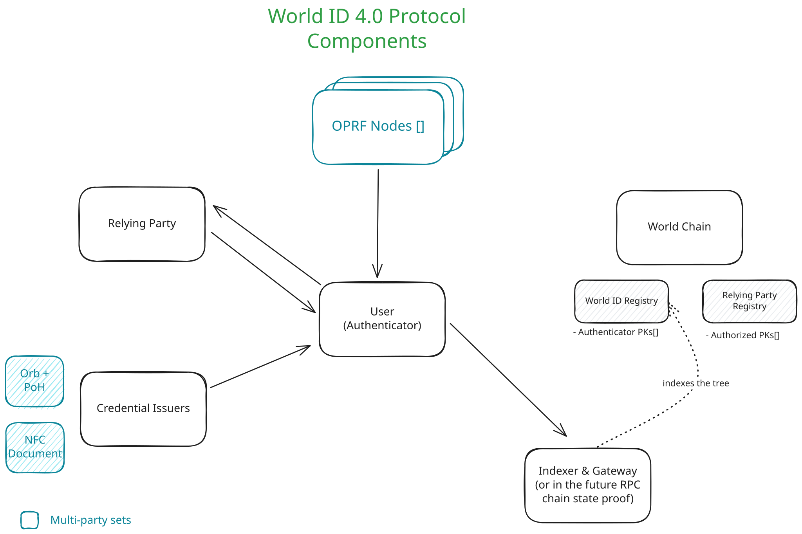
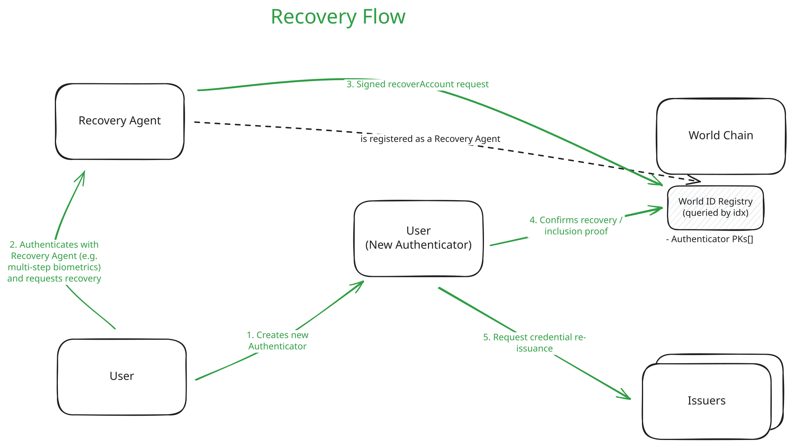

Documentation for World ID
- The Protocol’s primary source of documentation is directly in the codebase and particularly the foundational crates.
- Primitives: https://docs.rs/world-id-primitives
- Core: https://docs.rs/world-id-core
- The developer documentation and generally how to use World ID can be found in: https://docs.world.org/world-id
Supporting Documentation
This folder includes supporting documentation for World ID, particularly point-in-time product and technical specifications for discussion and reference. These docs differ from the primary sources (e.g. crates documentation) because they are static at the time of introduction.
- World ID 4.0 product and technical specifications: High level product and technical specs of the World ID 4.0 Upgrade.
- World ID 4.0 trusted setup: High level explanation of what a
trusted setup is and how to contribute to it for World ID 4.0. After the trusted setup is done it
will also contain a step by step guide to verify the provenance of the
.zkeyfiles used to power World ID ZK circuits.
World ID Improvement Proposals
| Spec | Status | Description |
|---|---|---|
| WIP-100: Cryptographic Primitives for World ID Protocol | 🌿 Living | Establishes the default cryptographic primitives used throughout the Protocol. |
| WIP-101: RP Request Authorization Method for Smart Contracts | 🟠 Last Call | Standard to verify a relying party proof request for a World ID Proof in Smart Contracts |
| WIP-102: Simplified Optimistic Recovery Agent Update | 🟠 Last Call | Replace the current Recovery Agent update mechanism with an immediate update and revert window, removing the need for a follow-up execute transaction. |
| WIP-103: Proof of Ownership | 🟠 Last Call | Mechanism to privately prove ownership of a registered leaf via a blinded leaf index commitment. |
| WIP-104: Proving and Admin Authenticators with Fixed Permission Sets | ✅ Final | Introduce two classes of authenticators where a Proving Authenticator is not allowed to perform any management operations on a World ID. |
| WIP-105: Authenticator Message Format | 🟡 Draft | Standard format for messages exchanged between World ID authenticators. |
| WIP-106: Authenticator Assertions | 🟡 Draft | Mechanism for Authenticator Providers to attest the integrity of the environment in which a World ID Proof is generated. |
| WIP-107: Experimental Fees Per-Period | 🧪 Experimental | Experimental introduction of fees per-period per-World ID for proofs, pre-paid by RPs. |
| WIP-108: Authenticator State Sync | 🟡 Draft | Synchronize credential vaults across authenticators using continuous group key agreement. |
| WIP-109: Authenticator Registration Protocol | 🟡 Draft | Protocol for securely confirming and authorizing the registration of a new World ID authenticator. |
| WIP-110: Message Bridge | 🚧 Planned | Generic encrypted messaging between protocol participants, with pairing and hybrid post-quantum key exchange. |
| WIP-111: Passkey Ownership Proof | 🟡 Draft | Prove control of a World ID using a WebAuthn ES256 passkey registered as a proving authenticator, without a PRF-derived BabyJubJub secret. |
| WIP-112: Authenticator Registration over iroh | 🗑️ Cancelled | Secure bidirectional transport for WIP-109 authenticator registration using iroh. |
| WIP-113: Uniqueness Identifiers | 🟡 Draft | Let RPs whitelisted by the Authenticator Provider receive the same nullifier more than once and use it as a stable per-user identifier. |
| WIP-201: Flamingo Verifier | 🟡 Draft | A TEE-backed service that compares images or embeddings under a requested match strictness and signs a Flamingo Token committing to its inputs. |
| WIP-202: Proof of Embedding Similarity | 🟡 Draft | Mechanism to prove similarity between vector embeddings based on a World ID credential. |
Abstract
The World ID v4.0 release introduces account abstraction at its core, transforming a World ID from a single secret into an abstract record in a public registry (called WorldIDRegistry) with multiple authorized keys. This fundamental change enables several key improvements:
- Multi-key support: Users can generate proofs using multiple valid authenticators (such as across multiple devices, multiple platforms or multiple applications) while maintaining the same identity.
- Improved Protocol Resilience: Multi-key support reduces likelihood of loss of all keys, key rotation and revocation are natively supported, and the user can (optionally) define a World ID Recovery Agent (e.g. such as biometric authentication).
- Web-based authenticator provider: A reference web authenticator provider simplifies World ID usage directly in browsers, improving user experience and adoption potential.
- Improved privacy: The protocol enforces one-time use of nullifiers for longer-term actions, preventing tracking while maintaining proof integrity.
These changes collectively increase security, privacy, and usability while enabling more sophisticated applications of human verification in the Age of AI. For more details on what is changing from a technical standpoint, please see Summary: What is Changing?.
Product Specs
At a high level, this release of the Protocol is about Account Abstraction. A World ID is no longer tied to a single secret, and instead is an abstract record created in the public WorldIDRegistry with a defined set of authorized keys which allow the user to interact with their World ID (a similar mental model is how passkeys authorize accounts for specific websites or how smart contract wallets work in the Ethereum ecosystem).
Stemming from the enablement of other Authenticators to exist, a reference open-source, web-based Authenticator will be published which will reduce some of the overhead for using a World ID and simplifies the user experience. The enhanced user experience will enable simpler and more widespread adoption of the Protocol.
Definitions
- Authenticator: A software or hardware agent (e.g., app, device, web client, or service) that controls a set of authorized keypairs for a World ID Account and is functionally capable of interacting with the Protocol, and is therefore permitted to act on that account’s behalf. An Authenticator is the agent of users/holders. Each Authenticator is registered in the
WorldIDRegistrythrough their authorized keypairs. - OPRF Nodes: The OPRF Nodes are a multi-party set (MPC) of nodes responsible for enabling the nullifier generation which users present to RPs to prove uniqueness.
- Recovery Agent: A party designated by the user which has a special permission to recover their World ID Account in case of loss of all Authenticators. The party may be a set of entities represented with abstract rules (e.g. through a smart contract). This designation is optional and done on-chain.
- Action: Maintains definition from previous Protocol version.
- Nullifier: Maintains definition from previous Protocol version. A nullifier is a one-time use identifier that guarantees an action can only be taken once. It’s analogous to a one-time use ticket, a user generates a nullifier through a Proof, and presents it to an RP. A nullifier will always be the same for the same user and the same RP+Action.
- Uniqueness Proof: A statement where a user proves they are performing an action once and they own a particular credential (e.g. I’m a unique person with a PoH credential voting on this proposal once). These proofs cannot be cryptographically associated with any other proof (e.g. not across RP, or even to the same RP).
- Session Proofs: Used with a
sessionIdprovided by an Authenticator and subsequently provided by an RP to receive a statement that cryptographically guarantees the same World ID is being used (e.g. I have an account with an RP and I want to prove I now have a new Credential). These proofs cannot be associated across RPs, across sessions with the same RP, or with any other proof.
Key Product Functionality
This notes the key new features or functionality for this release of World ID (v4.0):
- Multi-key support: A World ID is not bound to a single key. A user can generate proofs on multiple valid authenticators (e.g. devices, platforms). With the important exception of security properties of the Authenticator, a proof proves the same thing to an RP regardless of which authenticator was used.
- A user can add or remove different valid authenticators to manage their World ID (Portability).
- Motivation: Allowing multiple authenticators serves to the Decentralization of the Protocol, with no reliance on a single actor (such as a single Authenticator provider, e.g. World App). Furthermore, abstracting a World ID into a conceptual record vs. a single secret enables the secure and practical existence of multiple Authenticators as well as enabling Recovery in case of loss and rotation in case of compromise.
- Recovery: Regain access to the same World ID through Recovery Agents.
- Motivation: Recovery is a fundamental building block of a Proof-of-Human Protocol (see Whitepaper on why). While we expect authenticator providers to offer robust backup mechanisms, the user must be able to recover their World ID and related state in a contingency scenario.
- Web-based Authenticator Provider: A limited authenticator that allows usage of World ID in the web browser. This serves both as a reference of an authenticator and also for improved UX for certain RP flows. Functionality is limited as enrollment of credentials is out of the scope for this initial release.
- Motivation: A lightweight web-based authenticator enables simpler usage of World ID which provides a better user experience and will enable more growth as interacting with RPs will be significantly simpler.
- Trusted RPs. An authenticator can identify a request comes from a valid RP.
- Motivation: Authenticators need to be able to identify that they’re generating proofs for the right recipient to reduce potential for proof phishing (e.g. a malicious actor asking you for a proof meant for a different RP to know if you’ve performed that action). In addition, this enables future introduction of Protocol fees.
Non-Functional Requirements
- Privacy.
- Assuming non-collusion of nodes of each multi-party system, the user’s privacy cannot be compromised by any single party, neither correlation of multiple actions nor direct identification of a user. For example, it’s impossible to know that a specific user performed a specific action (identification) or that two different Actions were performed by the same user (correlation).
- Addressing the attack vector of collusion of a threshold (or all) nodes is covered in the Other Risk Considerations section.
- Strict requirements for the identifiers handed off by the Protocol are introduced. See details in Tech Specs.
- No human super-cookies. Permanent state or linkable state is as privacy-preserving as possible and is protocol-enforced. Privacy preserving in this context means that it’s not possible to identify a single person, even pseudonymously, across a long period of time without ongoing consent. Any exposed long-living / constant IDs should be protected as secrets.
- Security.
- A World ID is not a single secret that needs to be shared or can’t be rotated.
- A World ID cannot be recovered or an authenticator added without verifiable user intent (through knowledge of a secret key of an authorized authenticator).
- Collusion of all nodes with an multi-party system (MPC) does not allow performing actions on the user’s behalf.
- User Auditability — each user needs to be able to see account management events that have been authorized with their World ID, for example things like adding / removing of authenticators.
- Migration Path.
- There needs to be a clear migration path for all currently active and relevant use cases to the new version of the Protocol.
User Flows (Authenticator)

Other Considerations
- The privacy and security implications of Authenticators is improved (key revocation, etc.) but the user must trust their Authenticator(s). The Authenticator must handle the user’s Credentials (or previously Personal Custody Packages) and keys correctly.
Technical Specs
Tip
Please note these are the high level technical specifications at the time of introduction of World ID 4.0. The most up-to-date technical documentation reflecting the current state of the Protocol can always be found in the developer documentation and the Protocol repository.
Summary: What is Changing?
- A World ID is now a record on an on-chain registry and more importantly a single World ID can have multiple public keys.
- This also means identity commitments (
identityCommitment) no longer exist. Instead, the identification mechanism is the knowledge of a secret key corresponding to a public key registered in a specific leaf index in theWorldIDRegistry. - Also implies that the on-chain trees of identity commitments is gone in favor of a single
WorldIDRegistry.
- This also means identity commitments (
- Creating a World ID now occurs through on-chain registration (vs. as an offline keypair generation previously), and issuing Credentials is now done without on-chain interaction. Credentials are now issued by the Issuer signing them. Previously, the Issuer would add the user’s identity commitment to the relevant on-chain tree.
- Nullifiers are enforced one-time use. Previously there was no enforcement of nullifiers being one-time use and they could become pseudonymous identifiers for an RP, now Authenticators will not issue a nullifier more than once.
- [For RPs only]. When RPs require users to prove they are still the same World ID that originally performed an action, they will be able to store an identifier (a
sessionId) and provide it to the user for subsequent proofs. With Proof of Human, this allows RPs to establish they are interacting with the same World ID, potentially with different credentials too. See Session Proofs for further details. - [For Issuers only]. Authentication based on using nullifiers from ZKPs as identifiers is no longer supported. A new authentication mechanism is introduced for issuers.
- Access to a World ID can be recovered. A user can designate a Recovery Agent for their account which will allow for recovery in case of access to all Authenticators is lost.
- [Recovery Agent Scope]. Users may designate the PoH AMPC system as their Recovery Agent to recover their World ID. In the future, other Recovery Agents are expected to be available.
High level overview

Diagram of components for the World ID 4.0 Protocol.-
The World ID Registry is introduced. This public contract is the source of truth for World IDs, a World ID conceptually becomes an account, represented in a leaf of the Merkle tree in this contract. Each account is identified with its index in the tree. The registry also contains a list of authenticator public keys authorized to act on behalf of the holder. The OPRF Nodes, as well as RPs use this to verify proofs (through an Merkle inclusion proof within the ZKPs).
-
Similarly, a Relying Party Registry is introduced. This registry contains a list of authorized Relying Parties with their accompanying authorized public keys. The registry permits RPs to authenticate requests for proofs to Authenticators.
-
The multi-party set of OPRF Nodes is introduced. This set of nodes are now responsible for generating the nullifiers that users present to RPs to prove uniqueness. The nullifiers are generated through a Verified Threshold Oblivious Pseudorandom Function (vOPRF) with participation of the OPRF nodes. Nodes verify requests for nullifiers are properly validated by both RPs and users (see Uniqueness Proofs), and only then will generate the required output to compute the user’s nullifier. The users then construct the final nullifier and prove its computation in the proof they present to RPs.
- A multi-party OPRF is necessary because it prevents nullifiers from being guessable, i.e. nullifiers are deterministic but appear random (recall that PRF outputs under a uniformly random key are computationally indistinguishable from a uniformly random function). This could theoretically be accomplished with a regular hash function, but then nullifiers could be brute forced by computing the hash for all possible
leafIndexes (which are public on-chain). To prevent this, secret entropy is required (in World ID ≤ 3.0, the user provided this entropy). Since this is not available anymore, the entropy now comes from the OPRF nodes. - Additionally, to prevent brute forcing even with involvement of OPRF nodes, OPRF nodes require authentication before computing each hash. They authenticate the user through a ZKP that proves knowledge of an Authenticator secret key authorized in the
WorldIDRegistryfor the particularleafIndexfor which they are generating a nullifier. - Importantly, the OPRF nodes compute the keyed-hash function $H_k(x’)$ on a blinded input, hence they cannot learn which user is actually performing a request. Furthermore, the OPRF nodes output a proof that attests to the proper computation of $H_k$ given a committed $k_{pk}$, so neither users nor RPs need to blindly trust the OPRF nodes.
- Similar to how OPRF Nodes are used to generate the nullifiers presented to RPs, these nodes also generate a blinding factor for each credential so there cannot be correlation of World IDs from malicious issuers.
- More information on the OPRF Nodes can be found in the paper: “A Nullifier Protocol based on a Verifiable, Threshold OPRF”.
- Details about the nature, number, and diversity requirements of OPRF nodes must be established before the production network is live.
- A multi-party OPRF is necessary because it prevents nullifiers from being guessable, i.e. nullifiers are deterministic but appear random (recall that PRF outputs under a uniformly random key are computationally indistinguishable from a uniformly random function). This could theoretically be accomplished with a regular hash function, but then nullifiers could be brute forced by computing the hash for all possible
-
Protocol differences at a glance:
World ID ≤3.0 World ID 4.0 (2025) What is a World ID? A secret. An entry in public registry. Proof Generation Semaphore proofs generated on the client. Conceptually the same but with new ZK-circuits. Users generate a query proof for OPRF nodes, which provide computations that enable the nullifier generation. A final Uniqueness Proof is generated and presented to RPs. How does the Relying Party enforce uniqueness? Storing a nullifier hash. Conceptually the same. Post-compromise privacy If the user’s World ID secret leaks, all past activity could be identified.
Furthermore, the secret cannot be rotated.If a user’s authenticator secret leaks, no past activity can be identified on its own. Collusion with an RP would be required to compromise some past activity.
Secrets can be easily rotated.Recoverability Cannot be recovered if the secret is lost. Can be optionally recovered through a Recovery Agent. Credential Issuance On-chain Merkle Tree containing idComms.
Credential-equivalent held self-custodially.Signed message from the Issuer.
Credential held self-custodially.Signal (proof messages) An RP can include an arbitrary signal to which the user commits. Conceptually the same. Secret Security Secret must be stored with software protections and loaded into memory. Conceptually possible to store keys in hardware-based key stores. Initial keys will have the same characteristics as the previous protocol version due to ZK proving limitations.
Technical Details
Uniqueness Proofs
A Uniqueness Proof is how a user primarily proves they are performing an action once and they own a Credential that meets the RP’s requirements (e.g. the user has a unique government-issued document). While fundamentally the user is proving uniqueness per World ID Account when performing an action, if the request is not bound to a Credential that offers a measure of uniqueness (e.g. PoH or unique government-issued document), the proof will lack value.
sequenceDiagram
actor User
RP ->> RP: Generate & sign proof request
RP ->> User: Send proof request
User ->> Indexer: Query leafIndex and inclusion proof in WorldIDRegistry
Indexer --> World Chain: Indexes the WorldIDRegistry tree
Indexer ->> User: leafIndex & inclusion proof
User ->> User: Generate Query Proof $$\pi_{R}$$
User ->> OPRF Node i: blindedLeafIndex + $$\pi_{R}$$ + request context
OPRF Node i ->> OPRF Node i: check validity of request
OPRF Node i ->> World Chain: Verify Merkle root (usually cached)
OPRF Node i ->> OPRF Node i: Verify $$\pi_{R}$$
OPRF Node i ->> User: blinded result
User ->> User: Unblind each response and reconstruct OPRF evaluation
User ->> User: Compute blinded subject for credential
User ->> User: Generate final Proof ($$\pi_{F}$$)
alt
User <<->> Oblivious Nullifier Pool: check if nullifier exists and insert
end
User ->> RP: $$\pi_{F}$$ + nullifier
alt
RP ->> Indexer: Verify ZKP
else
RP ->> World Chain: Verify ZKP
end
RP ->> RP: Verify expected nonce
RP ->> RP: Verify nullifier uniqueness
-
The nullifier is computed by the OPRF Nodes. Computing it requires output from a threshold number of nodes to be valid.
- Importantly, the input to the OPRF Nodes is blinded so that no OPRF node can see the raw
leafIndex(i.e. OPRF nodes only know that the request is from an authorized authenticator). - Importantly, the nullifier is credential independent, so the action can only be performed once regardless of which credentials are available at the time.
- Further information on how the nullifier is computed can be found in the TACEO OPRF Whitepaper.
- Importantly, the input to the OPRF Nodes is blinded so that no OPRF node can see the raw
-
Nullifiers have the following properties, which in combination make them amenable for use by an RP to enforce anonymous per-action uniqueness:
Property Description Deterministic Given the same context ( leafIndex[blinded],rpId,action), the nullifier is always the same. Assuming honest behavior of OPRF nodes never rotating their base key. Note that the credential is intentionally not included in this context. This means that the action can be performed only once, regardless of which credentials are available at the time.Unguessable For a fixed context, the nullifier output is uniformly distributed over the output space. Even with the full set of possible users, computing candidate nullifiers is infeasible without collusion of a threshold of OPRF nodes such that the OPRF key is known. Authenticated It’s probabilistically impossible to claim ownership over a nullifier if you don’t know a secret value (a secret key whose public counterpart is registered in the WorldIDRegistry).Anonymous A nullifier hides which user generated it. To preserve anonymity, each nullifier must only be used once (otherwise repeated use makes it pseudonymous). This is the responsibility of Authenticators. Unlinkable For any two nullifiers with different contexts, the probability that an adversary can correctly distinguish whether they were derived from the same user is at most negligibly better than random guessing. Pre-image resistance For any given nullifier, and knowing the public context ( rpId,action), it is computationally infeasible to find the pre-image or theleafIndex. -
The authenticator generates two types of different zero-knowledge proofs to be able to deliver a Uniqueness Proof to an RP,
- The query proof $\pi_1$ which proves to the OPRF Nodes that the request is properly authorized by the user. This ZKP proves the request is signed by a public key which is registered for the particularly provided blinded
leafIndexin theWorldIDRegistry. - A final Uniqueness Proof $\pi_2$ which ensures at least the following constraints:
- The same constraints of the query proof are evaluated.
- Correct OPRF evaluation on
leafIndex, i.e. the generated nullifier is correct for the committed public keys from each OPRF node. - Request is signed by a public key that is registered for the
leafIndexin theWorldIDRegistry(user authentication). - The Credential was issued for this World ID, i.e. the Credential’s
submatches the blindedleafIndexof the user. - The Credential used in the proof is signed by the Issuer (through the committed key in the
CredentialSchemaIssuerRegistry). - Credential is not expired.
- Credential meets the minimum genesis_issued_at constraint provided by the RP.
- Signal and nonce provided by the RP as public inputs are committed.
- Potential future constraints may include: integrity attestation of device, enforcing the expiration of actions, credential specific checks, etc.
- The query proof $\pi_1$ which proves to the OPRF Nodes that the request is properly authorized by the user. This ZKP proves the request is signed by a public key which is registered for the particularly provided blinded
-
Oblivious Nullifier Pool. The Oblivious Nullifier Pool is a separate service which offers Private Intersection Retrieval and keeps track of used nullifiers. Its function is simply to keep a flat list of used nullifiers such that an authenticator can query if a nullifier has been used before sharing it (and the related $\pi_2$) with an RP if it has been used before. The list is flat (as the nullifier is already unique per-RP-per-action-per-user) relying on the collision-resistance property of the hash function used in the Protocol.
- This system ensures that nullifiers can’t be misused to create long running identifiers. As their name suggests, a nullifier is one-time use.
- The term oblivious is used to refer to the fact that this map is queried in a way where the servers serving such requests cannot learn which records where accessed and hence be able to compromise the user’s privacy.
- The main limitation of the nullifier pool is performance at scale. One option is to shard the pool, making trade-offs of anonymity set size vs. performance. This is still in research.
- Initially, this pool will only be used for actions that have a running period longer than a predefined threshold. This is to solve for scaling issues as this system grows.
-
Blinded subjects. To prevent correlation of users even among issuers, or in case of leaked credentials, the subjects of the credentials are blinded.
- When requesting a new credential from an issuer, the user generates a blinding factor using the OPRF nodes, $\texttt{subjectBlindingFactor}=H_k(\texttt{issuerSchemaId} \mid\mid \texttt{leafIndex})$.
- The user then hashes the blinding factor with their
leafIndexto compute thesubclaim of the credential. This value is what issuers include in the credential. - When a proof is presented, the
subjectBlindingFactoris used within the Uniqueness Proof circuit to ensure the credential is issued to the right user. The blinding factor acts as entropy to prevent correlation, but the rightleafIndexas provided in the circuit input must match correctly.
Registries
- World ID Registry
- Each user can grant access to multiple different keys to interact with their World ID. The Authenticator proves control inside a ZKP to prevent long-lived identifiers.
- In order to not leak the user, this needs to be in some structure that allows inclusion proofs. This is accomplished with Incremental Merkle Trees.
- Each Authenticator registers two keys in the registry. This is done to enable performant operations both on-chain and on zero-knowledge circuits.
- An on-chain key which is an elliptic curve key on the
secp256k1curve is used to authorize on-chain operations on the contract (e.g. adding an authenticator, removing an authenticator, etc.). The public key is simply represented as an Ethereum address. - An off-chain key which is an elliptic curve key on the
BabyJubJubcurve is used to sign requests for zero-knowledge proofs. The public key (represented as a curve point) is emitted on-chain and committed to in the contract.
- An on-chain key which is an elliptic curve key on the
- Relying Party Registry
- Each RP needs to commit to their authorized public key on the public registry, such that this can be verified in the request proof $\pi_1$ by each queried OPRF node.
- Registering an RP is a public action that anyone can take, but this requires paying a one-time registration fee (see Registration Fees below).
- In order to allow for decentralized application creation and registration, the RP Registry will be extended and restrictions further lifted in the future, but for this initial version the following applies:
- At launch, only one authorized key is allowed per RP. This will be extended in the future.
- Credential Schema Issuer Registry
- It’s a simple registry where Issuers register for each of their credential types a schema and an authorized signatory and get issued an
issuerSchemaId. This ID represents the combination of an (issuer, schema). For example: (Tools For Humanity, Orb credential). - The
issuerSchemaIdis included in the credential and is verified as part of all Proofs. When generating and verifying proofs, the signature of a credential is verified against the public key registered in the contract. - Registering an Issuer Schema also requires paying a one-time registration fee (see Registration Fees below).
- It’s a simple registry where Issuers register for each of their credential types a schema and an authorized signatory and get issued an
Registration Fees
Both the Relying Party Registry and the Credential Schema Issuer Registry charge a one-time registration fee. The fee infrastructure serves as a permissionless rate-limiting mechanism — an alternative to restricting registration to authorized callers — ensuring that registration remains open to anyone while preventing abuse.
Why the fee exists. Registering an RP or an Issuer Schema triggers the initialization of an OPRF key via a multi-round distributed key generation ceremony across the OPRF Nodes. This is a computationally expensive operation with real infrastructure cost. The registration fee is sized to cover the cost of OPRF key generation and storage for at least approximately one year.
How it works.
- The fee is paid in a configurable ERC-20 token via
safeTransferFromat the time of registration, before OPRF key generation begins.
Future: per-request fees. The registration fee described here covers only the one-time cost of onboarding. A separate per-request fee — enforced by OPRF Nodes as a proof-of-payment requirement during nullifier generation — may be introduced in a future Protocol release (4.1 or 4.2). See Future Proofing Notes for details.
Recovery
Recovery is introduced for the case where access to all authenticators (or their keys) is lost. Recovery enables users to gain back control of their World ID by registering a new Authenticator and revoking lost ones. A Recovery Agent may be designated by each user, with a special role to perform the recoverAccount operation. This special role can recover a user’s World ID and nothing else, and conversely only these agents can perform a recoverAccount operation.
Important
This section defines Recovery as a Protocol primitive. Each Recovery Agent will provide its own set of specifications for how they provide World ID recovery.

- A
recoverAccountoperation is a function defined in theWorldIDRegistrycontract which receives a signed message from the Recovery Agent with a new authenticator public key. The operation results in the new authenticator being registered and all the old authenticators being revoked. The historical state of authenticators is naturally available on-chain. - The signed message supports ERC-1271, which means it can come from a smart contract that sets its own rulesets for how recovery can be performed. For example, a Recovery Agent may require signatures from multiple parties to allow a recovery. Furthermore, this enables that a Recovery Agent can be defined as an abstract entity governed by its own smart contract.
- Importantly, recovery will only be possible for users in the new Protocol. Fundamentally, there’s no way to recover previously lost World IDs because it’s a secret that has been lost. Some fallbacks are being introduced to mitigate this, see Migration Considerations for details.
- Designating a Recovery Agent is entirely optional and can be updated at any time.
- Once a World ID account has been recovered, new Credentials can be requested to each relevant Issuer. Each Issuer can define their own set of rules for what is needed to recover their Credential.
- Future Consideration. In the future, a new feature could be introduced where a World ID is used as a signer on something else. For example, a World ID signature could be used as a factor for recovering a cryptocurrency wallet. While this functionality builds on top of the Recovery primitive, it is independent of this primitive and not in its scope.
Session Proofs
RPs can create sessions for their app to ensure that it’s still the same World ID interacting with them across multiple interactions. Session Proofs intentionally allow the RP to link multiple interactions in their app to the same World ID. Sessions require the RP to store a sessionId. A sessionId can be created as part of a request for a Uniqueness Proof (see Binding Uniqueness Proofs to a Session), which binds the sessionId to a nullifier, or standalone without uniqueness binding. Potential use cases include:
- Credential upgrade: A user verified previously with one credential and now wants to prove using another one (e.g. unlocking additional benefits). Important Note. While this can be used to prove a new Credential belongs to the same World ID, the implications must be carefully considered when it comes to uniqueness. Uniqueness sets are independent, e.g. users may have both a PoH and a government document Credential, but this doesn’t mean that by accepting both as an RP you can get guarantees that only a single human is behind each. A user may choose to obtain a PoH Credential and a document Credential in different World IDs.
- Credential expiration check: A user previously enrolled with one Credential; periodically,the RP wants to make sure the user’s Credential is still valid (for example not expired).
- (Future). RP-level Face Auth: Currently, Face Auth only ensures that the whoever produces the proof is the same person that received the Credential. However, for some applications an RP may want to make sure the same person is behind multiple interactions.
Session Proofs use the same zero-knowledge circuits as Uniqueness Proofs, but authenticators MUST clearly distinguish them to users since they involve a reusable identifier that can link interactions. Instead of a nullifier, Session Proofs return a sessionNullifier which is required for verification but does not provide the same uniqueness guarantee (see below on sessionNullifier).
Session Proofs without uniqueness binding work in the following manner:
- An RP requests an authenticator to create a session.
- The authenticator provides a
sessionId, together with an initial session proof that proves that thesessionIdis well formed. A unique identifier bound to the user’s World ID for that RP. - The RP stores this
sessionIdalongside their account for the user. - For subsequent interactions, the RP includes the
sessionIdin proof requests. The user can then generate a Session Proof to prove they have the same World ID. Different proofs over time with the samesessionIdmay use different credentials. - A
sessionIdis generated as outlined below, whereris computationally indistinguishable from random.
sequenceDiagram participant o as OPRF participant a as Authenticator participant rp as RP critical initial/enrollment rp ->> a: Initial session request a->>a: Generate oprf_seed locally (CSPRNG) a->>o: r=OPRF(rpPublicKey, DS_C || leafIndex || oprf_seed) a->>a: Compute C = H(DS_C || leafIndex || r) a->>a: sessionId = encode(C, oprf_seed) a ->> rp: sessionId + proof (see below) end rp->>a: session proof request (incl. sessionId) alt [Recover r from sessionId.oprf_seed] a->>o: r=OPRF(rpPublicKey, DS_C || leafIndex || sessionId.oprf_seed) end a->>a: C'=H(DS_C || leafIndex || r) as public output of proof a->>a: check if sessionId == C' (in ZK-circuit) a->>rp: proof + sessionNullifier rp->>rp: verify proof (checking sessionId == C' in verifier contract)
Recovering r for subsequent Session Proofs. The OPRF is deterministic: the same input and key always produce the same output. This means r can be re-derived at any time by calling the OPRF nodes with the original oprf_seed (stored in sessionId). Caching r is an optimization, not a requirement. The OPRF call to derive r and the OPRF call to derive the nullifier can be made in parallel.
Session Nullifiers
- A
sessionNullifieris used for verifying Session Proofs. It must be passed to the verification contract. Internally, thesessionNullifierimplements custom encoding on the Authenticator and on theWorldIDVerifiercontract. - The raison d’être is simply to allow usage of the same ZK circuit as for Uniqueness Proofs. Reducing the number of circuits is currently a priority because of the size of the circuits needed to be bundled in Authenticator clients. As World ID moves to a different proving system, this type will no longer be required.
- Session Proofs use a randomized
actionas circuit input. This randomizedactionensures the circuit’s nullifier output is unique per proof, preserving the one-time use property. It is verified internally within the circuit. It does not affectrderivation.
Binding Uniqueness Proofs to a Session
- A Uniqueness Proof request may set the
sessionIdfield to"create"to atomically mint a session and bind the proof to it. The protocol verifies in-circuit that the session and the nullifier belong to the same World ID. The flow is outlined below. Binding a Uniqueness Proof to an already existingsessionIdis not supported. A session is either created together with the uniqueness proof, or it carries no uniqueness binding at all. - The blinding factor
rof the mintedsessionIdis returned to the Authenticator for caching; as for session proofs it can always be re-derived from theoprf_seed. - Verifiers MUST check bound proofs against the session’s commitment. With the session commitment set to
0the proof is valid but unbound. On-chain, the dedicatedverifyWithSession()entry point does this (it rejectssessionId == 0). The convenienceverify()entry point pins the signal to0and rejects bound proofs, so binding is explicit in both directions. - Binding one
sessionIdto Uniqueness Proofs under different actions intentionally links those actions to the same World ID; Authenticators MUST clearly surface this to users.
sequenceDiagram participant rp as RP participant a as Authenticator participant o as OPRF Nodes participant v as Verifier rp->>a: Signed Uniqueness Proof request (action + sessionId = "create") a->>a: Generate oprf_seed a->>o: Derive session blinding factor r a->>a: sessionId = encode(H(DS_C || leafIndex || r), oprf_seed) par Session binding a->>a: Constrain sessionId.commitment to the user's leafIndex and Uniqueness a->>o: Derive nullifier for (leafIndex, rpId, action) end a->>a: Generate final proof with sessionId.commitment as a public signal a->>rp: proof + nullifier + sessionId rp->>v: verifyWithSession(..., sessionId.commitment, proof) v->>v: Verify the non-zero session commitment and proof v-->>rp: Valid session-bound Uniqueness Proof rp->>rp: Verify nullifier uniqueness
Web-based Authenticator Provider
To allow for an improved user experience, a reference browser-based Authenticator provider is being introduced. This app provides (currently limited) World ID functionality but without leaving the browser.
- At a high-level, it allows usage of a World ID. The user can generate proofs in their browser, and this is particularly useful for when working on other devices (such as desktop) or on non-native apps.
- Whenever an RP requires a user’s World ID proof, they can simply redirect the user to the web app (handled automatically by common SDKs like ID Kit). The user authenticates with their passkey, generates the proof in their browser and passes it back to the RP.
- Further documentation on the architecture of the reference web-based Authenticator provider will be published in the https://github.com/worldcoin/web-authenticator repository.
- Credential Enrollment will not be supported in the initial release, but this may be introduced in the future.
Migration Considerations
At a high level, every user and RP will need to migrate to the new Protocol. Detailed migration paths will be published in the Developer docs.
Privacy Considerations
-
The Protocol, via the Oblivious Nullifier Pool enforces that nullifiers cannot be generated more than once (as long as authenticators are properly implemented), which prevents long running user tracking, increasing the privacy from the previous protocol version.
-
In adversarial scenarios, these are the most relevant privacy considerations,
Attack scenario World ID ≤3.0 World ID 4.0 (2025) Compromised user’s secret ⚠️ Potentially reveals all past activity if the attacker knows the public app IDs and actions. ✅ Cannot reveal past activity on its own Malicious RP ✅ A malicious RP on its own doesn’t reveal past activity ✅ A malicious RP on its own doesn’t reveal past activity Malicious OPRF node N/A ✅ Cannot compromise user’s past activity Collusion of threshold OPRF nodes N/A ⚠️ Could reveal user’s past activity (but requires having nullifiers to match against, e.g. through RP collusion) Compromised user’s secret + RP collusion ⚠️ Potentially reveals all past activity. Offline attack. ⚠️ Can reveal user’s past activity for that RP. Online attack (requires calls to OPRF nodes). Malicious Authenticator ⚠️ Potentially reveals all past activity if the attacker knows the public app IDs and actions. ⚠️ A malicious or compromised authenticator could reveal user’s activity. This could likely translate in users putting their trust in OSS authenticators. User coercion ⚠️ Potentially reveals all past activity. Offline attack. ⚠️ Can force reveal of non-expired nullifiers which in combination with RPs or other information may reveal past activity.
Other Risk Considerations
- Loss of State. The OPRF nodes work with an
m-of-nthreshold. If $n-m+1$ nodes loses their keys, the state of the Protocol will be lost, there won’t be a way to generate the correct nullifiers and the state of “consumed” or performed actions will be lost. - Censoring by OPRF nodes. OPRF nodes could reject generating nullifiers for users. It’s difficult for this to be a targeted attack because the
leafIndexis blinded, but they could censor specific RPs or actions. - Compromised OPRF nodes. Should a threshold of nodes’ key materials be compromised, or a threshold of nodes collude maliciously, users’ past and/or ongoing activity could be compromised, i.e. these nodes could arbitrary compute any nullifier because the
leafIndexes are known and the domain space is relatively low. To be useful, this would require matching nullifiers to actual usage with RPs, or knowing a user’sleafIndex, at least the second not being straightforward. This is a risk that will be progressively mitigated, and the following strategies are being researched for upcoming minor Protocol version updates:- Provable secure environments for OPRF nodes. Running OPRF nodes in attestable secure environments backed by secure hardware where the key material is securely stored and the execution provable. Given the nature of the computations of OPRF nodes, it is quite feasible that a plurality of enviroments and hardware providers could be supported. Authenticators would be able to verify attestations from OPRF nodes on every proof request.
- Increase on the number of OPRF nodes. Increasing the number of OPRF nodes and the threshold required to generate nullifiers reduces the risk of compromise. It is also very feasible to significantly extend the number of nodes over time. The cost of running a node is relatively low.
- Strict key management policies. RPs will be able to specify their policies for action duration such that keys are destroyed after their utility period has elapsed.
- Authenticator Risk. Aside from having access to the user’s credentials, an Authenticator must learn of a user’s raw
leafIndexto be able to generate Proofs. A malicious Authenticator can misuse this to track the user, even though that tracking cannot be correlated to nullifiers provided to RPs on its own. Different strategies to mitigate Authenticator risk are being explored. - Recovery Agent Risk. Should a user designate a Recovery Agent, this entity has a special permission that allows it to gain access to the user’s World ID, which could be misused. Beyond the explicit risk of a malicious Recovery Agent compromising a user’s World ID, users need to consider the different risks associated with different Recovery Agents based on how they perform authentication.
Future Proofing Notes (World ID 4.x future releases and beyond)
This is not a comprehensive list, but it outlines general topics that may be the target of upcoming Protocol releases which are not currently covered on this release.
- Face Auth. The signature on the credential by the issuer will allow for the introduction of a provable (still with camera sensor trust) FaceAuth check during proof generation.
- Authenticator policies and permission set. In this release, the
WorldIDRegistrycontains only a flat list of public keys, but this could be upgraded to be a more complex data structure that codifies explicit permissions for each key such that each authenticator can have a different policy for each action (e.g. add an authenticator vs. generating a proof), and this can be publicly verified. - Client-side proving. With the introduction of client-side proving and later potentially other types of proofs (e.g. age attestation), it will be possible to combine Uniqueness Proofs with additional attestations.
- Issuers having the ability to revoke Credentials.
- Establishing trust between protocol parties (e.g. identifying a trustworthy Authenticator).
- Ability to merge multiple World IDs, which translates into an ability to rotate identifiers with each Issuer.
- On the RP registry. In the future, the RP trust could also be anchored in other existing mechanisms, such as their domain name (DNS). Furthermore, actions could also be publicly registered for auditability and enforcement.
- World ID as signer (or biometric recovery). Similar to how recovering a World ID is possible because PoH AMPC allows for the addition of a new authenticator, it’ll be conceptually possible that a World ID could be a recovery signer for other accounts.
- Man-in-the-middle (MITM) proof phishing protection. While the attack vector of proof phishing is reduced with the introduction of the RP registry, it may still be possible to MITM proofs. Further protection mechanisms are required to mitigate this.
- In the future, credentials could be authenticator-specific, where issuers sign them for use with a specific authenticator only.
- Per-request fee gates may be introduced in the future (targeting 4.1 or 4.2) such that the OPRF Nodes receive a proof of payment as part of the request to generate a nullifier. This is distinct from the one-time registration fee already in place (see Registration Fees).
- Supporting cryptographic operations that enables secrets that can live in secure hardware and never be exported.
World ID 4.0 Trusted Setup
How a trusted setup works
World ID 4.0 uses a Groth16 Phase 2 trusted setup ceremony for its zk-SNARK circuits. In this process, multiple participants each add their own randomness contribution (often called “toxic waste”) to circuit-specific setup artifacts (.zkey), and each contribution is publicly verifiable as part of a transcript. Security relies on at least one participant contributing honestly and permanently deleting their secret randomness.
Why we are doing this for World ID 4.0
The World ID 4.0 ceremony is for the Circom circuits part of the oprf-service stack:
OPRFQueryProofOPRFNullifierProofOPRFKeyGenProof13OPRFKeyGenProof25OPRFKeyGenProof37
These circuits require Groth16 proving keys, which are produced via a Phase 2 setup. The trusted setup is therefore a required part of preparing production-grade proving artifacts for the World ID 4.0 protocol.
How to contribute
Note
The World ID 4.0 trusted setup ceremony is closed. New contributions are no longer accepted.
The @worldcoin/world-id-trusted-setup-cli package was built as a fork of PSE’s p0tion for organizing a trusted setup ceremony with minimum work needed to be done by the contributors. During the active ceremony, contributors used the following flow:
- Authenticate with GitHub device-flow OAuth (used by the CLI and for ceremony identity/attestation flow):
npx @worldcoin/world-id-trusted-setup-cli auth
- Run the contribution command to join an open ceremony and compute/upload your contribution (<10 min on average):
npx @worldcoin/world-id-trusted-setup-cli contribute
If you had any issues contributing to the ceremony, please contact our ceremony coordinator dcbuilder on Telegram.
How it was
Note
If you want to learn more about the trusted setup, watch the rendered explainer video: World Chain post.
Contribution totals (excluding the coordinator finalization contribution) are documented in this summary tweet by @dcbuilder:
OPRFKeyGenProof13:113OPRFKeyGenProof25:111OPRFKeyGenProof37:105OPRFNullifierProof:104OPRFQueryProof:104
Full ceremony artifacts, verification transcripts, the explainer video, manim source, and contribution attestations
are stored on the trusted-setup orphan branch to keep the main branch lightweight.
WIP-100: Cryptographic Primitives for World ID Protocol
1. Abstract
This spec establishes the default cryptographic primitives used throughout the World ID Protocol (the “Protocol”) such as the default elliptic curve, field, signature scheme and hashing. It includes particularly important constraints and validations which are security-critical.
2. Motivation
The Protocol is heavily reliant on different cryptographic primitives to uphold privacy and security. The correct definition and implementation of such primitives is essential for the Protocol operation. Furthermore, the spec documentation permits multiple implementations to exist in an interoperable way.
3. Specification
The key words “MUST”, “MUST NOT”, “REQUIRED”, “SHALL”, “SHALL NOT”, “SHOULD”, “SHOULD NOT”, “RECOMMENDED”, “MAY”, and “OPTIONAL” in this document are to be interpreted as described in RFC 2119.
3.1 Field
Unless otherwise noted, all circuits MUST be arithmetised over $F_q$, the scalar field of BN254, which is also the base field of BabyJubJub. All arithmetic MUST be done over $F_q$, except where a scalar of the BabyJubJub group is required, in which case arithmetic MUST be done over $F_r$, BabyJubJub’s own scalar field.
-
$F_q$ (
Fq) is the prime field with modulus$q = 21888242871839275222246405745257275088548364400416034343698204186575808495617$
-
$F_r$ (
Fr) is the prime field with modulus $r$, the order of BabyJubJub’s large prime-order subgroup (see Curve):$r = 2736030358979909402780800718157159386076813972158567259200215660948447373041$
Throughout the Protocol and this spec, the arkworks crates naming convention is generally used. This non-normative table is included for reference for the avoidance of doubt.
| Attribute | World ID Protocol | ark-babyjubjub | OPRF paper | EIP-2494 |
|---|---|---|---|---|
| BN254 scalar field, i.e. BabyJubJub’s base field | $F_q$ | Fq | $\mathbb{F}_p$ | $\mathbb{F}_r$ |
| Modulus of the Base Field | $q$ | Fq::MODULUS | $p$ | $r$ |
| BabyJubJub’s scalar field | $F_r$ | Fr | $\mathbb{F}_q$ | — |
| Prime subgroup order (modulus of Scalar Field) | $r$ | Fr::MODULUS | $q$ | $l$ |
| Curve order | $n$ | — | $n$ | $n$ |
| Cofactor | $h$ | COFACTOR | $h$ | $h$ |
3.2 Curve
BabyJubJub is defined in EIP-2494, which specifies three isomorphic forms, the Protocol uses the twisted Edwards form $E$ over $F_q$ given by
$$168700,x^2 + y^2 = 1 + 168696,x^2 y^2$$
All group operations, including key generation, signatures and scalar multiplication, MUST use this form. In particular the reduced twisted Edwards form, used by the ark-ed-on-bn254 crate, is a different curve and MUST NOT be substituted; ark-babyjubjub implements the form above.
$E$ has order
$$n = 21888242871839275222246405745257275088614511777268538073601725287587578984328$$
which factors as $n = h \cdot r$ with cofactor $h = 8$.
The base point of the Protocol is $G$ (ark_babyjubjub::EdwardsConfig::GENERATOR), of order $r$:
$$G = \left(5299619240641551281634865583518297030282874472190772894086521144482721001553,\ 16950150798460657717958625567821834550301663161624707787222815936182638968203\right)$$
3.3 Hashing
Unless otherwise noted, hashing is done via a Poseidon2 permutation over $F_q$. $P_t$ denotes the Poseidon2 permutation on $F_q^t$ with the $x^5$ S-box and the round counts below; it is a permutation, not a hash. The hash constructions built from it are defined in the subsections that follow.
| $t$ | $R_F$ (external rounds) | $R_P$ (internal rounds) |
|---|---|---|
| 2 | 8 | 56 |
| 3 | 8 | 56 |
| 4 | 8 | 56 |
| 8 | 8 | 57 |
| 12 | 8 | 57 |
| 16 | 8 | 57 |
Round constants and the external/internal matrices MUST be those produced for BN254 at the given $t$ by the reference Poseidon2 parameter generation script. Widths not listed above MUST NOT be used.
Any use of Poseidon2 MUST follow the mode and specifications of this section (“Hashing”) unless otherwise noted (e.g. Merkle Inclusion Proof).
3.3.1 Domain separators
Unless otherwise specified, new domain separator labels MUST use WORLD-ID/WIP-<number>/<purpose>, where <number> is the defining WIP’s decimal number and <purpose> is an uppercase alphanumeric ASCII identifier for the construction within that WIP. For example, WORLD-ID/WIP-111/SIGN identifies WIP-111’s authenticator authorization message. This convention applies to both fixed-arity and variable-length hash labels. Existing explicitly specified labels retain their values.
A domain separator ds is the $F_q$ element derived from an ASCII label by big-endian octet-string-to-integer conversion, reduced mod $q$. Labels MUST be at most 31 bytes, so that distinct labels cannot collide under the reduction.
Each label MUST be bound to exactly one (construction, $t$, $k$) triple. For example, EdDSA Signature is allocated to the challenge hash at $t = 8$, $k = 5$, giving
$$\texttt{ds}_{\texttt{EdDSA Signature}} = 360302137480307891234917541314130533$$
3.3.2 Fixed-arity hash $H_t$
$H_t$ is the hash used wherever the number of inputs is known in advance. For a domain separator ds and inputs $m_1, \dots, m_k$ with $k \le t - 1$:
$$H_t(\texttt{ds}; m_1, \dots, m_k) := P_t([\texttt{ds}, m_1, \dots, m_k, 0, \dots, 0])[1]$$
That is, ds MUST occupy the capacity element at state index 0, the inputs occupy state indices 1..k, any remaining state elements are zero, and the digest is state element 1 of the permutation output.
$k$ MUST be constant for a given ds. The zero padding is not length-encoded, so $H_t(\texttt{ds}; m_1)$ and $H_t(\texttt{ds}; m_1, 0)$ are the same digest; binding $k$ to ds is what prevents cross-arity collisions. A construction whose input count varies at runtime MUST NOT use $H_t$.
Caution
For emphasis, failing to follow the requirement on a constant $k$, or failing to place a fixed
dsat state index0is catastrophic. A varying $k$ gives trivial collisions and second pre-images. An input-controlled state index0allows an attacker to invert the permutation and produce pre-images for any digest.
3.3.3 Variable-length hash $H_\text{var}$
$H_\text{var}$ is the hash used for byte strings whose length is not fixed, where $H_t$ cannot be applied. It is a sponge over $P_{16}$: rate 15 across state indices 0..14, capacity at index 15, squeezing from index 0. Note this is the opposite convention to $H_t$, which places the capacity at index 0; $H_\text{var}$ places it last to follow SAFE.
The input is split into 31-byte chunks, each converted to an integer in big-endian order (the final chunk is not padded); the chunks are absorbed 15 at a time, applying $P_{16}$ after each group. The capacity is initialized with a SHA3-256 tag over the domain separator label and the input and output lengths, following SAFE. Because the length is bound into the capacity, inputs of different lengths cannot collide by padding, the weakness $H_t$ avoids by fixing $k$ instead.
3.4 Hash to Curve
Some constructions, in particular the OPRF evaluation of the OPRF paper, require a map $H_1: F_q \mapsto E$ that takes a field element to a curve point whose discrete logarithm with respect to $G$ is unknown. The Protocol follows RFC 9380 (“Hashing to Elliptic Curves”) instantiated for BabyJubJub, with the RFC’s expand_message step replaced by Poseidon2.
The default is $\mathrm{EncodeToCurve}$, RFC 9380’s encode_to_curve. Its output lies in the prime-order subgroup and has unknown discrete logarithm, but is not uniformly distributed in that subgroup: Elligator 2 reaches only about half of the curve points. This is sufficient wherever the requirement is an unknown discrete logarithm rather than uniformity, which covers every present use in the Protocol.
$\mathrm{EncodeToCurve}$ composes four steps, each defined below:
$$\mathrm{EncodeToCurve}(x) := \mathrm{ClearCofactor}\bigl(\mathrm{RationalMap}\bigl(\mathrm{Elligator2}\bigl(\mathrm{HashToField}(x)\bigr)\bigr)\bigr)$$
3.4.1 Notation
$\texttt{sgn0}$ is RFC 9380 §4.1 sgn0: the least significant bit of the canonical integer representative of its argument. $\texttt{inv0}$ is RFC 9380 §4 inv0: $\texttt{inv0}(0) = 0$ and $\texttt{inv0}(y) = y^{-1}$ otherwise. $\texttt{isSquare}$ is RFC 9380 §4 is_square and is true for zero. $\texttt{sqrt}$ returns an arbitrary one of the two roots; the sign is fixed explicitly in step 19 of Elligator 2, so implementations MUST NOT rely on $\texttt{sqrt}$ selecting a canonical root. $\texttt{CMOV}(f, g, c)$ returns $g$ if the condition $c$ holds and $f$ otherwise.
$E_M$ is the Montgomery form of BabyJubJub from EIP-2494, birationally equivalent to $E$:
$$K,t^2 = s^3 + J,s^2 + s, \qquad J = \frac{2(a+d)}{a-d} = 168698, \qquad K = \frac{4}{a-d} = 1$$
Since $K = 1$, the RFC’s constants reduce to $c_1 = J/K = 168698$ and $c_2 = 1/K^2 = 1$, and the final scalings by $K$ are no-ops. Implementations MAY drop them.
3.4.2 Hash to field
The label OPRF_HashToField_BabyJubJub is allocated to this construction at $t = 3$, $k = 1$. Writing $\texttt{ds}_\text{H2F}$ for the resulting domain separator,
$$\texttt{ds}_\text{H2F} = 32627786498498119128812045057993354633158048678109587794777765218$$
$$\mathrm{HashToField}(x) := H_3(\texttt{ds}_\text{H2F};\ x)$$
RFC 9380 §5 obtains a field element by expanding to $\lceil (\log_2 q + k)/8 \rceil$ bytes and reducing mod $q$, to bound the distance from uniform. Poseidon2 is a permutation over $F_q$, so $H_3$ already outputs an $F_q$ element with no modular bias, and the oversampling step is omitted.
3.4.3 Map to curve (Elligator 2)
$\mathrm{Elligator2}: F_q \mapsto E_M$ is RFC 9380 §6.7.1 with $Z = 5$, the value returned by the RFC’s find_z_ell2 for $F_q$ (RFC 9380 App. H.3). $Z$ is a non-square in $F_q$.
Given $u$, return $(s, t)$:
$$ \begin{aligned} &1..2.\ \ &&\texttt{tv1} = Z \cdot u^2 \ &3..4. &&\texttt{tv1} = \texttt{CMOV}(\texttt{tv1},\ 0,\ \texttt{tv1} = -1) \ &5..7. &&x_1 = -c_1 \cdot \texttt{inv0}(\texttt{tv1} + 1) \ &8..11. &&g_{x_1} = \bigl((x_1 + c_1),x_1 + c_2\bigr),x_1 \ &12. &&x_2 = -x_1 - c_1 \ &13. &&g_{x_2} = \texttt{tv1} \cdot g_{x_1} \ &14. &&e_2 = \texttt{isSquare}(g_{x_1}) \ &15..16. &&x = \texttt{CMOV}(x_2,\ x_1,\ e_2), \quad y^2 = \texttt{CMOV}(g_{x_2},\ g_{x_1},\ e_2) \ &17..19. &&y = \texttt{sqrt}(y^2), \quad y = \texttt{CMOV}(y,\ -y,\ e_2 \oplus \texttt{sgn0}(y)) \ &20..22. &&(s, t) = (x \cdot K,\ y \cdot K) \end{aligned} $$
Step 3 handles $\texttt{tv1} = -1$, for which $x_1$ is undefined; steps 14–16 select the branch that yields a square.
3.4.4 Rational map
$\mathrm{RationalMap}: E_M \mapsto E$ is RFC 9380 App. D.1. Given $(s, t)$, return $(v, w)$:
$$\texttt{tv} = \texttt{inv0}\bigl((s+1),t\bigr), \qquad v = \texttt{tv} \cdot (s+1) \cdot s, \qquad w = \texttt{CMOV}\bigl(\texttt{tv} \cdot t \cdot (s-1),\ 1,\ \texttt{tv} = 0\bigr)$$
The $\texttt{tv} = 0$ branch maps the exceptional points of the rational map to the identity $(0, 1)$ of $E$, so the map is total.
3.4.5 Clear cofactor
$$\mathrm{ClearCofactor}(Q) := h \cdot Q = 8 \cdot Q$$
Implementations SHOULD compute this as three doublings. The result lies in the prime-order subgroup, and the output of $\mathrm{EncodeToCurve}$ MAY therefore be consumed by templates that require a subgroup element without a further subgroup check.
Note that $\mathrm{ClearCofactor}$ can return the identity — for the $\mathrm{RationalMap}$ exceptional points above, and for any $Q$ of order dividing 8. Callers for which the identity is not an acceptable $H_1$ output MUST reject it explicitly.
3.5 Signatures
The default signature scheme for the World ID Protocol is an Edwards-curve Digital Signature Algorithm (EdDSA) over the twisted Edwards form $E$ of BabyJubJub, referred to as BabyJubJub-EdDSA-Poseidon2. It is the scheme given in the OPRF paper.
It follows the structure of RFC-8032 but is not an RFC 8032 ciphersuite: RFC 8032 defines only Ed25519 and Ed448, each with a fixed curve and a fixed hash function, and this scheme replaces both.
BabyJubJub-EdDSA-Poseidon2uses:- $F_q$ as its finite field;
- $E$ as its elliptic curve;
- the base point $G$ as defined in Curve, of order $r$;
- Poseidon2 as its challenge hash, as defined in Hashing;
- BLAKE3 in XOF mode for the derivation of the secret scalar $sk$ and for deterministic nonce derivation. Implementations MUST NOT substitute Poseidon2 here, nor SHA-512 as RFC 8032 would prescribe. Implementors SHOULD follow the recommendations in RFC 8032 for key generation.
- Message. Messages are elements of $F_q$. A message not natively encodable in $F_q$ MUST first be lowered to $F_q$ with a construction from Hashing.
- Challenge. $e = H_8(\texttt{ds}_{\texttt{EdDSA Signature}}; R_x, R_y, pk_x, pk_y, M)$, where $pk$ is the signer’s public key. $e$ MAY be used as a full-field scalar without reduction, since reduction mod $r$ is a no-op on the prime-order subgroup in which $pk$ is required to lie.
- Signature. The signature is $\sigma = (R, s)$. $R$ is $r’ \cdot G$, where $r’$ is RECOMMENDED to be derived by hashing the deterministic nonce concatenated by the message as in RFC 8032, and $s = r’ + e * sk$.
- Public Key. The public key $pk$ is derived as $sk \cdot G$.
3.5.1 Verification
A signature $\sigma = (R, s)$ on a message $M$ under a public key $pk$ is valid iff all of the following hold.
- Canonical encoding. $pk$ and $R$ MUST decode from canonical field elements, per Public Key Representation.
- Canonical Scalar. All $s$ scalars MUST fulfill $s \in {0, \dots, r-1}$ to prevent signature malleability (i.e. a reduced scalar).
- $pk$ in the prime-order subgroup. $pk$ MUST satisfy the curve equation, MUST lie in the prime-order subgroup, and MUST NOT be the identity. This also rejects the small-order points.
- $R$ on curve. $R$ MUST be a point satisfying the BabyJubJub curve equation because addition is only complete for on-curve points. The point is NOT REQUIRED to lie in the prime-order subgroup for security, although conforming clients MUST produce points that lie in the prime-order subgroup.
- Cofactored verification equation. The signature MUST meet the cofactored verification equation $h\left(sG - R - e \cdot pk\right) = \mathcal{O}$, with $h = 8$. See Chalkias, K. et al.. Cofactorless verification MUST NOT be used; the two accept different sets of signatures.
3.5.2 Encoding
A signature is encoded as 64 bytes: $R$ in the compressed point encoding of Public Key Representation, followed by $s$ as a canonical little-endian $F_r$ element.
3.6 Discrete Logarithm Equality Proof
A discrete logarithm equality (DLogEq) proof is a Chaum–Pedersen sigma protocol, made non-interactive by the Fiat–Shamir transform with Poseidon2 as the challenge hash. It is the scheme given in the OPRF paper.
It proves knowledge of a scalar $x \in F_r$ such that
$$A = x \cdot D \quad\text{and}\quad C = x \cdot B$$
for public points $A, B, C, D \in E$, without revealing $x$. This is what gives the OPRF public verifiability: the OPRF node publishes $A = x \cdot D$ as its public key and proves that the same $x$ produced the evaluation $C = x \cdot B$ on the client’s blinded query $B$.
$D$ is a parameter of the scheme, not fixed by it. Every present use in the Protocol instantiates $D = G$, and an implementation MAY hard-code it, but the challenge hash MUST bind $D$ regardless, so that a prover cannot move the statement to a different base.
3.6.1 Proving
Given the witness $x$ and the base $B$, the prover:
- samples a nonce $\rho \in F_r$ uniformly at random;
- computes the commitments $R_1 = \rho \cdot D$ and $R_2 = \rho \cdot B$;
- computes the challenge $e$ as defined in Challenge;
- computes the response $s = \rho + e \cdot x \in F_r$.
The proof is $\pi = (e, s)$. $\rho$ MUST be freshly sampled per proof and MUST NOT be reused or derived from public data: two proofs over distinct statements that share a $\rho$ reveal $x$.
3.6.2 Challenge
The label DLOG Equality Proof is allocated to this construction at $t = 16$ with $k = 12$ inputs, giving
$$\texttt{ds}_{\texttt{DLOG Equality Proof}} = 1523098184080632582082867317389990410064981862$$
$$e = H_{16}(\texttt{ds}{\texttt{DLOG Equality Proof}};\ A_x, A_y,\ B_x, B_y,\ C_x, C_y,\ D_x, D_y,\ R{1,x}, R_{1,y},\ R_{2,x}, R_{2,y})$$
The operand order is normative: the four statement points as $A, B, C, D$, then the two commitments as $R_1, R_2$, each point contributing $x$ then $y$.
$e$ is an element of $F_q$. As in Signatures, it MAY be used as a full-field scalar without reduction, since reduction mod $r$ is a no-op on the prime-order subgroup in which all four points are required to lie.
3.6.3 Verification
A proof $\pi = (e, s)$ for the statement $(A, B, C, D)$ is valid iff all of the following hold.
- Canonical Scalar. $s \in {0, \dots, r-1}$, as in Signatures.
- Statement points in the prime-order subgroup. Each of $A$, $B$, $C$, $D$ MUST satisfy the curve equation, MUST lie in the prime-order subgroup, and MUST NOT be the identity.
- Recomputed commitments. $R_1 = s \cdot D - e \cdot A$ and $R_2 = s \cdot B - e \cdot C$.
- Non-degenerate commitments. Neither $R_1$ nor $R_2$ is the identity.
- Challenge. $e$ equals the challenge recomputed over $(A, B, C, D, R_1, R_2)$ per Challenge, compared as $F_q$ elements.
A verifier MAY discharge check 2 for a given point outside the proof system, and a circuit implementing this verification MAY therefore omit it for a point that is a public input of the enclosing proof. In that case the check becomes an obligation on the enclosing verifier and MUST be documented as such at the circuit boundary.
3.7 Zero-Knowledge Proof Backends
The Protocol uses two proof backends, selected by the construction being proved:
| Backend | Usage |
|---|---|
| Groth16 over BN254 | Circom zero knowledge circuits including verification in Solidity. Each circuit has its own proving and verification keys from a circuit-specific trusted setup. |
| ProveKit | Noir circuits using ProveKit’s WHIR-based proof system for off-chain verification. |
Verifiers MUST use the backend, circuit verification material and ordered public inputs appropriate to the construction as defined by the relevant spec. ProveKit proofs and Groth16 proofs are not interchangeable.
3.7.1 Groth16 Proof Encoding
A Groth16 proof is three BN254 points $(A, B, C)$, with $A, C \in G_1$ and $B \in G_2$. Their coordinates use BN254’s base field $F_p$, distinct from the circuit field $F_q$ in Field:
$$p = 21888242871839275222246405745257275088696311157297823662689037894645226208583$$
Write a $G_2$ coordinate as $x_0 + x_1 i$, where $i^2 = -1$. The canonical Solidity encodings are fixed-length sequences of 32-byte unsigned big-endian words, preserving leading zero bytes:
| Form | Word order | Size |
|---|---|---|
| Uncompressed | [A.x, A.y, B.x1, B.x0, B.y1, B.y0, C.x, C.y] | 8 words / 256 bytes |
| Compressed | [a, B.x1, b, c] | 4 words / 128 bytes |
For non-infinity points, a = (A.x << 1) | sA, c = (C.x << 1) | sC, and b = (B.x0 << 2) | (hB << 1) | sB. The low bits carry square-root selection information:
- For $G_1$,
s = 0selects $y = (x^3 + 3)^{(p+1)/4} \bmod p$;s = 1selects its negation. - For $G_2$,
hBis the square-root hint andsBselects whether to negate the recovered $y$ coordinate. Both MUST followcompress_g2/decompress_g2in the reference verifier. These bits are not parity bits or the BabyJubJub sign convention. - Infinity is all-zero coordinates when uncompressed, and
0for $G_1$ or[0, 0]for $G_2$ when compressed.
Encoders MUST match the reference verifier’s compressProof output, including the imaginary-before-real order of the $G_2$ words. This is the Solidity BN254 compression scheme, not arkworks’ CanonicalSerialize compressed encoding. Coordinates MUST be canonical integers less than $p$; verifiers MUST reject invalid points and enforce the Groth16 group and pairing checks. Successful decoding alone does not establish proof validity.
3.7.2 World ID Proof Envelope
The ZeroKnowledgeProof type used for Uniqueness and Session Proofs appends the Merkle root to the compressed proof: [a, B.x1, b, c, merkle_root]. This is exactly 160 bytes, or Solidity uint256[5]. The root is a public input in $F_q$, MUST be less than $q$, and is not a fourth proof point. Other public inputs are supplied separately.
The JSON representation is the lowercase hexadecimal encoding of these 160 bytes: 320 characters, without a 0x prefix.
3.8 Shared constants
The following constants are shared by the Protocol’s circuits and implementations. Specs and constructions referencing these names MUST use the values below.
| Constant | Value | Meaning |
|---|---|---|
NUM_KEYS | 7 | Number of authenticator public key slots committed to an account’s Merkle leaf. |
MAX_DEPTH | 30 | Maximum supported account Merkle tree depth and length of the circuit’s siblings array. The Protocol uses depth 30, as specified in Merkle Inclusion Proof. |
MERKLE_LEAF_DS | 105702839725298824521994315 | Domain separator derived from the ASCII label World ID PK. |
DS_QUERY | 1773399373884719043551600379785849 | Domain separator derived from the ASCII label World ID Query. |
The domain separators use the big-endian label conversion in Domain separators and are allocated to these fixed-arity hashes:
MERKLE_LEAF_DS: $H_{16}$ with $k = 14$, hashing the seven authenticator public keys aspk[0].x, pk[0].y, ..., pk[6].x, pk[6].yin registry slot order. Unused slots MUST contain the BabyJubJub identity $(0, 1)$ and MUST NOT be omitted. State element15is zero padding.DS_QUERY: $H_4$ with $k = 3$, hashing the account leaf index, query origin identifier (rp_idin the circuits), andaction, in that order, to derive the OPRF query digest.
3.9 Public-key Encryption
By default, the Protocol SHOULD use the following mechanism for use cases requiring public-key encryption where encryption is intended as anonymous. Anyone with a recipient’s public key can encrypt a message, and the recipient uses the matching secret key to open it. Its ciphersuite is Hybrid Public Key Encryption (HPKE) from RFC 9180, in Base mode.
Implementations of this ciphersuite MUST use the following algorithms:
| Part | Algorithm | Purpose |
|---|---|---|
| Key encapsulation (KEM) | X-Wing | Establishes a shared secret for each message. |
| Key derivation (KDF) | HKDF-SHA-256 | Derives the encryption key and nonce from that secret. |
| Authenticated encryption (AEAD) | ChaCha20-Poly1305 | Encrypts data and detects tampering. |
X-Wing combines ML-KEM-768 (quantum resistance) with X25519 (conventional EC). The hybrid design protects the shared secret as long as at least one of these two components remains secure. The encryption also depends on the security of the KDF and AEAD.
The HPKE algorithm identifiers MUST be 0x647A for X-Wing, 0x0001 for HKDF-SHA-256, and 0x0003 for
ChaCha20-Poly1305.
The sealed-message format defined below is version 2. Each message MUST use a fresh HPKE Base context with cryptographically secure randomness and exactly one encryption at sequence number zero, as in RFC 9180 §6.1. Base mode does not authenticate the sender.
Applications MAY supply context bytes through HPKE’s info input. Both sides MUST use the same
bytes; when no context is specified, info MUST be empty. These bytes are not included in the
sealed message, so the enclosing protocol MUST define them if used.
3.9.1 Key Encoding
Encryption keys MUST use the X-Wing byte encodings. The recipient’s public key is exactly 1216 bytes: the 1184-byte ML-KEM-768 public key followed by the 32-byte X25519 public key. A serialized secret key is the 32-byte X-Wing seed from which both component keys are derived.
When represented as text, the public key MUST use the standard Base64 alphabet from
RFC 4648 §4, without = padding, whitespace, or a prefix.
3.9.2 Sealed-message Encoding
A sealed message MUST be the following concatenation of raw bytes, with no length prefixes or separators:
header || enc || ct
Offsets below count bytes from zero.
| Offset | Size (bytes) | Field |
|---|---|---|
| 0 | 7 | Header, defined below. |
| 7 | 1120 | enc: X-Wing encapsulated key. |
| 1127 | All remaining bytes, at least 16 | ct: encrypted message and authentication tag. |
enc MUST contain the 1088-byte ML-KEM-768 ciphertext followed by the 32-byte ephemeral X25519
public key, in that order, using the X-Wing encodings.
ct MUST be the HPKE encryption output: the encrypted plaintext followed by the 16-byte
Poly1305 tag, as defined in RFC 8439 §2.8. The nonce is derived by HPKE and is not
transmitted separately. The total sealed-message length is the plaintext length plus 1143 bytes;
an empty plaintext is allowed and produces a 1143-byte sealed message.
3.9.3 Header
The header MUST contain exactly these fields and values. The two-byte identifiers MUST be unsigned integers in big-endian order.
| Offset | Size (bytes) | Field | Required value |
|---|---|---|---|
| 0 | 1 | Format version | 0x02 |
| 1 | 2 | KEM identifier | 0x647A (X-Wing) |
| 3 | 2 | KDF identifier | 0x0001 (HKDF-SHA-256) |
| 5 | 2 | AEAD identifier | 0x0003 (ChaCha20-Poly1305) |
The complete header is therefore the following seven bytes, shown in hexadecimal:
02 64 7a 00 01 00 03
The header is not encrypted. These exact seven bytes MUST be supplied as HPKE’s associated data
(aad) for both encryption and decryption, so the authentication tag also protects the header.
Receivers MUST reject messages shorter than 1143 bytes, any header that differs from the one above, and any failed KEM decapsulation or AEAD authentication. They MUST NOT release plaintext unless authentication succeeds.
4. Public Key Representation
The PublicKey type is introduced to represent public keys of used elliptic curves. Two representations are defined and MUST NOT be conflated:
- In-circuit: an affine point, i.e. a structure with two
Fieldelements $(x, y)$. Both coordinates MUST be carried explicitly; a circuit MUST NOT decompress a point. - Wire: a compressed point of 32 bytes, holding $y$ as a canonical little-endian $F_q$ element with the sign of $x$ in the most significant bit of the final byte. The sign bit is set when $x > -x$, comparing canonical integer representatives. Note: This is not equivalent to
sgn0.
Decompression recovers $x$ from $y$ via the curve equation and selects the root indicated by the sign bit. Deserialization MUST reject a non-canonical $y$, i.e. one that is not less than $q$. The identity point of the used BabyJubJub curve is (0,1) and is represented using the above rules.
This compressed encoding is not the iden3 BabyJubJub packing, and the two are not interchangeable.
5. Merkle Inclusion Proof
The Protocol uses Merkle trees to store membership and prove inclusion. The most important use of it is to store World ID account membership in the WorldIDRegistry. An account’s position in the tree is its leaf index.
5.1 Parameters
| Parameter | Value |
|---|---|
| Arity | 2 |
| Depth | 30 |
| Node compression | $\mathrm{Compress}$, below |
| Empty leaf | $0$ |
Leaf index 0 is reserved and MUST NOT be assigned.
5.2 Node compression
Nodes MUST be combined with the Davies–Meyer compression function
$$\mathrm{Compress}(x_L, x_R) := P_2([x_L, x_R])[0] + x_L$$
$t = 2$ leaves no state element free for a capacity, so $\mathrm{Compress}$ carries no domain separator and is the one exception to Domain separators. $\mathrm{Compress}$ MUST NOT be used outside a fixed-depth Merkle tree; see Security.
5.3 Inclusion proof
An inclusion proof for a leaf at index $i$ consists of $i$ together with the 30 sibling nodes $s_0, \dots, s_{29}$, ordered from the leaf level upwards. The root is recomputed as
$$v_0 = \mathrm{leaf}, \qquad v_{j+1} = \begin{cases} \mathrm{Compress}(v_j,\ s_j) & \text{if bit } j \text{ of } i \text{ is } 0 \ \mathrm{Compress}(s_j,\ v_j) & \text{otherwise} \end{cases}$$
where bit $j$ is the $j$-th least significant bit of $i$. The proof is valid if and only if $v_{30}$ equals the tree root. Verifiers MUST apply exactly 30 compressions and ensure the depth of the Merkle tree is 30 and $\forall i$, $0 < i < 2^{30}$ MUST hold.
6. Security
- Poseidon2 in compression mode. For a security argument of using Poseidon2 with state size 2 as a 2-1 compression mode, we refer to both section 3.1 of the Poseidon2 paper as well as the treatment of the construction in section 4.2 of the Griffin paper.
- Security Target. The Protocol defines a target security of 128 bits. BabyJubJub is the binding constraint, with $r \approx 2^{251}$. Poseidon2 and BLAKE3 are both parameterized for 128 bits.
- Assumptions. The discrete logarithm problem is hard in the order-$r$ subgroup of $E$; Poseidon2 over $F_q$, at the widths in Hashing, is collision- and preimage-resistant and behaves as a random oracle under Fiat–Shamir; BLAKE3 is a secure pseudorandom function and extendable-output function.
7. Backwards Compatibility
This spec is introduced after the initial release of the World ID 4.0 protocol, it is documenting design decisions previously defined in the 4.0 Specs and from the OPRF Whitepaper, so it’s not breaking backwards compatibility. From adoption onwards, the definitions in this spec become binding for the Query Proof and Nullifier Proof used in the World ID Protocol.
Appendix A1. Test Vectors
Field elements are decimal integers. Byte strings are hexadecimal; wrapped lines are concatenated. For ascending inputs of length $n$, byte $i$ is $i \bmod 251$.
A1.1 Domain separators
label = EdDSA Signature
ds = 360302137480307891234917541314130533
label = OPRF_HashToField_BabyJubJub
ds = 32627786498498119128812045057993354633158048678109587794777765218
label = DLOG Equality Proof
ds = 1523098184080632582082867317389990410064981862
label = CLAIMS_HASH_V1
ds = 1364962988938129392107510493566513
A1.2 Poseidon2 permutations
Each width uses the input state $[0, 1, \dots, t-1]$. All output elements are listed in state order.
t = 2
output[0] = 13120422956170837922441672802975889424559262309139960702680326932494325745547
output[1] = 5923567162677888564808904842769941181302763723060647224839027357562627386465
t = 3
output[0] = 5297208644449048816064511434384511824916970985131888684874823260532015509555
output[1] = 21816030159894113985964609355246484851575571273661473159848781012394295965040
output[2] = 13940986381491601233448981668101586453321811870310341844570924906201623195336
t = 4
output[0] = 786823568102245344938517132468097745676732687098822989626730198331658606391
output[1] = 16105493617470833344375945651585194737369509580406730765188791202038211593826
output[2] = 2169165722086073256768101917994796590773204847633762971322389403847680713675
output[3] = 20837792685223053096472825292260687493226094382304778455120670180090619921530
t = 8
output[0] = 13163567864211573827878829467860137302577760599598440387954761704438999762399
output[1] = 20455256474176316209572707628365862887207812418465031548192789068192434065861
output[2] = 21622031586696647398529562584873094656572287904668581566093346191656615936784
output[3] = 18320622048765136384409419776996464874987888500923344182439589703061890523284
output[4] = 19915468795157938233689963601267136400922725821760118753901600546477081024243
output[5] = 12383970660639123649548441396659012498414420037083153473614822644813849243474
output[6] = 9133088157465982496917058916696585316057943251337470087079495488316110895778
output[7] = 5020935059501715015422969097649999023750915432550677386523662686145648636517
t = 12
output[0] = 21747906029444710619015915752138298720154944671203754489949869861753578346008
output[1] = 21513939049501079563576935737155721457540823975552714210005077333811928299954
output[2] = 20878374758297529903859235955630169324042890083998477622604596085833701396575
output[3] = 13305407019214443087878969363157154486205891028167855104279647302453885090170
output[4] = 16682997524380753461053737193932628645715072618825598039805329428502517736729
output[5] = 11014586020348730912470390146630484158055437849128185322266607138671384948760
output[6] = 2994526630703474400464067497664388590264808865382597731255193635407418251755
output[7] = 18211926869629584578138817320090692365663938300773975413887207856257516040147
output[8] = 6849612996087489069533591576260064469744251636332619304205225628198348842052
output[9] = 968962401542471672838330254238837400778821690766303842855005474297047085971
output[10] = 14385329809671587788248037486076267578972545577910278482783910245125370012450
output[11] = 4080137159225732886879922458777678533435313239919796733917069554543642876459
t = 16
output[0] = 7129053404014098913941583447102076532611276040718594073862066403012892177215
output[1] = 5458683216916715697310099658604278457911373519210593239261146303695981710820
output[2] = 11764907654416682971926471140388165312909351793032868507449176373009888376893
output[3] = 17363012907147515824232626923071954964539976031233523938322583063167173991942
output[4] = 16754602647566413012759386310550362661092317428428132757066277153406453157400
output[5] = 10442131742273378767812305849732860137449534508695657144865044457198204305243
output[6] = 13315916208806700309353847107954103794241355430909228633658159683794835480566
output[7] = 14675611827802190925530581036356245293764500457751312643178429199155385431971
output[8] = 3800671750689110886099899395588427301982955036566905831860793275457528754896
output[9] = 863058427093450397617252284543198432424871511785791089866952153042503171268
output[10] = 16110421480974327191214802248220528120081914075253666769021797524181818259452
output[11] = 3050248777345249982082587219460801555485024010345812479213241978893548171998
output[12] = 8005144369031495385854140476761376792991595443174132540148616210767138457404
output[13] = 193712991007063517677674367979478243863141973963118958643316643360558925992
output[14] = 6765341258738133397733055933640609905610288576122407133007925535267189590216
output[15] = 6411743912316957490668095751870764077217660758836562678571866082387292213586
A1.3 Hash to field
This also tests $H_3$ with one input and one zero-padding element.
label = OPRF_HashToField_BabyJubJub
input = 1
output = 10409509318069101293316722480711595867625349071847922195261332397736272636435
A1.4 Variable-length hash
The label is CLAIMS_HASH_V1. Inputs are ascending bytes. Lengths 31 and 32 cover the chunk boundary; lengths 465 and 466 cover the permutation boundary. Empty input is invalid.
length = 31
digest = 12658306072862357948815044357476041793480954961275831694284480429814652585452
length = 32
digest = 7105501883046959224351664232028428089815911608118705425730076057190813037341
length = 465
digest = 13435504409435728907439603956434602577345452839959452028063546759536561347478
length = 466
digest = 15525893232164838192982873493581731321396161293199355856124601873305423262450
A1.5 Merkle tree
Compress(0, 0) = 15621590199821056450610068202457788725601603091791048810523422053872049975191
Compress(1, 2) = 6588139247708940112588203339651261153905233202198520634825199962343944922547
Define the empty-subtree roots by $z_0 = 0$ and $z_{j+1} = \mathrm{Compress}(z_j, z_j)$. Then $z_{30}$ is the empty tree root. The inclusion vector uses $s_j = z_j$ as the sibling path.
z_2 = 15180302612178352054084191513289999058431498575847349863917170755410077436260
z_30 = 15633048765234690365876053958277790002681834789256406938121001738966131111330
leaf = 42
index = 1
root = 21449849969959258301263701183300082902700436494585373070244441970359881620262
With the same root and sibling path, leaf 43 is invalid.
A1.6 Point encoding
$G$ is defined in Curve. The encodings of $G$ and $-G$ exercise both values of the sign bit.
G = 8b7d2d877a253c4b7733e1b91f05e0fcedf96bd11c2e572549b2a0f703727925
-G = 8b7d2d877a253c4b7733e1b91f05e0fcedf96bd11c2e572549b2a0f7037279a5
identity = 0100000000000000000000000000000000000000000000000000000000000000
A1.7 Signature
The deterministic signing procedure for this vector is:
- Expand the 32-byte seed with BLAKE3 XOF to 64 bytes.
- Copy the first 32 bytes to
a; seta[0] &= 0xf8anda[31] = (a[31] & 0x7f) | 0x40. Interpretaas a little-endian integer and reduce modulo $r$ to obtain $sk$. - Interpret the last 32 bytes as a little-endian integer and reduce modulo $r$ to obtain the nonce secret.
- Encode the nonce secret and message as 32-byte little-endian integers, concatenate them in that order, and expand with BLAKE3 XOF to 64 bytes. Interpret the result as a little-endian integer and reduce modulo $r$ to obtain $r’$.
- Compute $pk = skG$, $R = r’G$, the challenge $e$, and $s = (r’ + e \cdot sk) \bmod r$.
seed = 000102030405060708090a0b0c0d0e0f101112131415161718191a1b1c1d1e1f
message = 42
pk.x = 5743127613665812714027674485677763488557233128677239431720756512332055304469
pk.y = 6713952740716875958406247477052754272136198788949552789678520356076812341435
pk = bb9015f1309156fdfddcda5e5922f1ae565f6e5b2e78d4e35f884e036cf6d70e
R.x = 4471796480099078564607791866308147318722757043758328908648489482326053658209
R.y = 16743942090139358314901240752948685648557595749372215854958283055038688657910
s = 1707871037059365895665483114747551425359126542652147321192782334073340268810
signature = f601e481eec3c9fac20942eed731b5c815194fd1416a3f0c7948ffdf41bc0425
0a91c15ded66fde2ecec499b86fd56a7aad62d409391584a9c126b8de99ec603
e = 14790550837438996768258768677587167620081417436968300740169708289833632123084
The signature verifies for message 42 and fails for message 43. The challenge $e$ also satisfies the cofactored verification equation in Signatures.
The following verification-only vector has $pk = G$ and $R = G + (0, -1)$. It MUST be accepted by the cofactored equation; the cofactorless equation rejects it. Signers MUST still produce $R$ in the prime-order subgroup.
message = 42
e = 14107477924306369449585376693150860508714550631015857449267997894818346434634
s = 427326129406822435681373102365063578330480770223021153266919590076109569430
A1.8 EncodeToCurve
input = 2
output.x = 20419487629862769727627645368371427138888560013459229812372534124769971005828
output.y = 7631771008065059170045692780763031490103103796767657363493053446444837523289
input = 42
output.x = 1368536874988764403285491466492470225763829673979223271328990939656695174872
output.y = 5918944744409897789209151589310931911112404737084812644826989226820698253694
Inputs 2 and 42 exercise the square and non-square branches of Elligator 2, respectively. Both outputs are non-identity points in the prime-order subgroup.
A1.9 DLogEq proof
$D = G$ and $B = \mathrm{EncodeToCurve}(42)$ from the vector above. The fixed nonce is for this test only.
witness = 12345
nonce = 67890
A.x = 19099552327547260981542886231210125691902505931204088720746463491300185142606
A.y = 13276557205153692030187527501273228448057533426731746626187331221465573305487
C.x = 1704386023042037258303736539892861539707201163487540094949081990693465165451
C.y = 8768369809996482248064559070370438612828016885307150244744623529899299197157
R1.x = 7560514331452906482367540963526316341247740678202978210835422163029445477658
R1.y = 11610694160704858701950599566691828874575930603037515361903555914794501850944
R2.x = 3490405731880058419043956475882448859018810273867088182397477099060627470353
R2.y = 11594420891490965176904143623534974685648090668464922826887222168496451873187
e = 16671088874615503773909688665365363469394641783242006990890243365077833605068
s = 388554659608811743276554153883008978905828355147065499832325343644454488330
The proof $(e, s)$ verifies for $(A, B, C, D)$. Swapping $A$ and $C$ is invalid.
WIP-101: RP Request Authorization Method for Smart Contracts
1. Abstract
This spec introduces a method to verify Relying Party (RP) proof requests in the World ID Protocol through on-chain smart contracts. As some RPs may not have a backend and be simply a contract, this allows OPRF Nodes to answer “Does the RP authorize this request?” in order to process relevant OPRF requests such as for nullifier generation.
2. Motivation
Context: Proof requests from Relying Parties in the World ID Protocol MUST be signed in order to be recognized. This serves to ensure proofs are authorized for the intended recipient and reduce the attack surface in post-compromise scenarios for Authenticators.
A Relying Party MAY be a Smart Contract without a backend. When this is the case, having a private key to sign the request is impractical or even impossible in a secure way. Hence, we need a way for Relying Parties to authorize the request in a way compatible with Smart Contracts.
3. Specification
The key words “MUST”, “MUST NOT”, “REQUIRED”, “SHALL”, “SHALL NOT”, “SHOULD”, “SHOULD NOT”, “RECOMMENDED”, “MAY”, and “OPTIONAL” in this document are to be interpreted as described in RFC 2119.
In this document, “contract” and “smart contract” are used interchangeably.
This specification introduces both concerns of “Authorization” and “Validation” of Relying Party (RP) Proof requests. When an RP requests a proof without a smart contract, they construct the proof request and sign the data they constructed. If the RP does not have a backend or other trusted environment, they cannot control the inputs to the Proof request. Hence, the contract SHOULD implement validation rules for the request. For example, an RP should determine what is the maximum expiration period they should allow for Proof requests and enforce it during verification.
3.1 Contract Interface
- To be compatible with signature verification, a contract acting as an RP MUST conform to the
IWIP101interface below.verifyRpRequestMUST NOT modify state (declaredviewfor solc > 0.5) and MUST allow external calls. - On a valid request,
verifyRpRequestMUST return thebytes4magic value0x35dbc8de(the function selector forverifyRpRequest). Reverts otherwise. - The contract (implementer) MUST also adhere to ERC-165 and return
truefromsupportsInterfacefortype(IWIP101).interfaceId.
/**
* @dev Interface of the WIP-101 standard for World ID,
* RP Request Authorization Method for Smart Contracts.
*/
interface IWIP101 is IERC165 {
/**
* @dev The RP request is not valid. The code may be used to provide additional debugging information.
*/
error RpInvalidRequest(uint256 code);
/**
* @notice Verifies a World ID Proof Request is authorized by the RP.
* @dev Should return whether the RP request is valid and should be honored. The `rpId` is implicit in this request,
* any contract implementing this interface will be pointed to in the `RpRegistry`.
* @param version The version determines the format of the request.
* @param nonce Unique nonce for this request
* @param createdAt Creation timestamp of the request
* @param expiresAt Expiration timestamp specified for the request
* @param action Provided action for the request. Importantly, this is already a hashed
* action as a field element.
* @param data Arbitrary data useful for the verification.
* @return magicValue The expected magic value when the request is valid. Reverts otherwise.
*
* MUST return the bytes4 magic value 0x35dbc8de when function passes (function selector for verifyRpRequest).
* MUST NOT modify state (view modifier for solc > 0.5)
* MUST allow external calls
*/
function verifyRpRequest(
uint8 version,
uint256 nonce,
uint64 createdAt,
uint64 expiresAt,
uint256 action,
bytes calldata data
) external view returns (bytes4 magicValue);
}
3.2 Request Validation and Errors
- If the request is not authorized,
verifyRpRequestMUST revert. - When a request is invalid, implementers SHOULD revert with the explicit
RpInvalidRequesterror. - Callers MUST treat any return value other than the magic value
0x35dbc8deas an invalid request. - RPs MAY define any number of
codes inRpInvalidRequest. These codes are intended only for RP debugging, hence the RP can establish any format/definition for this attribute. - It is RECOMMENDED implementers ensure that any upgrades to validation logic are backwards-compatible for the duration of the maximum
expiresAtwindow.
3.3 OPRF Node Behavior
The verifyRpRequest method will be used by OPRF Nodes to verify an incoming proof request before generating the required output to construct a nullifier. When a contract compliant with this spec is deployed, its address can be set as a signer in the RpRegistry contract (e.g. through the updateRp function).
- OPRF Nodes MUST use this spec (WIP-101) verification if the
signerin theRpRegistryimplements ERC-165 fortype(IWIP101).interfaceId. - Following the main threat model of this spec, OPRF Nodes MUST pass to
verifyRpRequestthe sameactionvalue that will be used as input to the OPRF computation. - On an explicit
RpInvalidRequestrevert, OPRF Nodes MUST return the innercodeto the requester (for debugging purposes). - OPRF Nodes MAY enforce a timeout on the resolution of
verifyRpRequest. - Implementers SHOULD NOT rely on computationally expensive validation logic, so a call resolves within any node-enforced timeout.
- OPRF Nodes MAY check whether a contract is deployed at the registered
signeraddress, and MAY return a specific error code if a deployed contract is not WIP-101 compliant. - OPRF Nodes are NOT REQUIRED to verify signature via ECDSA if there is a contract deployed at the
signeraddress.
3.4 Signer Caching
- OPRF Nodes MAY cache an RP’s
signerfor performance. This cache may include the consideration on whether thesigneris WIP-101 compliant or not. - A cached
signerentry MUST NOT exceed a 30-day TTL. - OPRF Nodes MUST invalidate the
signercache on anyRpUpdatedevent emission from theRpRegistry.
3.5 Request Field Constraints
- The maximum length of
datais 8192 bits (1024 bytes); thedatafield MUST NOT exceed this length. - OPRF Nodes MAY enforce this maximum length and reject requests which exceed it.
3.6 Deployment
- Implementations of WIP-101 MUST be deployed on World Chain Mainnet (Chain ID:
480). - OPRF Nodes MUST only verify contract execution on chain ID
480.
Note: For RPs using other chains, proof verification MAY occur elsewhere, it’s only the request authorization that MUST happen on World Chain.
3.7 Additional Context (non-normative)
Version.
The version of the ProofRequest which is passed as version attribute to the verifyRpRequest function is currently defined in the RequestVersion enum.
Invalidating Signer Cache.
Note that RPs can trigger a cache invalidation of the signer by doing a no-op (or an actual) update with the updateRp method in the RpRegistry (see §3.4). This is useful if for example the signer is an ERC-1967 proxy and the implementation was updated in a way material to determine compliance or non-compliance with this spec (e.g. a bug in the implementation of the ERC-165 interface).
Authorizing Sessions.
Implementers may also authorize requests for Session Proofs or starting a session. For these scenarios, the action value will have the relevant prefix. For example, requests for a Session Proof will have a prefix of 0x02 in the most significant byte of the action, i.e. uint8(action >> 248) == uint8(2). More details on the different prefixes can be found in the SessionId definition.
Implementers MAY encode different handling depending on the type of request. For example:
- If the RP does not support sessions, reject proofs if the prefix does not equal
0x00. - If the RP supports sessions, the actions are randomly generated, so as long as the prefix matches one of the expected values (e.g.
0x01,0x02), the action check can be considered fulfilled.
4. Rationale
The verifyRpRequest allows an RP to verify all the inputs that would otherwise be signed, so any rules that an RP would normally use when constructing an off-chain request can be encoded in the RP’s contract for pure on-chain interactions.
The rationale behind the arbitrary data is that the action is passed to this function already hashed into the field so nothing on the pre-image can be validated. Validating the content of the pre-image is something particularly important because it scopes the uniqueness space, i.e. it’s an input to the nullifier of a proof. An example of this is data could include the pre-image of the action in order to perform validations over the raw action data.
This spec is inspired by ERC-1271.
5. Reference Implementation
contract WIP101Example is IWIP101, ERC165 {
// bytes4(keccak256("verifyRpRequest(uint8,uint256,uint64,uint64,uint256,bytes)"))
bytes4 internal constant MAGICVALUE = 0x35dbc8de;
/**
* @dev The RP request is not valid. The code may be used to provide additional debugging information.
*/
error RpInvalidRequest(uint256 code);
/// @inheritdoc IWIP101
function verifyRpRequest(
uint8 version,
uint256 nonce,
uint64 createdAt,
uint64 expiresAt,
uint256 action,
bytes calldata data
) external view returns (bytes4 magicValue) {
if (version > 1) {
revert RpInvalidRequest(0);
}
if (createdAt > block.timestamp || createdAt < block.timestamp - 15 minutes) {
revert RpInvalidRequest(1);
}
if (expiresAt < block.timestamp || expiresAt > block.timestamp + 15 minutes) {
revert RpInvalidRequest(2);
}
if (uint8(action >> 248) != uint8(0)) {
// This RP does not support Session Proofs
revert RpInvalidRequest(3);
}
// note the bitshift by 8 for the action to fit into the field; this is the same
// method as in `FieldElement::from_arbitrary_raw_bytes` which is used in common SDKs
uint256 expected_action = uint256(keccak256(abi.encodePacked("vote"))) >> 8;
if (action != expected_action) {
revert RpInvalidRequest(4);
}
return MAGICVALUE;
}
/// @inheritdoc ERC165
function supportsInterface(bytes4 interfaceId) public view virtual override(ERC165, IERC165) returns (bool) {
return interfaceId == type(IWIP101).interfaceId || super.supportsInterface(interfaceId);
}
}
It is expected that under normal circumstances, the RP would still construct a Proof request. The key distinction with authorization through this specification versus authorization through an ECDSA signature is that the proof request would be constructed in an untrusted environment (for example the user’s web browser). Hence, why this specification also covers validation of the request. The following diagram shows a non-normative example of how such request flow can occur. Note particularly how the proof request is constructed by the RP but does not need to be assumed correct because it is verified by the WIP-101 compliant contract.
sequenceDiagram participant c as RP Client (e.g. Web App) participant a as Authenticator participant o as OPRF Nodes participant v as RP WIP101 Verifier c->>c: generate rnd nonce c->>c: encode RP custom `data` c->>c: construct proof request c->>a: proof request (unsigned) a->>o: nullifier request o->>v: verifyRpRequest() v->>v: internal verifications v->>o: is valid o->>a: nullifier a->>c: proof response c->>v: submit proof and perform action on-chain v->>v: invalidate nonce
6. Recommended Validations
It is RECOMMENDED to implement the following validations for a Proof request:
- Reject a request which
versionis larger than the maximum known, as future version changes MAY be incompatible with previous versions. createdAtis not in the future and close to the current time.expiresAtis not in the past and is not too far in the future. While “too far” is relative to each RP’s use case, it’s unlikely that a Proof request should be valid for more than 15 minutes. Note that sub-minute precision SHOULD generally NOT be relied upon on-chain.noncehas not been used before. This is RECOMMENDED, however OPRF Nodes will still enforce a nonce is only used once. Nonce tracking withinverifyRpRequestis not possible due to theviewconstraint. Implementers relying on nonce uniqueness SHOULD track used nonces in a separate transaction (e.g., when the proof is consumed on-chain). The rationale for this is that a nonce isn’t considered “consumed” until the proof is verified. Furthermore, each OPRF Node will call theverifyRpRequestfunction independently, so it’s not a good place to enforce non re-use.actionhash is the expected value for Uniqueness Proofs.- If the RP does not support Session Proofs, the first 8 bits of the action must all equal
0.
7. Security
- The main threat model protected with this spec is authorization of RP Requests such that an authenticator (malicious or not) cannot generate
nullifiers (or other OPRF outputs) for use with an RP without that RP’s authorization. This for example helps protect users in post-compromise scenarios. If an RP implements proper authorization logic, even with a compromised authenticator, an attacker would be unable to compute a user’s nullifier. Binding the OPRF input to the verifiedaction(§3.3) is what anchors this guarantee. - Implementers are solely responsible for the security of their validation logic. A
verifyRpRequestthat unconditionally returns the magic value is equivalent to having no authorization and exposes the RP to unbounded nullifier generation for any action as well as users in a post-compromise scenario.
8. Backwards Compatibility
This World Improvement Proposal (WIP) introduces a new interface; no existing contracts or other previously existing functionality is affected.
WIP-102: Simplified Optimistic Recovery Agent Update
1. Abstract
This spec proposes replacing the current Recovery Agent update mechanism (initiateRecoveryAgentUpdate, cancelRecoveryAgentUpdate, executeRecoveryAgentUpdate), that always requires two transactions, with a new flow (updateRecoveryAgent, revertRecoveryAgentUpdate) that only requires a second transaction when the update needs to be reverted. The proposal preserves the security delay through a revert window.
2. Motivation
In the current contract implementation the user has to first call initiateRecoveryAgentUpdate. This initiates a configurable (e.g. 14 days) period during which the update operation can be cancelled (with a cancelRecoveryAgentUpdate call). After the period is over anyone can call a permissionless executeRecoveryAgentUpdate transaction to finalize the update.
This introduces the following issues:
- The updater has to remember to execute the call after the delay, or someone needs to develop and maintain an auto-executing service.
- The new Recovery Agent isn’t set on-chain until the delay elapses, which can be problematic e.g. if the user wants to register a Recovery Agent after registering their World ID. The Recovery Agent cannot be sure this has been set up properly for a World ID.
3. Specification
The key words “MUST”, “MUST NOT”, “REQUIRED”, “SHALL”, “SHALL NOT”, “SHOULD”, “SHOULD NOT”, “RECOMMENDED”, “MAY”, and “OPTIONAL” in this document are to be interpreted as described in RFC 2119.
3.1 Method Changes
The existing 3 methods are replaced with 2 new methods:
| Current | Proposed |
|---|---|
initiateRecoveryAgentUpdate | updateRecoveryAgent |
cancelRecoveryAgentUpdate | revertRecoveryAgentUpdate |
executeRecoveryAgentUpdate | removed |
3.2 Mechanism
Instead of delaying the Recovery Agent update on-chain, the updateRecoveryAgent function updates the address immediately, records the previous Recovery Agent in a mapping, and sets a delay on the account. During this delay period an account MUST NOT yet be recoverable with the new Recovery Agent.
- The previous Recovery Agent remains valid until
invalidAfterelapses and the user MAY revert the update during this window, restoring the previous Recovery Agent. This is to maintain the security mechanism when updating a Recovery Agent to mitigate takeover attacks. - The new Recovery Agent SHALL NOT be used until after
invalidAfter. OnceinvalidAfterelapses without a revert, the previous Recovery Agent becomes invalid and the new Recovery Agent becomes the sole valid Recovery Agent.
3.3 Storage
This change requires storing the previousRecoveryAgent address and an invalidAfter timestamp per leafIndex in the WorldIDRegistry. The data stored is equivalent to what is currently stored in the contract but with inverted semantics:
Current:
struct PendingRecoveryAgentUpdate {
address newRecoveryAgent;
uint256 executeAfter;
}
mapping(uint256 => PendingRecoveryAgentUpdate) internal _pendingRecoveryAgentUpdates;
Proposed:
struct PreviousRecoveryAgentUpdate {
address prevRecoveryAgent;
uint256 invalidAfter;
}
mapping(uint256 => PreviousRecoveryAgentUpdate) internal _prevRecoveryAgentUpdates;
3.4 updateRecoveryAgent
updateRecoveryAgent uses the same authorization as initiateRecoveryAgentUpdate.
function updateRecoveryAgent(
uint64 leafIndex,
address newRecoveryAgent,
bytes memory signature, // authenticator signature
uint256 nonce
) external virtual onlyProxy onlyInitialized {
updateRecoveryAgent SHALL NOT be called again while the previous Recovery Agent is still valid (i.e. invalidAfter has not elapsed) and the call MUST revert if it does. While allowing a second call to overwrite the pending update (keeping previousRecoveryAgent and resetting invalidAfter) would be well-defined, it adds contract complexity. The same result is achieved more explicitly by reverting the current update first.
3.5 revertRecoveryAgentUpdate
revertRecoveryAgentUpdate can be executed by any Admin Authenticator (as defined in WIP-104) up until invalidAfter, matching the authorization model of the current cancelRecoveryAgentUpdate. Reverting a Recovery Agent update is a management operation, so a Proving Authenticator MUST NOT be able to authorize it.
function revertRecoveryAgentUpdate(
uint64 leafIndex,
bytes memory signature, // authenticator signature
uint256 nonce
) external virtual onlyProxy onlyInitialized {
3.6 Interaction with recoverAccount
When recoverAccount is called, any active Recovery Agent update (i.e. invalidAfter has not yet elapsed) MUST be cleared automatically. This handles the attack scenario where an attacker compromises an authenticator, removes the user’s authenticators to lock them out, and initiates a Recovery Agent update. When the user recovers their account via the Recovery Agent, the malicious update is reverted as part of the recovery.
4. Rationale
This solution preserves the original security properties while enabling better ergonomics and user experience. Notably:
- No follow-up transaction required. The update takes effect immediately, removing the need for an execution step after the delay period.
- Equivalent security. The revert window ensures that an attacker who compromises an authenticator cannot immediately replace the Recovery Agent. Any Admin Authenticator retains the ability to revert the change during the delay period.
5. Security
- The delay period MUST be preserved to maintain the security guarantee that a compromised authenticator cannot unilaterally replace the Recovery Agent.
- During the delay period, both the previous and new Recovery Agents exist, but recovery MUST only be possible with the previous Recovery Agent until
invalidAfterelapses. - Any Admin Authenticator MAY revert the update at any point before
invalidAfter, restoring the original state.
6. Backwards Compatibility
This WIP replaces the existing 3-step Recovery Agent update mechanism. Contracts implementing this spec MUST remove the initiateRecoveryAgentUpdate, cancelRecoveryAgentUpdate, and executeRecoveryAgentUpdate methods in favor of the new interface. Any pending Recovery Agent updates at the time of upgrade SHOULD be migrated or invalidated.
WIP-103: Proof of Ownership
1. Abstract
This spec introduces a new ZK circuit (“Ownership Proof”) to the World ID Protocol that allows a user to prove they own a specific registered leaf without revealing their leaf_index or any private key material to the verifier. The circuit takes a domain-separated commitment, H(domain_separator, leaf_index, commitment_blinder), and proves that the user controls a secret key registered in the WorldIDRegistry for that leaf, without exposing the commitment_blinder value (e.g. a credential blinding factor) as a public input. The initial use case is Issuer Authentication, where a user proves ownership of a credential sub to an Issuer for operations like re-issuance, renewal, or deletion.
2. Motivation
There are use cases that require users to prove ownership for their World ID and a specific commitment. At the time of writing there is a well-known use case for Issuer Authentication.
2.1 Issuer Authentication
Issuers may require users to authenticate with their World ID. Some examples of such use cases:
- Re-issuance. Allowing the user to get a new copy of their credential due to loss.
- Status information. Providing the user with information on their current enrollment state.
- Cancellation/deletion/unregistration. Allowing the user to unregister, delete or cancel their existing credential.
For the cases above, Issuers need to know the legitimate owner of a Credential is requesting the operation. Issuers do not know the user’s leaf_index by design, so a mechanism to authenticate based on the Credential’s subject (sub) is required.
3. Specification
The key words “MUST”, “MUST NOT”, “REQUIRED”, “SHALL”, “SHALL NOT”, “SHOULD”, “SHOULD NOT”, “RECOMMENDED”, “MAY”, and “OPTIONAL” in this document are to be interpreted as described in RFC 2119.
The terms Authenticator, Issuer and Credential are as defined in the World ID Protocol.
This specification introduces a new circuit to the Protocol: “Ownership Proof”. The Ownership Proof is a new circuit which allows users to prove ownership (as defined below) using a specific commitment.
A non-normative high-level description of what the circuit proves:
- It proves the user’s
leaf_indexhashed with acommitment_blinderand a specific domain separator produces anexpected_commitment. An example, is the Credential’s blindedsub.- It proves the user’s
leaf_indexis validly registered in theWorldIDRegistryand the user can produce a signature with a secret key ($sk$) registered as an authenticator for the particularleaf_index.- It proves the user authorized the operation through a signature with a registered authenticator secret key and that such operation is only valid for a specific
nonceandcontextprovided.
The Ownership Proof circuit MUST introduce the following inputs. The circuit MUST NOT introduce any additional public inputs which are not specified in this or a future spec.
| Input | Visibility | Type | Description |
|---|---|---|---|
expected_commitment | Public | Field element | The expected output of the hashed commitment (e.g. the sub of a credential) |
merkle_root | Public | Field element | The root hash of the Merkle tree used for inclusion (representing the WorldIDRegistry) |
depth | Public | Field element | The depth of the WorldIDRegistry’s Merkle tree used for inclusion |
nonce | Public | Field element | One-time use value to prevent replays. See Nonce section. |
context | Public | Field element | A verifier-supplied context for which the proof is valid. |
user_pk | Private | [PublicKey; NUM_KEYS] | The list of authenticator public keys registered in the WorldIDRegistry. |
pk_index | Private | Field element | The index in user_pk of the key used for signature. |
query_s | Private | Field element | The s component from the EdDSA signature on the message (see constraints). |
query_r | Private | [Field element; 2] | The r component from the EdDSA signature on the message (see constraints). |
leaf_index | Private | Field element | The index of the user’s World ID in the WorldIDRegistry. |
siblings | Private | [Field element; MAX_DEPTH] | The sequence of all siblings from the leaf_index to the merkle_root . |
commitment_blinder | Private | Field element | The blinding value that is hashed with the leaf_index to output the expected_commitment. The provenance of the value depends on the specific use case (see Use Cases). |
For the inputs above, a PublicKey is as defined in the WIP-100 spec (an EdDSA public key represented as its coordinate points $(x,y)$ with each coordinate being a Field element). For reference, user_pk, pk_index, leaf_index (named mt_index), siblings introduce the same constraints that the Nullifier Proof circuit.
The ordered public inputs MUST be [merkle_root, depth, nonce, expected_commitment, context].
3.1 Circuit constants
The Field ($F$), the Curve (BabyJubJub), and the Hashing ($H_t$) definitions MUST follow the requirements of WIP-100. For example, in this spec H_3 refers to the hash constructed from a Poseidon2 permutation of 3-elements.
| Constant | Value | Description |
|---|---|---|
NUM_KEYS | 7 | Length of the authenticator public key list. Fixed by the Nullifier Proof circuit and the WorldIDRegistry. |
MAX_DEPTH | 30 | For reference, defined in WIP-100. Maximum supported WorldIDRegistry Merkle tree depth; also the length of siblings. |
MERKLE_LEAF_DS | 105702839725298824521994315 (b"World ID PK") | Domain separator for the authenticator key list commitment. |
DS_EDDSA | 360302137480307891234917541314130533 (b"EdDSA Signature") | For reference, defined in WIP-100. Domain separator for the EdDSA challenge hash. |
DS_WIP_103 | 95972389630003 (b"WIP103") | Domain separator for the Ownership Proof signed message. MUST NOT be reused outside of the Ownership Proof signed-message construction. |
3.2 Circuit constraints
The Ownership Proof circuit MUST implement the following constraints (order is not relevant):
- Expected commitment. Compute the commitment as:
H_3(domain_separator, leaf_index, commitment_blinder). The computed commitment MUST equal theexpected_commitment. Thedomain_separatoris dependent on the Use Case and all possible domain separators MUST be hardcoded in the circuit. - Signature verification. Compute the message of the signature as:
message = H_4(DS_WIP_103, expected_commitment, nonce, context). The circuit MUST verify(query_r, query_s)as an EdDSA-Poseidon2 signature bypkover themessagein order to prove authorization by an authenticator over the particularnonceandcontext. The signature computation and verification MUST follow all the requirements from WIP-100. - Key selection. The circuit MUST select exactly one public key
pk = user_pk[pk_index]and MUST constrain:pk_index < NUM_KEYS, enforced as a comparison over the full field $F$ and not as a truncating cast to a smaller integer type. An out-of-rangepk_indexMUST cause proving to fail.- The selected
pkequals thepk_index-th element ofuser_pk, for the samepk_indexwitness.
- Key validity.
user_pkMUST be a fixed-length array ofNUM_KEYSentries inWorldIDRegistryslot order. Slots with no active authenticator, whether never used or removed, MUST be encoded as the neutral element $O = (0,1)$ of the BabyJubJub curve. The circuit MUST constrain the selected $\texttt{pk} = (A_x, A_y)$ as follows: 1) the point MUST be on the curve; 2) the point MUST be in the prime-order subgroup; and 3) the point MUST NOT be the neutral element $O$. Constraint (3) is particularly important because $O$ is used to signal an omitted element from the array, without it, the circuit would not have transitive proof ofskknowledge. - Leaf index commitment. The circuit MUST compute
offchainSignerCommitmentas designated in the Query Proof, with $H_{16}$ using the domain separatorMERKLE_LEAF_DSand each key inuser_pkencoded as $(x, y)$ points sequentially, with the last position (index15) equal to0. The digest is output state element1. All keys MUST be included in order, including empty slots with the neutral element $O$. - Merkle inclusion proof. The circuit MUST recompute
merkle_rootfromoffchainSignerCommitmentas the leaf value at positionleaf_indexfollowing the definitions of WIP-100. - Leaf-index binding. The
leaf_indexhashed into the commitment in constraint 1 and the position proven in constraint #6 MUST be the same witness. The circuit MUST NOT accept two independent values. This binding is essential, otherwise the circuit is only proving the prover knows theskof some leaf, not the one being proven in theexpected_commitment. - Verifier-supplied input validation. The
nonceandcontextMUST NOT equal0. These are usually intended as sentinel values and could surface an incorrect use of them.
3.3 Nonce
The nonce is a security mechanism to prevent replay attacks. Recipients of an Ownership Proof (also called “verifiers” in this spec) are responsible for its generation and verification.
- Provenance. Verifiers MUST generate and provide the nonce. Authenticators MUST NOT generate nonces.
- Single Use. Verifiers MUST enforce that a nonce may only be used one time. Verifiers MUST invalidate any nonce after first use.
- Entropy. Verifiers MUST generate the nonce from a uniformly random distribution using a CSPRNG over the whole field $F$.
- Expiration. Nonces MUST have a defined TTL and not be valid after expiration. Verifiers MAY define the mechanism to accomplish this.
- The
0element is NOT a valid nonce.
3.4 Context
The context is the mechanism by which a verifier binds a specific proof to a specific requested operation. The verifier MUST constrain the use of Ownership Proofs to specific operations and assign such operations with a unique context. For example, renewing a credential and deleting a credential are two different contexts. The verifier MUST provide the context when requesting a proof and MUST verify the provided context is valid for the explicit operation being executed.
It is RECOMMENDED that Verifiers use contexts shorter than 31 bytes or use a hash function to avoid collisions.
The 0 element is NOT a valid context.
3.5 Verification requirements
- Enrollment. Verifiers SHOULD verify a Proof of Ownership when enrolling a
sub(i.e. seeing it for the first time). This recommendation depends on what enrollment does at the Verifier. For example, providing an invalidsubfor ordinary credential issuance only yields an unusable credential. In any case, an unverifiedsubMUST NOT authorize any operation by itself. - Root Freshness. Verifiers MUST check that the provided public input
merkle_rootis valid and non-expired, and thatdepthequals30as required by WIP-100. Verifiers MAY checkWorldIDRegistry.isValidRoot(merkle_root)on every verification or cache a valid result until the root’s actual expiration (e.g. fromWorldIDRegistryV2.getRootExpiration). The configuredgetRootValidityWindow()is not the root’s remaining lifetime and MUST NOT, by itself, determine the cache duration. AgetRootExpirationresult of0denotes the latest root, not an unlimited cache lifetime. Cache access MUST NOT extend the expiration. - Proving System. Ownership Proofs MUST use the ProveKit proving system. Verifiers MUST NOT use verification artifacts supplied by the prover.
4. Use Cases
- Authenticators MUST restrict Ownership Proofs subject only to the use cases outlined in this spec or a future spec which references this one.
- If future use cases are added, the
commitment_blinderIS REQUIRED to always be a high entropy value to prevent finding a user’sleaf_index. Unless otherwise noted, it should be randomly generated from a CSPRNG uniformly distributed over the entire $F$.
Please note that after World ID Recovery, a Proof of Ownership can still be used to prove a sub, as the original leafIndex is preserved.
4.1 WIP-103-001: Issuer Authentication
- Use case: Authenticating to an Issuer where the Issuer has a
subas identifier. - Domain Separator:
b"H_CS(id, r)"namedDS_C_CS. commitment_blindervalue: The credential’s blinding factor as stored (or re-derived) by the Authenticator.- Use conditions: Can only be used to prove ownership with the specific Issuer for which the
subwas generated. The Authenticator MUST ensure this proof is only provided to the Issuer it corresponds. The Authenticator knows this from the blinding factor used as thecommitment_blinderinput. Furthermore, providing this proof MUST come from a user initiated action and SHALL NOT be requested by Issuers. Acceptable examples include: when a user requests a Credential re-issuance, when a user requests a Credential renewal, when a user requests a Credential deletion. - Verification: Issuers MUST ensure the
expected_commitmentpublic input of the circuit matches the expected identifier (i.e. Credential’ssub).
5. Rationale
A keen observer would notice the Ownership Proof circuit is very similar to the Query Proof circuit. Using this circuit is not an option because the verifying party would need to learn the commitment_blinder being verified to ensure the hash validity (it’s a public input). For example, an Issuer does not need to learn the credential blinding factor, which would defeat the purpose of the blinding factor because the leaf_index could be easily brute forced.
6. Reference Verification
An Issuer will be able to know a specific user is the legitimate owner of a sub by performing the following validations:
- Ensuring the received zero-knowledge proof verifies according to Proving system.
- The root hash and depth satisfy Root freshness at verification time.
- The
expected_commitmentpublic input matches the expectedsubbeing verified. This value MAY also be used for lookups when thesubis not known in advance. - The
noncepublic input is one the Issuer itself generated, has not expired, and has not been used before. The nonce MUST be invalidated at this point. See Nonce. - The
contextpublic input is the context the Issuer assigns to the operation it is about to execute. A proof carrying any other context MUST be rejected, even if every other check passes. See Context.
Validations 4 and 5 are what make the proof unreplayable and single-purpose. The circuit constrains the nonce and context to be bound in the authenticator’s signature, but it cannot know which values the verifier intended, so a verifier that accepts the values supplied alongside the proof without comparing them to its own gains no replay or cross-context protection.
7. Security
commitment_blinderis never revealed. Unlike the Query Proof circuit, thecommitment_blindervalue is a private input. For Issuer Authentication (WIP-103-001), this means the credential blinding factor is never exposed to the Issuer. If it were, the Issuer could brute-force theleaf_index(the domain of possible values is small) and break the unlinkability property of the blinding factor.- Domain separation prevents cross-context replay. Each use case defines its own domain separator, and the
domain_separatoris committed inside the hash. A proof generated for one use case cannot be replayed in another context. Authenticators MUST enforce that only domain separators defined in this spec or a referencing spec are used. - Authenticator-gated usage. Authenticators MUST restrict generation of Ownership Proofs to user-initiated actions for the defined use cases. Issuers SHALL NOT be able to request this proof; the Authenticator must initiate it. This prevents an Issuer from using the proof as an oracle to test whether a given
subbelongs to a particular user. - Nonce and context are bound into the signed message. The signature verified by the circuit is over
nonce,contextandexpected_commitment, not only over the bare commitment. This means every Ownership Proof requires a fresh signature from the authenticator signing key for that specific(nonce, context)tuple (in addition to theexpected_commitment), anchoring proof generation to an active signing event by the Authenticator. - For note, proofs for the same
expected_commitment(e.g. the samesub) are linkable because they use the same public input. This is intended as theexpected_commitmentis what its getting proven. This proof however prevents cross-verifier linking as thecommitment_blinderdiffers.
8. Backwards Compatibility
This World Improvement Proposal (WIP) introduces a new interface; no existing contracts or other previously existing functionality is affected.
Appendix A. Normative Test Vectors
Implementations MUST reproduce the following outputs and acceptance results. Field elements are decimal integers; point coordinates are ordered (x, y). The fixed nonce and blinder are for tests only. These vectors test the circuit relation and verifier checks; proof bytes need not be identical.
A.1 Valid Issuer Authentication Witness
Use DS_C_CS = 87492525752134038588518953 (b"H_CS(id, r)"). Set user_pk[1..6] = (0, 1). Let z[0] = 0 and z[j+1] = Compress(z[j], z[j]) using WIP-100’s node compression; set siblings[j] = z[j] for j = 0..29. All other inputs and the expected outputs are:
leaf_index = 1
pk_index = 0
commitment_blinder = 999
nonce = 1234567890
context = 42
depth = 30
user_pk[0].x = 9230889302806843410427776577603967869139681576051679463468697945589251186930
user_pk[0].y = 13340734779535463242937595182271680716556898913154048933923051173366500594068
query_r.x = 11748463473175932415456174210595149973052339513602937745261141508498295651118
query_r.y = 11968271147063664615069879152051076702654398559067659777925074746865468544338
query_s = 910017447433905092614337544258235277431716510412736141199530925241413000074
expected_commitment = 11385676648762662663707208040221894821385345298690557545457265807479378186725
merkle_root = 14215929515479009984751917935014344082150835663566579083007945264825305524498
This witness MUST satisfy the circuit. A ProveKit proof generated from it MUST verify with the matching verification artifact and ordered public inputs from §3. For end-to-end acceptance, configure the test registry to accept this root at depth 30, with expected_commitment as the Issuer’s expected sub, nonce issued, unused and unexpired, and context = 42 for the operation.
A.2 Rejection Cases
Apply each change independently to A.1, leaving everything else unchanged.
| Change | Required result |
|---|---|
commitment_blinder = 1000 or leaf_index = 2 | Circuit rejects |
nonce = 1234567891 or context = 43, retaining the signature | Circuit rejects |
nonce = 0 or context = 0 | Circuit rejects |
pk_index = 7 or pk_index = 4294967296 | Circuit rejects |
pk_index = 1 (an empty slot) | Circuit rejects |
depth = 29 or siblings[0] = 1 | Circuit rejects |
| Registry reports the root as unknown or expired, or its validity check fails | Verifier rejects an otherwise valid proof |
Nonce already used or expired, or operation expects context = 43 | Verifier rejects |
WIP-104: Proving and Admin Authenticators with Fixed Permission Sets
1. Abstract
This spec introduces a distinction between two classes of Authenticators in the World ID Protocol: Proving Authenticators and Admin Authenticators. A Proving Authenticator holds only an off-chain public key and is limited to proof generation and presentation. An Admin Authenticator additionally holds an on-chain management key (represented as an address registered in _authenticatorAddressToPackedAccountData) and can perform all management operations on the World ID. The authenticator type is encoded in the existing pubkey bitmap of the WorldIDRegistry. In addition, this spec deprecates the updateAuthenticator method.
2. Motivation
Prior to this spec, every authenticator registered for a World ID was required to have a corresponding on-chain management key. This means every authenticator has equal permissions and can perform all management operations (inserting, removing or updating other authenticators, initiating recovery agent updates, etc.). There are multiple use cases where a user may want to have an authenticator capable of generating proofs on their behalf but not managing their World ID. An example of this is when delegating proof generation to some CLI tools, agents or non fully-featured authenticators.
Requiring a management key for authenticators that don’t need it expands the attack surface (and additionally increases storage costs on-chain). Separating the two roles allows:
- A smaller attack surface for Proving Authenticators, limiting the blast radius in case of compromise.
- Reduced storage costs for authenticators that only generate proofs.
- Flexibility for future authenticator form factors that lack the ability to hold an Ethereum key pair.
3. Specification
The key words “MUST”, “MUST NOT”, “REQUIRED”, “SHALL”, “SHALL NOT”, “SHOULD”, “SHOULD NOT”, “RECOMMENDED”, “MAY”, and “OPTIONAL” in this document are to be interpreted as described in RFC 2119.
The terms Authenticator, Issuer and Credential are as defined in the World ID Protocol.
3.1 Terminology
This spec introduces the following explicit terminology:
- Signing Key: This is an EdDSA over BabyJubJub keypair which authenticators use to sign operations off-chain related to proof generation. The signatures from this key are used in ZK circuits (e.g. Query Circuit or WIP-103 Proof of Ownership). Previously this may have been referred to as off-chain signer.
- Management Key: An ECDSA over
secp256k1keypair (curve used by World Chain) used to sign operations on-chain that change the state of a World ID in theWorldIDRegistry. The public key is represented as an Ethereum address. Previously this may have been referred to as on-chain signer. - Management Operations: Any operation which results in a state change to a user’s World ID in the
WorldIDRegistry. Examples: inserting an authenticator, removing an authenticator, initiating a Recovery Agent update.
3.2 Authenticator Classes
A distinction is introduced between two classes of Authenticators:
- Proving Authenticator: Holds only a Signing Key and is capable of proof generation and presentation. A Proving Authenticator SHALL NOT perform any management operations on the World ID, i.e. it cannot perform any state changes on the
WorldIDRegistryfor the user. A Proving Authenticator has no entry in_authenticatorAddressToPackedAccountData. - Admin Authenticator: Holds both an Signing Key and a Management Key. An Admin Authenticator is capable of all operations for a user’s World ID, including management operations and proof generation.
Prior to the introduction of this spec, all registered authenticators MUST be considered Admin Authenticators.
3.3 Bitmap Encoding
The WorldIDRegistry stores a 96-bit pubkey bitmap per account in _leafIndexToRecoveryAddressPacked. This spec splits the bitmap into two halves:
- Bits [0-47]: Occupancy. Bit
nis set if pubkeyIdnis in use. - Bits [48-95]: Authenticator Class. Bit
48 + nis set ifpubkeyIdnis a Proving Authenticator.
An occupied slot with its class bit clear is an Admin Authenticator. An occupied slot with its class bit set is a Proving Authenticator. The state (occupancy=0, class=1) is unused and MUST NOT occur; an unoccupied slot MUST have both bits clear.
As a consequence of this encoding, the effective hard limit on authenticators per account is reduced from 96 to 48. This limit MUST be exposed as a separate constant, MAX_AUTHENTICATORS_V2_HARD_LIMIT, and the registry MUST reject setMaxAuthenticators calls with a value greater than it.
3.4 insertAuthenticator
The insertAuthenticator function MUST accept address(0) as the newAuthenticatorAddress parameter. When address(0) is provided:
- The occupancy bit for the given
pubkeyIdMUST be set. - The class bit MUST be set, marking the slot as a Proving Authenticator.
- No entry SHALL be written to
_authenticatorAddressToPackedAccountData. - Address validation (
_validateNewAuthenticatorAddress) MUST be skipped.
When a non-zero address is provided, the function behaves as in V1 (occupancy bit set, class bit clear, address mapping written).
The operation MUST be authorized by an existing Admin Authenticator (no changes).
3.5 removeAuthenticator
The removeAuthenticator function MUST use the bitmap class bit to determine the removal path:
- If the class bit is set (Proving Authenticator), the caller MUST pass
address(0)asauthenticatorAddress. No address mapping validation or cleanup is performed. Both the occupancy and class bits MUST be cleared. - If the class bit is clear (Admin Authenticator), the caller MUST pass the correct non-zero
authenticatorAddress. Full V1 validation applies: the address mapping is checked for leaf index, pubkeyId, and recovery counter consistency, then deleted. Both the occupancy and class bits MUST be cleared.
If an incorrect authenticatorAddress is passed for the authenticator class being removed (non-zero for a Proving Authenticator, or zero for an Admin Authenticator) the call MUST revert with AuthenticatorClassMismatch.
The operation MUST be authorized by an existing Admin Authenticator (no changes).
3.6 updateAuthenticator
The updateAuthenticator function is deprecated in this version. Calls MUST revert with MethodUnsupported. Key rotation can be accomplished with a removeAuthenticator followed by insertAuthenticator.
3.7 Account Creation
Account creation (_registerAccount) is unaffected. _registerAccount rejects address(0), so every new account starts with at least one Admin Authenticator.
3.8 Manageability Invariant
An Admin Authenticator MUST NOT be removed if it is the only Admin Authenticator remaining on the account. Such a call MUST revert with UnmanageableNotAllowed. This guarantees that an account always retains at least one Admin Authenticator capable of managing it.
4. Rationale
Introducing two classes of authenticators allows users to have more control over the permissions they assign to different authenticators. This follows common security practices of least privilege.
4.1 Split bitmap over separate storage
The authenticator class could be stored in a separate mapping (e.g. mapping(uint64 => uint256)), but this would add a new cold SSTORE (20k gas) per account on first use. The split-bitmap approach reuses the existing 96-bit bitmap with no additional storage cost. The trade-off is halving the maximum authenticator count from 96 to 48, which is acceptable given practical account sizes.
4.2 updateAuthenticator disabled
Supporting all type of transitions in a single function adds significant surface area. The same outcomes are achievable via removeAuthenticator + insertAuthenticator. Furthermore, these operations are expected to seldom occur.
4.3 Authorization model
Proving Authenticators cannot sign management operations because they have no entry in _authenticatorAddressToPackedAccountData, which is required by _recoverAccountDataFromSignature. This is enforced structurally rather than with an explicit permission check, and the structural check covers every call site that resolves a signer through _recoverAccountDataFromSignature (e.g. insertAuthenticator, removeAuthenticator, initiateRecoveryAgentUpdate, cancelRecoveryAgentUpdate).
5. Security
- Proving Authenticators cannot escalate privileges. The lack of an
_authenticatorAddressToPackedAccountDataentry means_recoverAccountDataFromSignaturewill always revert for a Proving Authenticator’s address. There is no code path through which a Proving Authenticator can authorize a management operation. - Class enforcement on removal. The bitmap class bit determines the required removal path. A caller cannot use
address(0)to remove an Admin Authenticator (which would leave its mapping stale) or a non-zero address to remove a Proving Authenticator. - Bitmap backward compatibility. V1 accounts have all type bits at zero, correctly classifying existing authenticators as Admin. This holds because
_maxAuthenticatorswas never set above 48 in V1. ThesetMaxAuthenticatorsoverride enforces this new hard limit going forward. - Account creation unchanged. The
_registerAccountfunction retains its V1 check that rejectsaddress(0), ensuring every new account starts with at least one Admin Authenticator.
6. Backwards Compatibility
- All existing authenticators are classified as Admin Authenticators (class bit defaults to 0). No migration is required.
- The maximum authenticator count per account is reduced from 96 to 48. Accounts with authenticators at pubkeyId >= 48 are incompatible.
updateAuthenticatoris disabled. Callers relying on this function MUST switch toremoveAuthenticator+insertAuthenticator.
7. Alternatives Considered
With the introduction of this spec, we also considered completely decoupling Signing Keys from Management Keys, which means that each key is treated independently and there is no explicit concept of an Authenticator encoded in the WorldIDRegistry. This was eventually dismissed. Implementing such a system requires one of two options.
A general note applies to both options: practical accounts are expected to hold a small number of authenticators (the V1 default for _maxAuthenticators is 7 and has never been raised), so the 48-slot cap imposed by the chosen encoding is not a binding constraint. While at this time the use of Management-only keys does not have an application it is quite likely the the future direction is for Management Keys to exist on alternative constructs (examples: passkeys, zkLogin alternatives, etc). These constructs could provide recovery alternatives to users. Not pursued with this spec because at this time there are off-protocol mechanisms (e.g. authenticator-managed backups) which address most of the same user pain points.
Option 1: New storage layout. This would truly reflect the separation between each key, but changing the storage layout requires the introduction of at least a new mapping (to store the separate Management Keys) which would cost at least 20,000 additional gas per account on first use, plus a migration path or lazy-init logic for V1 accounts, both of which expand the surface area. The runtime gain (decoupled lifecycles) does not justify these costs given the manageability invariant already binds at least one Management Key to each account.
Option 2: Re-structured bitmap. This entails reusing the same 96-bit bitmap but claiming the unused (occupancy=0, class=1) state to mean a Management-only Authenticator (a slot with a Management Key but no Signing Key). The main concrete benefit is that inserting or removing a Management Key would not require updating the Merkle tree, but this operation is rarely expected to occur. In exchange, the bitmap encoding becomes a four-state enum (instead of a flag on an occupied slot) and removeAuthenticator must distinguish three classes. The added complexity is not justified.
WIP-105: Authenticator Message Format
1. Abstract
This spec defines a CBOR wire format for World ID authenticators to exchange requests, responses and notifications. The method field MUST use underscore-separated camelCase segments prefixed with worldid. Other WIPs define the methods and their payloads.
It also defines worldid:// deeplinks, which SHOULD follow a namespace, version and action structure. The details of individual deeplinks are defined by the protocols that use them.
2. Motivation
World ID supports authenticators from different providers and on different platforms. A shared message and deeplink format lets them communicate over different transports.
3. Specification
The key words “MUST”, “MUST NOT”, “REQUIRED”, “SHALL”, “SHALL NOT”, “SHOULD”, “SHOULD NOT”, “RECOMMENDED”, “MAY”, and “OPTIONAL” in this document are to be interpreted as described in RFC 2119.
3.1 Message format
3.1.1 Encoding
Messages MUST be encoded using CBOR (RFC 8949). Each transport message MUST contain exactly one CBOR map: a request, response or notification. Receivers MUST reject trailing bytes and validate the whole message before executing the request, including the duplicate-key and resource checks below.
The transport defines message boundaries, routing, authentication and encryption.
Envelope field names are case-sensitive CBOR text strings. Binary payloads MUST use CBOR byte strings. Each method’s defining WIP specifies its parameter and result schemas.
Senders MUST NOT emit maps with duplicate keys. Receivers MUST reject a message in which any key they interpret, including envelope fields and fields of the method’s parameter or result schema, appears more than once in the same map. Receivers MAY accept duplicates of keys they ignore.
Each transport specification MUST set a maximum encoded message size and define what happens when it is exceeded. Implementations MUST limit nesting depth and resource use. Receivers MAY drop messages that exceed these limits or fail transport authentication without replying.
3.1.2 Requests and notifications
Either peer MAY send a request. For each request, the sender is the caller and the receiver is the responder.
A notification is a valid request without an id field. The responder MUST NOT reply to a valid notification, even if execution fails, the method is unknown or its arguments are invalid. A malformed request without an id is not a notification.
A request is a map with these fields:
| Field | Required | Type | Meaning |
|---|---|---|---|
version | Yes | Text string | MUST be "1.0", the envelope version defined by this WIP. |
method | Yes | Text string | Method name following §3.2. |
params | No | Any CBOR value | Arguments conforming to the method’s parameter schema. |
id | No | Text string | ID used to match the response to the request. Omit for notifications. |
Request IDs MUST NOT be null. Callers MUST NOT reuse an ID while waiting for the response to that ID from the same peer in the same session.
For a valid request with an id, the responder MUST return one response with the same ID value.
Omitting params means no arguments were supplied. A present value, including null, MUST conform to the method’s parameter schema. Requests MUST NOT contain fields other than those in the table. Receivers MUST reject unknown envelope fields.
3.1.3 Responses
A response is a map with these fields:
| Field | Required | Type | Meaning |
|---|---|---|---|
version | Yes | Text string | MUST be "1.0". |
id | Yes | Text string or null | The request ID, or null for an uncorrelated error as defined in §3.1.4. |
result | On success | Any CBOR value | The method-defined result, including null when allowed by its schema. |
error | On failure | Map | Failure details as defined below. |
A response MUST contain exactly one of result or error. A success always has a non-null ID. An error always includes its id field, even when null. A null error ID MUST NOT be matched to a pending request. Receivers MUST reject unknown response envelope fields.
The failure details map has these fields:
| Field | Required | Type | Meaning |
|---|---|---|---|
code | Yes | Text string | Stable, case-sensitive failure code. |
message | Yes | Text string | Short human-readable explanation. |
data | No | Any CBOR value | Additional details defined by the method or error code. A present null value is distinct from omission. |
Unknown fields in the error map MUST be ignored. Callers MUST match responses to requests by id, not arrival order. They MUST NOT reply to invalid or unmatched responses, or accept them as successful results. Implementations SHOULD report these as local protocol errors.
3.1.4 Errors
The following error codes are shared by all methods:
| Code | Meaning |
|---|---|
parse_error | The message does not follow the CBOR encoding rules in §3.1.1. |
invalid_request | The request is malformed, or its envelope version is unsupported. |
method_not_found | The requested method is not available. |
invalid_params | The arguments do not match the method’s parameter schema. |
internal_error | The responder could not complete the call because of an internal error. |
Method-specific error codes MUST be defined by the method’s WIP and MUST NOT reuse the codes above. Callers MUST use code, not message, to identify an error.
Whether to reply to a parse error is transport-defined. If a parse error response is sent, it MUST use id: null. For an invalid request, the responder MUST copy its ID into id if it can read a single, unambiguous text string ID; otherwise it MUST use null. Error responses MUST use version: "1.0". Responders MUST NOT send errors in reply to notifications or responses.
3.1.5 Examples
These examples show CBOR diagnostic notation. h'0102ff' represents the three bytes 01 02 ff.
Request with an inline binary argument:
{
"version": "1.0",
"method": "worldid_example_v1_process",
"params": {"payload": h'0102ff'},
"id": "request-1"
}
Successful response with an inline binary result:
{"version": "1.0", "id": "request-1", "result": h'0304'}
Failure response:
{
"version": "1.0",
"id": "request-1",
"error": {"code": "invalid_params", "message": "Unexpected payload length"}
}
Successful response with a nullable result:
{"version": "1.0", "id": "request-1", "result": null}
Uncorrelated parse error:
{"version": "1.0", "id": null, "error": {"code": "parse_error", "message": "bad"}}
Notification (no response, including on failure):
{"version": "1.0", "method": "worldid_example_v1_process", "params": {"payload": h'0102ff'}}
3.2 Methods
The method field MUST consist of camelCase segments joined by underscores _. The first segment MUST be worldid. For example worldid_auth_v1_register.
The method, params, result and error fields MUST be defined in a WIP. This spec does not introduce specific methods.
3.3 Deeplinks
Deeplinks MUST be URIs (RFC 3986) with the scheme worldid. They SHOULD have the form:
worldid://{namespace}/{version}/{action}?{parameters}
namespace is the protocol area, version is v followed by a positive integer, and action is the operation the deeplink starts. For example worldid://auth/v1/register.
Authenticators SHOULD register the worldid scheme with the operating system where the platform allows.
Deeplinks MUST be defined in a WIP. This spec does not introduce specific deeplinks.
4. Backwards Compatibility
This WIP defines a new message format and deeplink format. It does not modify existing protocol behavior, contracts or stored data, and implementations that do not exchange authenticator messages are unaffected. Existing worldid URIs that are not defined by a WIP are not affected.
WIP-106: Authenticator Assertions
1. Abstract
This spec introduces two tokens that attest the integrity of the environment in which a World ID Proof is generated. The Trust Anchor Key Token (TAKT) is a statement by an Authenticator Provider that a device-bound assertion_key belongs to a genuine Authenticator on a genuine device. The Authenticator Assertion Token (AAT) is signed by that assertion_key for a single request. Both are CBOR Web Tokens: the TAKT is signed with BabyJubJub-EdDSA-Poseidon2, so circuits verify it cheaply, and the AAT with ES256, which device hardware supports. They are verified in a privacy-preserving manner, so the Relying Party learns only the security properties it asked for, never the device key or the tokens themselves.
2. Motivation
Some use cases need information beyond the World ID Proof about where it was generated, typically when the Authenticator provides inputs the proof cannot verify itself (e.g. a live selfie compared in a ZK circuit). Relying Parties then need to know that a genuine Authenticator on a genuine device produced the proof.
3. Specification
The key words “MUST”, “MUST NOT”, “REQUIRED”, “SHALL”, “SHALL NOT”, “SHOULD”, “SHOULD NOT”, “RECOMMENDED”, “MAY”, and “OPTIONAL” in this document are to be interpreted as described in RFC 2119.
- The definition of an Authenticator Provider is explicitly introduced into the Protocol. An Authenticator Provider is the publishing entity (e.g. a software company) of an Authenticator client.
- An Authenticator Provider MAY opt in to issuing TAKTs. A TAKT, and every AAT signed by the key it attests, is a statement only from the Authenticator Provider. Each Relying Party (RP) decides which Authenticator Providers and which security properties it accepts.
- The TAKT attests an
assertion_key; the AAT is signed by thatassertion_key. The two tokens are bound only by this shared key. - The Field ($F$), the Curve (
BabyJubJub), the hash function ($H_t$), the signature scheme (BabyJubJub-EdDSA-Poseidon2) and thePublicKeyrepresentation MUST follow WIP-100. - TAKTs and AATs MUST only be verified in environments that provably guarantee privacy, as specified in Verification. Authenticators MUST NOT share TAKTs or AATs when this cannot be guaranteed.
flowchart LR AP["Authenticator Provider"] -->|"signs with trust_anchor_key<br/>(once per assertion_key)"| TAKT["TAKT<br/>assertion_key (cnf) + sec_flags"] TAKT -.->|"attests assertion_key"| K["assertion_key<br/>(device-bound)"] A["Authenticator"] --> K K -->|"signs (per request)"| AAT["AAT<br/>aud, nonce, cdh, authenticator_meta"] TAKT --> V["Verifier"] AAT --> V V -->|"Public values only"| RP["Relying Party"]
3.1 Constants
| Constant | Value | Description |
|---|---|---|
DS_TAKT | 127603488023523044162070750169730677970184433650516 (b"WORLD-ID/WIP-106/TAKT") | Domain separator for the TAKT digest, allocated to $H_8$ with $k = 6$. |
DS_KEY | 498451125091886891258088867850510460821032355161 (b"WORLD-ID/WIP-106/KEY") | Domain separator for the key hash, allocated to $H_3$ with $k = 2$. |
MAX_TAKT_LIFETIME | 2592000 | Maximum remaining lifetime exp - now of a TAKT, in seconds (30 days). |
MAX_AAT_LIFETIME | 1800 | Maximum remaining lifetime exp - now of an AAT, in seconds (30 minutes). |
EAT_PROFILE_TAKT | https://world.org/eat/takt/v1 | The eat_profile claim (RFC 9711 §4.3.2) of a TAKT. |
EAT_PROFILE_AAT | https://world.org/eat/aat/v1 | The eat_profile claim of an AAT. |
3.2 Token Format
Both tokens are CBOR Web Tokens (RFC 8392): untagged COSE_Sign1 (RFC 9052) in deterministic CBOR (RFC 8949 §4.2.1).
- The payload MUST contain exactly the claims listed for the token, in deterministic CBOR key order, each with the value width given. Verifiers MUST reject any other encoding.
- Claims that carry a field element MUST encode a value less than the field order, as a 32-byte big-endian byte string. Verifiers MUST reject larger values rather than reduce them.
3.3 Trust Anchor Key
- An Authenticator Provider that issues TAKTs MUST have a
trust_anchor_key, the key that signs its TAKTs. Thetrust_anchor_keyMUST be aBabyJubJub-EdDSA-Poseidon2key pair generated randomly. - The
trust_anchor_keyis identified by itskid, which MUST be the compressed wire encoding of its public key as specified in WIP-100 §4. - Circuits and RPs identify it by
trust_anchor_key_hash = H_3(DS_KEY; x, y), over the affine coordinates of its public key. - A
trust_anchor_keyMUST be published in the Authenticator Metadata, withnot_beforeandnot_after, before it signs its first TAKT. It SHOULD be published at least 24 hours before, so RPs with cached metadata recognize it. - A
trust_anchor_keyMUST NOT sign TAKTs for more than 180 days (not_after - not_before <= 15552000). Authenticator Providers SHOULD rotate keys every 90 days. - To rotate, an Authenticator Provider MUST publish the next key per item 4 before the current key’s
not_after, and MUST keep the outgoing key published for at leastMAX_TAKT_LIFETIMEafter its last TAKT. - The
trust_anchor_keyprivate key SHOULD be generated and used only inside hardware-protected key storage (e.g. an HSM or a TEE), and SHOULD NOT be exportable. - On suspected compromise, the Authenticator Provider MUST mark the key
revokedimmediately.
3.4 Trust Anchor Key Token (TAKT)
A TAKT attests that an assertion_key belongs to a genuine Authenticator on a genuine device, with the security properties in sec_flags.
- The protected header MUST contain exactly
alg(label1) with the value-65537and thekid(label4) of thetrust_anchor_key, so the Authenticator knows which key signed the TAKT (e.g. during a key rotation). The unprotected header MUST be empty. - The payload MUST contain the following claims:
| Claim | Key | Value type | Description |
|---|---|---|---|
exp | 4 | uint, in $[2^{16}, 2^{32})$ (4 bytes) | Expiration time, in seconds since the Unix epoch. |
cnf | 8 | map {1: COSE_Key} | The attested assertion_key (RFC 8747 §3.1), an EC2 P-256 COSE_Key (RFC 9053 §7.1): {1: 2, -1: 1, -2: x, -3: y}, with x and y as 32-byte byte strings. |
eat_profile | 265 | tstr: EAT_PROFILE_TAKT | |
sec_flags | -70000 | bstr, big-endian (8 bytes) | Packed security attributes of the assertion_key (see Security Flags). |
-
The algorithm
-65537(Private Use) is allocated toBabyJubJub-EdDSA-Poseidon2over a TAKT. It does not sign theSig_structurebytes (RFC 9052 §4.4). Instead it decodesexp,cnfandsec_flagsfrom the claims and signsmessage = H_8(DS_TAKT; exp, x_hi, x_lo, y_hi, y_lo, sec_flags)where
x_hiandx_loare the high and low 128 bits of theassertion_key’sx, read big-endian, and likewise fory. -
The signature field MUST carry the signature over
messageper WIP-100 §3.5, including its encoding. Generic COSE/CWT libraries can decode a TAKT but cannot verify it. -
The protected header is authenticated implicitly:
algis fixed by this specification and bound to the signature throughDS_TAKT, andkidMUST equal the compressed wire encoding of the key the signature verifies under. Verifiers MUST reject a TAKT whose protected header differs from these values. -
An Authenticator Provider MUST NOT issue TAKTs with differing
sec_flagsfor the sameassertion_key. -
A TAKT’s
expMUST NOT be later than thenot_afterof thetrust_anchor_keythat signs it.
3.5 Authenticator Assertion Token (AAT)
An AAT binds a single request to an assertion_key attested by a TAKT.
- The
assertion_keyis a P-256 key pair held by the Authenticator. It SHOULD be generated inside, and bound to, the device’s secure hardware (e.g. the Secure Enclave or StrongBox), so the private key is not exportable. - The AAT MUST be signed with
ES256(RFC 9053 §2.1) over theSig_structureof RFC 9052 §4.4, with an emptyexternal_aad. The protected header MUST contain onlyalg(label1) with the value-7. The unprotected header MUST be empty. - The payload MUST contain the following claims:
| Claim | Key | Value type | Description |
|---|---|---|---|
aud | 3 | bstr, big-endian (8 bytes) | The rpId of the ProofRequest. This deviates from RFC 8392, which types aud as a string; verifiers MUST reject any other type. |
exp | 4 | uint, in $[2^{16}, 2^{32})$ (4 bytes) | Expiration time, in seconds since the Unix epoch. |
nonce | 10 | bstr: field element (32 bytes) | The nonce of the ProofRequest. |
eat_profile | 265 | tstr: EAT_PROFILE_AAT | |
cdh | -80000 | bstr: field element (32 bytes) | Client data hash (see item 4). |
authenticator_meta | -80001 | bstr: field element (32 bytes) | See Authenticator Meta. |
cdhis a commitment set by the Authenticator to bind the AAT to its upstream use (e.g. a user’sleaf_index).0is the nil value. Every specification that consumes an AAT MUST define whatcdhcommits to, or explicitly allow the nil value. The Authenticator MUST computecdhexactly as that specification defines.- The Authenticator MUST set
expsuch thatexp - now <= MAX_AAT_LIFETIME, and MUST sign a fresh AAT for every request. - This spec does not define how the TAKT is conveyed together with the AAT (RFC 8747 §3.5). The binding depends only on the shared
assertion_key.
3.6 Security Flags
sec_flags packs the following sub-fields (LSB-first). Bits 52 and above MUST be 0.
| Bits | Sub-field | Description |
|---|---|---|
| 0-7 | platform | Platform of the Authenticator. |
| 8-15 | sec_level | Class of integrity evidence the Authenticator Provider verified when issuing the TAKT. |
| 16-47 | build_version | Monotonic version of the Authenticator build that requested the TAKT. |
| 48-51 | sec_meta | 4-bit bitmask, provider-defined. 0000 is the nil value. The meaning of each bit MUST be published in the Authenticator Metadata. |
The platform enum:
| Value | Definition |
|---|---|
| 0 | Unspecified |
| 2 | iOS |
| 4 | Android |
| 6 | Web browser |
The sec_level enum. Values are identifiers, not a trust ranking; RPs SHOULD allowlist the exact values they accept.
| Value | Definition | Example evidence |
|---|---|---|
| 0 | Unspecified | None |
| 1 | Hardware-bound key, attested by the platform manufacturer to belong to a genuine app on a genuine device | Apple App Attest; Android Key Attestation (TEE or StrongBox) |
| 3 | Platform integrity verdict, without a hardware-bound key | Google Play Integrity with an Android Keystore key; a browser integrity verdict |
| 5 | Integrity implied by the Authenticator Provider’s internal controls. RPs trust the Authenticator Provider’s operations, not evidence from the device | Audited, provider-managed environment |
| 10 | No environment integrity: the Authenticator Provider could not verify the Authenticator’s environment | None |
3.6.1 Authenticator Meta
authenticator_meta is a field element signed with the assertion_key for a single request. It packs the following sub-fields (LSB-first). Bits 5 and above MUST be 0.
| Bits | Sub-field | Description |
|---|---|---|
| 0-2 | user_presence | An assertion by the Authenticator about the user during the proof generation. |
| 3-4 | provider bits | Provider-defined. 00 is the nil value. The meaning of each value MUST be published in the Authenticator Metadata. |
The user_presence enum:
| Value | Definition |
|---|---|
| 0 | Undetermined |
| 1 | User is not present |
| 2 | User is present, verified by a biometric check during this request |
| 3 | User was present within the last 30 days |
| 4 | User was present within the last 7 days |
user_presencevalues5to7are reserved and MUST be rejected.- The Authenticator MUST report
user_presenceonly from checks it performed itself. - Values are identifiers, not an order. RPs MUST allowlist the exact values they accept.
3.7 Issuance
For every TAKT, the Authenticator Provider:
- MUST verify platform integrity evidence that commits to the
assertion_keybefore signing (e.g. an App Attest assertion withclientDataHash= SHA-256 of theCOSE_Key, or an Android Key Attestation certificate chain for theassertion_keyitself). - MUST set
sec_flagsaccording to that evidence, and MUST NOT set asec_levelthe evidence does not support. - MUST set
expsuch thatexp - now <= MAX_TAKT_LIFETIMEat issuance. - MUST set
build_versionfrom the evidence where the platform attests it (e.g. Play IntegrityversionCode), and otherwise from the Authenticator’s report. - MUST NOT retain a link between a device identifier and an
assertion_keybeyond what abuse prevention requires.
The Authenticator SHOULD request a new TAKT for a new assertion_key after an update, so build_version stays current.
3.8 Verification
A verifier checks a TAKT and an AAT together, against the following inputs. The verifier MUST keep the Private inputs confidential and reveal only the Public inputs.
A verifier is acceptable only if the Authenticator can establish, before sending it a TAKT or an AAT, that the verifier enforces every check below and reveals only the Public values. This holds for:
- a zero-knowledge proof the Authenticator generates itself, with the Private values as private inputs, or
- a trusted execution environment (TEE) whose remote attestation the Authenticator verifies against a code measurement it trusts. The RP MUST authenticate the TEE’s results, e.g. through a signature by a key that attestation binds.
Every specification that consumes TAKTs and AATs MUST name its verifier and how the Authenticator authenticates it.
| Input | Visibility | Type | Description |
|---|---|---|---|
trust_anchor_key_hash | Public | Field element | Hash of the Authenticator Provider’s key, supplied by the RP. |
now | Public | uint32 | Current time, in seconds since the Unix epoch. |
aud | Public | uint64 | The rpId of the request. |
nonce | Public | Field element | The nonce of the request. |
platform | Public | uint8 | See Security Flags. |
sec_level | Public | uint8 | See Security Flags. |
sec_meta | Public | uint8 | See Security Flags. |
authenticator_meta | Public | uint8 | See Authenticator Meta. |
min_build_version | Public | uint32 | Minimum build_version the RP accepts. |
trust_anchor_key | Private | PublicKey | The key that signed the TAKT. |
takt | Private | bytes | The TAKT. |
aat | Private | bytes | The AAT. |
cdh | Private | Field element | Computed by the verifier from the data the consuming specification binds, never taken from the Authenticator. |
The verifier MUST enforce:
- Encoding. Both tokens are encoded as specified in Token Format, TAKT and AAT.
- TAKT signature. The TAKT’s signature over
messageverifies undertrust_anchor_keyper WIP-100 §3.5.1, and the TAKT’skidis the compressed wire encoding of that key.H_3(DS_KEY; x, y)of that key MUST equaltrust_anchor_key_hash. - AAT signature. The AAT’s signature verifies under the
assertion_keyin the TAKT’scnfclaim. - Freshness.
now < expfor both tokens,takt.exp - now <= MAX_TAKT_LIFETIMEandaat.exp - now <= MAX_AAT_LIFETIME. - Request binding. The AAT’s
aud,nonceandcdhequal theaud,nonceandcdhinputs.nonceMUST NOT equal0. The verifier MUST compute thecdhinput itself, as the consuming specification defines (e.g. from theleaf_indexa proof proves, or a hash of the request), otherwise the AAT is not bound to its upstream use. - Security flags. The TAKT’s
sec_flagshas no reserved bits set, and itsplatform,sec_levelandsec_metaequal the public inputs. - Authenticator meta. The AAT’s
authenticator_metahas no reserved bits set, itsuser_presenceis less than5, and it equals the public input. - Build version.
build_version >= min_build_version.build_versionMUST remain private.
The assertion_key, both exp values and both signatures MUST remain private: each would let the Authenticator Provider, or RPs comparing proofs, link proofs to the same device.
3.9 Authenticator Metadata
- Each Authenticator Provider MUST expose a JSON metadata file over HTTPS at
https://<FQDN>/.well-known/world-id-authenticator.json. - The file MUST validate against the JSON Schema in Appendix A2. In summary:
| Field | Type | Description |
|---|---|---|
version | integer | Schema version of this file. MUST be 1 for the format defined here. |
provider_id | string | Stable identifier, which RPs MAY allowlist. |
trust_anchor_keys | array | Each entry: kid (hex), x, y (hex, the PublicKey coordinates), status (active, retired or revoked), not_before and not_after (seconds since the Unix epoch). |
sec_meta | object | Meaning of each sec_meta bit (see item 3). |
authenticator_meta | object | Meaning of each value of the authenticator_meta provider bits (see item 3). |
sec_metais keyed by bit index ("0"to"3"), andauthenticator_metaby provider-bits value ("1"to"3"). Each value is an object withname(string) anddescription(string). A bit or value without an entry is undefined, and the Authenticator Provider MUST NOT use it.trust_anchor_keystatusvalues:active: the key signs TAKTs.retired: the key no longer signs TAKTs (e.g. after rotation). TAKTs it signed remain valid until they expire. Authenticator Providers MAY remove a retired keyMAX_TAKT_LIFETIMEafter its last TAKT.revoked: the key must no longer be trusted (e.g. it was compromised). RPs MUST reject every TAKT signed by it.
- RPs MAY cache the file, honoring its
Cache-Controlheader, but MUST refetch it at least every 24 hours, so arevokedkey stops being accepted within that time.
4. Reference Verification
An RP accepts a proof that carries an Authenticator Assertion by performing the following validations on the Public values of Verification:
trust_anchor_key_hashis the hash of atrust_anchor_keythat belongs to an allowlisted Authenticator Provider, isactiveorretired(neverrevoked), andnowis within its validity window.nowis within 5 minutes of the RP’s local time. RPs MAY be stricter.audis the RP’s ownrpId, andnonceis one the RP issued, has not expired and has not been used before.platform,sec_level,sec_metaandauthenticator_metamatch values the RP allowlists.min_build_versionis the RP’s own minimum.
5. Rationale
- Device-bound assertion key. The Authenticator signs each AAT on the device, so the Authenticator Provider does not need to be online for every proof and does not observe when proofs are generated.
- Two tokens bound by a key. The TAKT carries the expensive platform attestation once per
assertion_key; the AAT is a cheap per-request signature. Thecnfclaim is the standard confirmation mechanism of RFC 8747. ES256for the AAT, BabyJubJub for the TAKT. Secure hardware on iOS and Android supports P-256, so the device-heldassertion_keysigns withES256. The Authenticator Provider can hold any key, so the TAKT uses a signature native to $F$ and a circuit verifies only oneES256signature. That remaining SHA-256 and P-256 verification is still costly to prove on mobile devices today, so verifiers other than a zero-knowledge proof (Verification) remain the practical choice until proving systems close that gap.- CWT for transport. The TAKT is carried as a CWT, but its signature is over
messagerather than the CBOR bytes, so circuits verify it without hashing CBOR with SHA-256. - Key hash as public value. A single field element keeps circuits to one public input for the key. RPs compute it from the published
xandy. - Fixed-width encodings. Constant claim offsets let a verifier, including an in-circuit one, read the claims without a general CBOR parser.
- User presence signed by the Authenticator. Presence is checked per request, after the TAKT is issued, so only the
assertion_keycan sign it. The TAKT’ssec_levelstates how far the Authenticator’s integrity, and with it this claim, can be trusted.
6. Alternatives Considered
- A single provider-signed token per request. The Authenticator Provider verifies platform evidence and signs a token native to $F$ for every proof. Rejected: the Authenticator Provider must be online for every proof and observes every issuance.
- An
ES256trust_anchor_key. It could live in a standard HSM or KMS and verify with generic COSE libraries. Rejected: a circuit would need SHA-256 and non-native P-256 arithmetic a second time, roughly doubling the cost of verifying both tokens in a circuit. - An
assertion_keynative to $F$. Rejected: platforms cannot hold such keys in secure hardware, so a device owner can extract the key and sign assertions from any environment. - JWT for the TAKT. Rejected: one envelope format for both tokens keeps verifiers simple, and CBOR has fixed-width encodings JSON lacks.
7. Security
- Assertions are Authenticator Provider statements. The Protocol verifies only that a TAKT was signed by a
trust_anchor_keyand that the attestedassertion_keysigned the AAT. It does not and can not verify the claims. RPs MUST base their trust on the Authenticator Providers they allowlist. - The
assertion_keyis a device pseudonym. It is stable for the lifetime of its TAKT. Revealing it, or the TAKT, would link all proofs of the device. Hence verification MUST keep both private. - The TAKT is not covered by the AAT signature. It is authenticated by its own signature and bound to the AAT only through the
cnfkey. Authenticator Providers MUST NOT attest the sameassertion_keywith differingsec_flags, so a TAKT can not be swapped for one with other properties. - Trust anchor compromise. A leaked
trust_anchor_keylets an attacker attest arbitrary keys with arbitrarysec_flags. Revocation is through the Authenticator Metadata and reaches every RP within its 24-hour refetch interval; TAKTs themselves are not revocable and rely onMAX_TAKT_LIFETIME. - Assertion key compromise. An
assertion_keyextracted from a device signs AATs from any environment until its TAKT expires.sec_levelstates how well the key is protected. - User presence.
user_presenceis only as trustworthy as the Authenticator that reports it. Use cases that need stronger guarantees SHOULD verify a signed statement from the check itself (e.g. a face verifier). - Web environments. Browsers offer no hardware-backed remote attestation. A browser integrity verdict rests on signals the Authenticator Provider evaluates heuristically, so web Authenticators receive at most
sec_level = 3, andsec_level = 10without such a verdict.
8. Future Considerations
The following may be considered for future versions of this spec.
- Delegated AATs (e.g. for agents).
9. Backwards Compatibility
This WIP introduces new functionality; no existing functionality is affected.
Appendix A1. Test Vectors
Field elements are decimal unless prefixed 0x, bytes are hex. The trust_anchor_key secret is 32 bytes of 0x07, the assertion_key secret 32 bytes of 0x09. The AAT signature uses deterministic ES256 (RFC 6979).
trust_anchor_key.x = 19037598474602150174935475944965340829216795940473064039209388058233204431288
trust_anchor_key.y = 3549932221586364715003722955756497910920276078443163728621283280434115857197
kid = 2d4bdf6ee60feda0975c770bb7a23dc6e4e0ed1e35ff3c2426cded4ec030d987
trust_anchor_key_hash = 0x14b904063236db16ecda3a3fa9aaa42b3f605706baa2fdb25afeab8df8f252d8
assertion_key.x = 7135fa4fd93a09dce98bbf681b4bfcf50e7c0d6354e62afb0bff2a3429617865
assertion_key.y = ed4c1f02ddb9023ee56a557e515d6a9dc66c11f220960de594334df588776724
now = 1783446000
aud = 1928118
nonce = 42
cdh = 0x06559c686e02e6fdd317c3faf3d3a871f1660465552dc3c15e36290a44346150
min_build_version = 2006
takt.exp = 1783532400
sec_flags = 0x0003000007d60102 (platform 2, sec_level 1, build_version 2006, sec_meta 3)
message = 0x17a7e201265aef7edbe89f804b16ff8c98a7f87e1da7ed566bcaa91340053879
takt = 84582aa2013a000100000458202d4bdf6ee60feda0975c770bb7a23dc6e4e0ed1e35ff3c2426cded4ec030d987a05885a4041a6a4e8b7008a101a4010220012158207135fa4fd93a09dce98bbf681b4bfcf50e7c0d6354e62afb0bff2a3429617865225820ed4c1f02ddb9023ee56a557e515d6a9dc66c11f220960de594334df588776724190109781d68747470733a2f2f776f726c642e6f72672f6561742f74616b742f76313a0001116f480003000007d6010258409a97b6c24c4873234fc4e72a4a239cedec22652cc9206f87a7b9735db9d54885aa069707c532d0ae86c41add78279ac40c949459193361e166c2705d3cca4c05
aat.exp = 1783446925
authenticator_meta = 10 (user_presence 2, provider bits 0b01)
aat = 8443a10126a058a3a6034800000000001d6bb6041a6a4d3d8d0a5820000000000000000000000000000000000000000000000000000000000000002a190109781c68747470733a2f2f776f726c642e6f72672f6561742f6161742f76313a0001387f582006559c686e02e6fdd317c3faf3d3a871f1660465552dc3c15e36290a443461503a000138805820000000000000000000000000000000000000000000000000000000000000000a5840c9deddf6657d8d624fc90f035ca1818de26d24aeb9becd946877d7a9f37520ad605b173c60660179227e019370ae9ea824b35f26fefb5b7592b2ab1865263d27
Appendix A2. Authenticator Metadata Schema
{
"$schema": "https://json-schema.org/draft/2020-12/schema",
"type": "object",
"required": ["version", "provider_id", "trust_anchor_keys", "sec_meta", "authenticator_meta"],
"properties": {
"version": { "const": 1 },
"provider_id": { "type": "string", "minLength": 1 },
"trust_anchor_keys": {
"type": "array",
"items": {
"type": "object",
"required": ["kid", "x", "y", "status", "not_before", "not_after"],
"properties": {
"kid": { "type": "string", "pattern": "^[0-9a-f]{64}$" },
"x": { "type": "string", "pattern": "^[0-9a-f]{64}$" },
"y": { "type": "string", "pattern": "^[0-9a-f]{64}$" },
"status": { "enum": ["active", "retired", "revoked"] },
"not_before": { "type": "integer", "minimum": 0 },
"not_after": { "type": "integer", "minimum": 0 }
},
"additionalProperties": false
}
},
"sec_meta": {
"type": "object",
"propertyNames": { "enum": ["0", "1", "2", "3"] },
"additionalProperties": { "$ref": "#/$defs/meaning" }
},
"authenticator_meta": {
"type": "object",
"propertyNames": { "enum": ["1", "2", "3"] },
"additionalProperties": { "$ref": "#/$defs/meaning" }
}
},
"$defs": {
"meaning": {
"type": "object",
"required": ["name", "description"],
"properties": {
"name": { "type": "string" },
"description": { "type": "string" }
},
"additionalProperties": false
}
},
"additionalProperties": false
}
WIP-107: Experimental Fees Per-Period
1. Abstract
This spec introduces a protocol fee that Relying Parties (RPs) pay in order to authorize proofs for specific World ID(s). Paid users (World ID holders) must provide a valid proof of the RP’s payment in order to present proofs to the RP in a given billing period. During a billing period, a paid World ID can perform any number of proofs.
Important
This spec is introduced as an experiment, and it applies only to select RPs and only to Proofs of Embedding Similarity (WIP-202). Other Proofs and other RPs keep their existing behavior. This spec is expected to be updated based on experimentation results, and may inform the billing mechanics introduced throughout the World ID Protocol. Accordingly, no organization or individual is making a commitment, promise, or obligation to develop, implement, or make available any feature, product, or functionality described in this spec, and there is no guarantee that they will ever exist or perform as described in the future.
2. Motivation
Fees are charged to RPs receiving proofs, not individual end users making proofs, because RPs can more easily estimate the value generated by World ID and compare it to the fees charged for using World ID. It also follows that RPs usually pay fees for services they use.
Monthly per-World ID billing lets an RP budget for distinct users without paying for each repeat proof. They make it easier for RPs to trade off per-monthly-user value against fees compared to per-proof fees. Repeated Embedding Similarity comparisons motivate this design. The World ID protocol is uniquely able to support such a fee mechanism because it exposes “unique human” as a protocol primitive.
3. High-Level Overview
This section introduces a non-normative high-level description of the billing mechanism.
- This spec is experimentally introduced. This means that it will apply only to a specific set of RPs and only to Embedding Similarity Proofs. This is likely to be extended in the future with a spec update.
- An RP must pay for fees during a billing period in order to request proofs from a user.
- Each calendar month is valid from 00:00:00 UTC+14:00 on its first day until 00:00:00 Anywhere on Earth (AoE, UTC−12:00) on the next month’s first day. Periods overlap by 26 hours.
- Billing is done through a smart contract (the “Billing Contract”).
- Registration capacity is priced in USD and purchased with WLD.
- Capacity is purchased for one RP and one billing period. Each unit permits one distinct World ID to register. A capacity of 2 means that the RP can receive proofs from two distinct World IDs during that period.
- When an RP requests a proof from a user (see ProofRequest), the RP signs the request with its own action. The same signature also authorizes usage of a capacity of at most one.
- A user generates a Uniqueness Proof for the billing action corresponding to the current period using a valid credential. The billing action is derived from the RP and the period; the RP does not directly sign it. This proof results in a special type of nullifier denominated the
billingNullifier, which is submitted once to the Billing Contract with the RP’s authorization to claim capacity. The Authenticator caches the nullifier and private OPRF witness for the billing period. - Billing for Proofs of Embedding Similarity is enforced by TEE Verifiers (WIP-201) where a valid proof of payment (through a
billingNullifier) must be presented. If a proof is not presented, the Verifier rejects the request. Furthermore, the Embedding Similarity circuit (WIP-202) proves that thebillingNullifierbelongs to the World ID making the proof. - An RP may purchase or top up registration capacity for the current AoE month and the next calendar month. Current-month purchases are prorated by seconds left in the AoE month. Future months are paid in full. Capacity cannot move between RPs or periods.
- Unused capacity receives no rebate and does not roll over.
- Users do not pay for fees; only RPs (or an entity acting on an RP’s behalf) pay.
- Fees are set per World ID and period in the Billing Contract. An administrator may update the USD fee amount on-chain. Payments settle in WLD; earlier purchases remain unchanged. An oracle price is used to convert between USD and WLD.
4. Specification
The key words “MUST”, “MUST NOT”, “REQUIRED”, “SHALL”, “SHALL NOT”, “SHOULD”, “SHOULD NOT”, “RECOMMENDED”, “MAY”, and “OPTIONAL” in this document are to be interpreted as described in RFC 2119.
The Field ($F$), the Curve (BabyJubJub), and the Hashing ($H_t$) definitions MUST follow the requirements of WIP-100.
4.1 Constants
| Constant | Value | Meaning |
|---|---|---|
CHAIN_ID | 480 | World Chain mainnet, which hosts the production Billing Contract. |
WLD_TOKEN | 0x2cFc85d8E48F8EAB294be644d9E25C3030863003 | WLD ERC-20 on World Chain (18 decimals). The production fee token. |
PERIOD_OVERLAP | 93600 seconds (26 hours) | Overlap between consecutive billing periods (§4.3). |
4.2 Billing Contract
The Billing Contract enables the RP to purchase capacity and the registration of payment-authorized World IDs for a given RP.
-
RPs MAY purchase registration capacity through
purchaseCapacityfor the current period or the next period. Importantly anyone can purchase capacity for an RP, but each purchase belongs to itsrpIdandperiodStart. -
Users MAY register against that capacity through
register. They supply their periodbillingNullifier, a Uniqueness Proof, its credential verification inputs and the RP’sRegistrationAuthorization. -
The following interface is normative. Implementations MUST also enforce the requirements below.
interface WorldIDBilling { struct BillingContext { uint256 chainId; address billingContract; uint64 rpId; uint64 periodStart; } struct RegistrationAuthorization { uint8 version; uint160 oprfKeyId; uint256 nonce; uint64 createdAt; uint64 expiresAt; uint256 signedAction; bytes signature; bytes wip101Data; } struct Registration { RegistrationAuthorization authorization; uint64 issuerSchemaId; uint64 expiresAtMin; uint256 billingNullifier; uint256[5] proof; } function quotePurchase(BillingContext calldata scope, uint256 capacityAmount) external view returns (uint256 wldAmount); function purchaseCapacity( BillingContext calldata scope, uint256 capacityAmount, uint256 maxWldAmount ) external; function register( BillingContext calldata scope, RegistrationAuthorization calldata authorization, uint64 issuerSchemaId, uint64 expiresAtMin, uint256 billingNullifier, uint256[5] calldata proof ) external returns (bool success); function registerMany(BillingContext calldata scope, Registration[] calldata registrations) external returns (bool[] memory successes); function isRegistered(uint256 billingNullifier) external view returns (bool); function registrationOf(uint256 billingNullifier) external view returns (uint64 rpId, uint64 periodStart, uint64 registeredAt); function getPeriodCapacity(uint64 rpId, uint64 periodStart) external view returns (uint256 capacity, uint256 registeredCount); function usedNonces(uint64 rpId, uint256 nonce) external view returns (bool); function getPinnedOprfKey(uint64 rpId, uint64 periodStart) external view returns (uint160 oprfKeyId, uint256[2] memory oprfPublicKey); function getBillingPeriod(uint64 timestamp) external view returns (uint64 periodStart, uint64 periodEnd); function getActivePeriods(uint64 timestamp) external view returns (uint64 currentPeriodStart, uint64 nextPeriodStart); function getBillingAction(BillingContext calldata scope) external pure returns (uint256); function getFeeToken() external view returns (address); function setFeeToken(address feeToken) external; function getFeeRecipient() external view returns (address); function setFeeRecipient(address feeRecipient) external; function priceSource() external view returns (address); function setPriceSource(address priceSource) external; function pricePerWorldID() external view returns (uint256); function setPricePerWorldID(uint256 pricePerWorldID) external; function maxPriceAge() external view returns (uint64); function setMaxPriceAge(uint64 maxPriceAge) external; function maxRequestAge() external view returns (uint64); function maxRequestLifetime() external view returns (uint64); function setRequestLimits(uint64 maxRequestAge, uint64 maxRequestLifetime) external; function owner() external view returns (address); function paused() external view returns (bool); function setPaused(bool paused) external; event CapacityPurchased( uint64 indexed rpId, uint64 indexed periodStart, address indexed payer, uint256 capacityAmount, uint256 wldPaid, uint256 usdPerWld, uint256 pricePerWorldID ); event Registered( uint64 indexed rpId, uint64 indexed periodStart, uint256 indexed billingNullifier ); event DuplicateRegistration( uint64 indexed rpId, uint64 indexed periodStart, uint256 indexed billingNullifier, uint256 nonce ); event OprfKeyPinned( uint64 indexed rpId, uint64 indexed periodStart, uint160 oprfKeyId ); } -
The contract MUST enforce these requirements.
- Configuration: Production deployments run on
CHAIN_IDwith fee tokenWLD_TOKEN(§4.1); the fee recipient is the designated protocol fee address. The initialized proxy owner is the administrator. Only that owner may perform administrative operations. Address settings MUST be nonzero; the price source MUST implement §4.9. Configuration changes MUST emit events and MUST NOT alter purchased capacity, registrations, period boundaries or pinned keys. Request limits MUST agree with the OPRF nodes (§4.5). - Periods:
getBillingPeriodreturns the AoE month containingtimestampand its exclusiveperiodEnd(§4.3). The contract MUST reject a context unlessscope.chainId == block.chainid,scope.billingContract == address(this)andperiodStartis canonical (§4.3). - Purchases:
quotePurchaseandpurchaseCapacityMUST validate the context and the current-period/next-period purchase window.purchaseCapacityMUST quote the prorated price (§4.9) at execution and rejectwldPaid > maxWldAmount. It MUST add exactlycapacityAmountto that RP and period, transfer exactlywldPaidfrom the caller to the configured fee recipient, and require the recipient’s balance to increase by exactlywldPaid. Payment, capacity andCapacityPurchasedMUST be atomic and protected against reentrancy. - Registration:
registerMUST require an active period under §4.3, reject a used nonce for that RP and verify all authorization and proof inputs under §§4.4–4.5. A new nullifier requires registrations to be unpaused andregisteredCount < capacity; it increments the count once, records the nullifier with itsrpIdandperiodStartand emitsRegistered. A valid duplicate returnsfalseand consumes no further capacity, including while new registrations are paused. It still requires fresh valid authorization, consumes that authorization’s nonce and emitsDuplicateRegistration.CapacityPurchasedMUST carry theusdPerWldandpricePerWorldIDthat producedwldPaid(§4.9). - Atomicity:
purchaseCapacity,registerandregisterManyMUST be protected against reentrancy.registerManyappliesregisterto each entry and reverts entirely if any entry fails.isRegisteredreports whether the nullifier is registered.registrationOfreturns therpIdandperiodStartit was registered under and the registration time, or zeros if it is not registered;billingActionalready scopes each nullifier to one RP and period.
- Configuration: Production deployments run on
4.3 Billing Context
Every RP uses the same AoE calendar months. periodStart is 00:00:00 AoE on the month’s first day (12:00:00 UTC). periodEnd is 00:00:00 AoE on the next month’s first day and is exclusive. The active interval is [periodStart - PERIOD_OVERLAP, periodEnd), clipped at Unix timestamp zero. Months overlap by PERIOD_OVERLAP (§4.1). Either active context MUST be accepted. Capacity, registrations and billing actions remain separate for each period. Nonces are consumed per RP across periods.
A periodStart is canonical if and only if it equals getBillingPeriod(periodStart).periodStart, i.e. it is 00:00:00 AoE on a month’s first day. The Billing Contract and billing verifiers MUST reject a noncanonical periodStart. getBillingPeriod returns the AoE month containing timestamp and its exclusive end; months beginning before Unix timestamp zero MUST be rejected. Clients MUST use the selected context’s active interval for registration and proof acceptance. getActivePeriods(timestamp) returns the periodStart of the month containing timestamp and, while timestamp is within PERIOD_OVERLAP of the next month’s start, that next periodStart (otherwise zero); the Contract’s registration check uses the same rule. Purchases and top-ups remain limited to the purchase window in §4.2; the overlap does not permit purchases after periodEnd. Any future configurable-period extension MUST expose its boundaries on-chain and preserve already purchased periods.
uint256 billingAction = uint256(keccak256(abi.encode(
"world-id-billing-v1",
scope.chainId, scope.billingContract, scope.rpId, scope.periodStart
))) >> 8;
billingAction: Field is the billing OPRF input. It is derived from scope and it is not directly signed by the RP, instead the RP authorizes its own ProofRequest.action to avoid the need for double signing (§4.5). The billing nullifier is UniquenessNullifier(rpOprfKey, worldIdLeafIndex, scope.rpId, billingAction). UniquenessNullifier means the existing Uniqueness Proof nullifier computation, using these inputs and the unblinded OPRF response under the selected key.
4.4 Registration Proof
Registration MUST reuse the existing Uniqueness Proof circuit, public-input order, proving artifacts and verification key. This spec introduces no new circuit or trusted setup. The user MUST present a valid credential from a registered issuer/schema; the billing nullifier remains independent of which credential is used.
4.4.1 Inputs
The Authenticator derives the billing query H_4(DS_QUERY; leaf_index, scope.rpId, billingAction) (§4.7) and sends it with the RP’s request (§4.5), which supplies the OPRF key and the nonce. The nonce authenticates the request and is a public input of the proof (§4.4.1), but it is not an OPRF-query input. Note that the action in the RP’s request is only used for authorization, it’s not used on the OPRF query or nullifier computation. The registration proof omits the signal and session creation, and sets the minimum credential genesis issuance time to zero.
The Contract MUST construct the existing uniqueness verifier’s public inputs as follows:
| Input | Value |
|---|---|
nullifier, action, rpId, nonce | billingNullifier, billingAction, scope.rpId, authorization.nonce. |
issuerSchemaId, expiresAtMin | Supplied by the Authenticator to register. They are not matched against the RP’s request; only §4.4.2 applies. |
signalHash, credentialGenesisIssuedAtMin, sessionId | Zero. |
| Account root, tree depth and credential issuer public key | Root from proof[4], depth MAX_DEPTH (WIP-100 §5.1), and issuer key from CredentialSchemaIssuerRegistry. |
| OPRF public key | The RP’s OPRF public key pinned for the context (§4.4.2). |
proof: uint256[5] is the World ID Proof Envelope of WIP-100 §3.7.2.
4.4.2 Verification
These checks apply to the Contract’s register. TEE Verifiers check billing as in §4.7.
All existing account, authenticator signature, OPRF, nullifier and credential constraints MUST remain enforced, including WIP-100 field, scalar and point validation. The Contract MUST validate the account root and issuer/schema against the existing registries and enforce the existing uniqueness verifier’s credential expiry freshness policy.
For the first registration in a billing context, the Contract MUST resolve the RP’s existing authorized OPRF key from the registries and pin its key ID and public key.
4.5 RP Authorization
The RP’s normal ProofRequest authorizes registration. The RP signs nothing extra, keeps its own action, and does not need to know whether the user is registered. An Authenticator without a cached registration for the active context (§4.6) registers with that request before proving.
The request’s action is the RP’s own action and is not restricted by this spec. The RP signs the RP signature message with that action as usual: version || nonce || createdAt || expiresAt || signedAction, 81 bytes. This is the packed message, not the SHA-256 value returned by ProofRequest::digest_hash. A request without an action cannot authorize registration.
To reiterate from the original specs, it is strongly RECOMMENDED that RPs always generate fresh private keys from a cryptographically-secure randomness source for signing keys and store it in secure environments (e.g. HSMs). If an RP registers a signing key that someone else possesses, or a smart contract that someone else controls, that party can consume capacity on the RP’s behalf.
The registration proof always uses billingAction (§4.3) as the action for the OPRF Query and subsequently the nullifier computation. A valid RP signature over signedAction authorizes exactly two actions for the same rpId: a proof for the signedAction itself (which is processed out of the scope of this spec), and billing authorization for the current active billing context. It MUST NOT authorize any other action.
RegistrationAuthorization copies the request’s version, nonce, timestamps, OPRF key ID, action (as signedAction), signature and WIP-101 data. The request’s rp_id and oprf_key_id MUST match scope.rpId and the context’s pinned key (§4.4.2). The Contract MUST reject a version it does not support.
- Contract:
registerMUST verify the authorization as OPRF nodes verify RP requests, withsignedActionas the action, and MUST verify the proof withbillingActionas the action. A registered signer without code is verified by EIP-191 recovery, andwip101DataMUST be empty. A signer with code MUST supportIWIP101through ERC-165 and is verified through WIP-101verifyRpRequestwithsignedAction, withwip101Dataof at most 1024 bytes. - OPRF nodes: Nodes MUST accept a billing query: an OPRF query whose action is
billingAction, carryingscopeand the RP’ssignedActionas signature verification data, as session create-and-bind queries carry the uniqueness action. Nodes MUST verify the RP signature oversignedAction, and MUST recomputebillingActionfromscopeand check thatscope.chainIdandscope.billingContractmatch their configuration,scope.rpIdmatches the request, andscope.periodStartis canonical and active (§4.3). Billing queries MUST use a dedicated nonce scope, so one RP request authorizes at most one application query and one billing query. Nodes MUST reject a billing query for any action other than the recomputedbillingAction. - Freshness: The Contract MUST enforce
createdAt <= now < expiresAt,now - createdAt <= maxRequestAgeandexpiresAt - createdAt <= maxRequestLifetime. Theuint64limits MUST agree with the OPRF nodes.
Unsigned request fields MUST NOT be treated as RP-authenticated.
4.6 Authenticator Cache
The Authenticator MUST:
- Cache the billing nullifier and private OPRF witness by account,
BillingContext, and the RP’s OPRF key ID and OPRF public key. - Keep OPRF witnesses, credential witnesses and query authorization inputs private.
- Refresh account membership, RP authorization and credential verification inputs before generating a new registration proof.
- Expire entries at period end.
- Recover lost entries, including after switching Authenticators, through a fresh authorized query for the same World ID and BillingContext under the same pinned key. The nullifier MUST remain unchanged. An existing registration remains valid and recovery MUST NOT consume more capacity.
- Not apply single-use nullifier replay protection to
billingNullifierwithin itsBillingContext, so that retries after a failedregisterand recovery remain possible. Before exempting a nullifier, the Authenticator MUST recomputebillingActionfor a trusted Billing Contract and a canonical, activeperiodStart.
Without a cached registration for the active context, the Authenticator makes two OPRF queries from the same RP request: one for the RP’s action and one for billingAction.
4.7 Billing Verification
Billing for the Proof of Embedding Similarity is enforced by the WIP-201 TEE Verifier. The sealed request to the Verifier carries scope: BillingContext, billingNullifier: Field and request: ProofRequest.
The TEE Verifier MUST reject scope unless scope.chainId matches its configured chain (CHAIN_ID in production, §4.1) and scope.billingContract matches its configured Billing Contract. It MUST use that chain and Billing Contract for every registrationOf and getPinnedOprfKey call, never targets taken from the sealed request. It MUST check the RP, active period (§4.3) and the RP’s authorization of the request over its own action. Before other processing, it MUST confirm in finalized state that registrationOf(billingNullifier) returns scope.rpId and scope.periodStart.
The Proof of Embedding Similarity (WIP-202) MUST prove that billingNullifier belongs to the World ID it proves. Its circuit takes billingNullifier, scope.rpId, billingAction and the context’s pinned OPRF public key as public inputs, and the cached OPRF witness (§4.6) as private inputs. It MUST:
- Compute the query
H_4(DS_QUERY; leaf_index, scope.rpId, billingAction)(WIP-100 §3.8), using the sameleaf_indexas its Merkle inclusion proof. - Verify the OPRF evaluation’s DLogEq proof (WIP-100 §3.6) against the pinned key and the blinded query.
- Unblind the response and constrain
billingNullifierto the resultingUniquenessNullifier(§4.3).
The TEE Verifier MUST supply these public inputs itself, reading the pinned key through getPinnedOprfKey. The cached OPRF witness does not depend on a Merkle root, so the proof uses its own fresh root and WIP-202 Root Freshness is unchanged.
4.8 Chain State
TEE Verifiers MUST:
- Cache only positive finalized registrations by
(BillingContext, billingNullifier); bound the cache and expire entries at period end. - Read state through an approved provider with TLS terminating inside the enclave. The provider is trusted for state and finality.
- Any cache MUST NOT outlive the period’s duration plus 24 hours of grace.
Valid cached registrations MAY serve during provider outages, subject to current authorization, credentials, trusted time and security policy. Provider failure MUST NOT fail process liveness. TEE Verifiers SHOULD apply a two-second timeout to each request-path chain read, make no retries, and share concurrent lookups for the same key.
4.9 Fees
Fees are configured in USD per World ID per period and paid in WLD. Each unit of registration capacity permits one distinct World ID to register.
The RP approves the Billing Contract’s WLD allowance, then calls purchaseCapacity. The contract transfers WLD from the payer to the designated protocol fee address and adds capacity atomically (§4.2). Approval alone does not pay the fee.
| Value | Type | Units |
|---|---|---|
pricePerWorldID, usdPerWld | uint256 | USD scaled by 10^18. |
TOKEN_UNIT | uint256 | 10^decimals for the configured WLD token; MUST fit in uint256. |
observedAt, maxPriceAge | uint64 | Exchange-rate timestamp and maximum age, in seconds. |
pricePerWorldID is the full-month price. Current-month purchases and top-ups MUST be prorated by seconds left in the AoE month. Future months pay in full. Overlap adds no fee.
duration = periodEnd - periodStart
remaining = periodEnd - max(block.timestamp, periodStart)
charge = ceil(capacityAmount * pricePerWorldID * remaining * TOKEN_UNIT / (duration * usdPerWld))
For example, a purchase with 10 days left in a 30-day AoE month costs 10/30, about 33.33% of the full-month price. duration is the AoE month’s own length: 28, 29, 30 or 31 days.
Charges are in WLD base units. The contract MUST use checked USD totals and full-precision conversion.
The price source MUST be an on-chain adapter for the Chainlink WLD/USD Data Stream. A report submitter obtains a signed report and submits it to the adapter. The adapter MUST verify it through the configured Chainlink verifier, require the configured feed ID, and normalize its price to USD scaled by 10^18. It MUST expose only verified usdPerWld and observedAt values to the Billing Contract. Unverified reports MUST NOT update the stored rate.
quotePurchase and purchaseCapacity read that verified rate; a getter alone does not obtain or authenticate a report. The charge MUST NOT exceed the payer’s maxWldAmount. Zero, future-dated, stale or unavailable prices MUST reject the purchase without affecting existing capacity. The feed ID, verifier, adapter, report format, source scale and maxPriceAge MUST be selected and tested before release (§8).
Unused capacity receives no refund and does not roll over. Top-ups and later parameter changes MUST NOT alter earlier purchases.
Warning
OPRF key rotation is not currently supported. A rotation that replaces an RP’s pinned key before period end invalidates that period’s
billingNullifiers without refund, and the Contract rejects every registration for that period until it ends.
5. Rationale
- Billing nullifier: Counts one World ID across credentials without publishing its account leaf index.
- Cached witness: Avoids repeated billing OPRF queries.
- Registration capacity: One unit covers one distinct World ID for one RP and period, matching the RP’s monthly user budget.
- Overlapping months: Capacity covers the calendar month in every time zone.
- Prorating: An RP that starts or tops up mid-month pays only for the time left in the AoE month.
- No rebate or rollover: Keeps each month’s capacity and revenue independent and avoids refund or carry-forward accounting.
- Reusing the RP request: The RP cannot know whether a user is already registered, so its normal request must be enough to register.
- Derived billing action: Deriving
billingActioninstead of having the RP sign it keeps the RP’s action free for its own proof. Proofs of Embedding Similarity do not use the RP’s action, but Uniqueness Proofs do, so this keeps billing extensible to other proof types.
6. Security
An RP request is bearer authorization until bound to a holder. Consuming the nonce limits registrations but does not bind authorization to the intended holder.
Any RP-signed request can authorize one registration in an active context of that RP, once per nonce. It yields only the billingNullifier in addition to the nullifier for the signed action. OPRF nodes and the Contract MUST treat the recomputed billingAction as the only additional action a signature authorizes; accepting any other derived action would let a signature over one action yield nullifiers for actions the RP never approved.
The registration and the application proof share the RP’s nonce, which is public in register calldata. An observer who also sees the application proof’s nonce can link the application proof to the billingNullifier.
A paid-state lookup alone does not prove that the prover owns the registered World ID. The Embedding Similarity circuit binds the two (§4.7).
Registrations are linkable within their billing context. Implementations MUST NOT log credentials, private witnesses or sealed payloads.
7. Backwards Compatibility
This spec is additive. It adds the Billing Contract and a billing check for select RPs’ Proofs of Embedding Similarity. OPRF nodes gain a billing query mode and nonce scope (§4.5) and need the Billing Contract’s chain and address configured; existing queries are unchanged. Other proof types, RPs and contracts are unchanged.
The billing action encoding and pinned keys MUST remain fixed for active periods. Rollout, rollback and pauses MUST preserve purchased capacity and registrations.
8. Experimental Release
Before enablement:
- Select RPs, deployment addresses, the proxy administrator, designated protocol fee address, initial USD price and request limits. Select the Chainlink feed, verifier, adapter, report format, scale and price-age limit (§4.9).
- The contract, OPRF nodes and TEEs MUST adopt the billing authorization of §4.5. OPRF nodes supporting billing queries MUST be deployed before enablement. WIP-202 requests MUST carry an action, including with a
session_id, and WIP-202 MUST adopt the billing constraints of §4.7. - WIP-101 contract-backed RPs are excluded until OPRF nodes support signature verification data for them.
The proxy owner updates pricePerWorldID and other billing settings through the authorized on-chain setters. Changing the price does not require a node software release and MUST preserve earlier purchases.
TEE operators deploy compatible verifier images. Authenticators and RPs approve the accepted attestation measurements and keys under WIP-201. The Engine Provider signs engine releases; the RP’s engine policy decides which releases to accept. Operators MUST NOT treat an unsigned or unapproved release as accepted.
OPRF operators deploy compatible node software and keep pinned period keys available through period end. Clients verify OPRF proofs against the registry-authorized public keys, including the pinned key for an active billing context. Before enablement, record the operators, policy owners and contract upgrade owner and agree on compatible versions and key retention.
9. Rejected Alternatives
- Per-proof charging: Rejected for this experiment because it charges repeated comparisons and makes monthly costs less predictable. Any future per-proof scheme requires a separate proposal defining pre-purchase and expiry rules.
- Credential-specific registration: Charges one World ID more than once across credentials or renewals.
- Off-chain-only billing: Rejected for this experiment because capacity and registration would depend on a billing operator.
- RP signs
billingActiondirectly: Works only when the RP’s action is unused, as in Proofs of Embedding Similarity. It prevents billing Uniqueness Proofs, which need the RP’s own action, and makes RPs compute a period-dependent action for every request. - Arbitrary registration action: The billing unit would become one World ID per action, so a changing or random action would bill per proof. It would also publish the RP’s application nullifier on-chain and make it linkable across periods.
WIP-109: Authenticator Registration
1. Motivation
World ID 4.0 supports multiple authenticators per account. Registering a new authenticator requires an existing Admin Authenticator (WIP-104) to authorize an InsertAuthenticator operation on WorldIDRegistry, and the new authenticator needs the account’s leaf_index, its assigned pubkey_id, and the user’s credentials to generate proofs. This requires:
- An interoperable, end-to-end encrypted channel between two authenticators across devices and providers.
- Explicit, informed user approval on the Approving Authenticator.
- Out-of-band authentication via a short pairing code typed into the Approving Authenticator, so possession of the Pairing URI alone cannot authorize a request or forge a response.
2. Summary
- The Requesting Authenticator generates a random
pairing_secret, a 6-letterpairing_code, and an ephemeral X-Wingresponse_pubkeykeypair. It signs a commitment (registration_digest) to its keys, encrypts a WIP-105worldid_auth_v1_registerrequest under a key derived frompairing_secretandpairing_code, publishes the ciphertext to the message-bridge, and displays aworldid://auth/v1/registerPairing URI (as a QR code or deeplink). - The Approving Authenticator opens the Pairing URI, fetches the single-use encrypted request from the bridge, and prompts the user to enter
pairing_code(which the Requesting Authenticator reveals once the bridge reports the request wasretrieved). - Using
pairing_code, the Approving Authenticator decrypts and validates the request, checks the account state, and asks the user for explicit approval (including a separate opt-in to share the credential vault). - Upon approval, the Approving Authenticator submits
InsertAuthenticatoronWorldIDRegistry(unless the key is already registered as requested), waits for finality, and returns the assigned(leaf_index, pubkey_id)and optionalvaultsealed toresponse_pubkeyand authenticated under the transport key. - The Requesting Authenticator decrypts and unseals the response, verifies on-chain that its key is registered at
(leaf_index, pubkey_id), and imports the vault.
3. Specification
The key words “MUST”, “MUST NOT”, “REQUIRED”, “SHALL”, “SHALL NOT”, “SHOULD”, “SHOULD NOT”, “RECOMMENDED”, “MAY”, and “OPTIONAL” in this document are to be interpreted as described in RFC 2119.
Authenticator roles and keys follow WIP-104. Messages MUST conform to WIP-105.
3.1 Terminology
- Requesting Authenticator: The new authenticator to be registered.
- Approving Authenticator: An existing Admin Authenticator registered on the user’s World ID.
- Bridge: An untrusted message-bridge deployment that relays encrypted requests and responses.
- Pairing Secret: 32 random bytes generated per attempt by the Requesting Authenticator and carried in the Pairing URI.
- Pairing Code: A 6-letter random code generated per attempt by the Requesting Authenticator, displayed after the bridge reports
retrieved, and manually entered into the Approving Authenticator.
3.2 Overview
sequenceDiagram
participant u as User
participant r as Requesting Auth (new)
participant b as Bridge
participant a as Approving Auth (admin)
participant g as Gateway / Registry
r->>r: Generate pairing_secret, pairing_code, response keypair
r->>r: Derive request_id and transport_secret, encrypt request
r->>b: POST /request
r->>u: Show QR code / deeplink
par Requesting Authenticator polls
loop until retrieved
r->>b: GET /response/:request_id
b-->>r: status
end
r->>u: Replace QR / deeplink with pairing_code
and Approving Authenticator fetches
u->>a: Scan QR / open deeplink
a->>a: Derive request_id
a->>b: GET /request/:request_id (single use)
b-->>a: Encrypted request
a->>u: Prompt for pairing_code
end
u->>a: Enter pairing_code
a->>a: Derive transport_secret, decrypt and validate request
a->>a: Check account state
u->>a: Approve registration
a->>g: Sign and submit InsertAuthenticator
g-->>a: Finalized
a->>a: Seal response to response_pubkey, encrypt with transport_secret
a->>b: PUT /response/:request_id
r->>b: GET /response/:request_id (single use)
r->>r: Decrypt and unseal response, verify on-chain, import vault
3.3 Pairing Secret, Pairing Code and Derived Values
For each registration attempt, the Requesting Authenticator MUST generate a fresh 32-byte pairing_secret, pairing_code, and response_pubkey keypair using a CSPRNG. The pairing_code MUST be sampled uniformly from six-letter uppercase ASCII strings (A–Z) and revealed only after the bridge status becomes retrieved.
HKDF denotes HKDF-SHA256 (RFC 5869) with an empty salt and 32-byte output. Argon2id (RFC 9106) uses version 0x13, memory m = 65536 KiB (64 MiB), iterations t = 3, parallelism p = 4, empty secret and associated data, and a 32-byte output:
request_id = HKDF(pairing_secret, info = "WORLD-ID/WIP-109/REQUESTID")
code_key = Argon2id(password = pairing_secret || ASCII(pairing_code), salt = request_id,
m = 65536, t = 3, p = 4, version = 0x13, output_length = 32)
transport_secret = HKDF(pairing_secret || code_key, info = "WORLD-ID/WIP-109/TRANSPORTSECRET")
Here request_id is 32 bytes (encoded as lowercase_hex(request_id) in bridge URLs and message id fields), and password is the 32-byte pairing_secret concatenated with the 6-byte ASCII pairing_code (38 bytes).
3.3.1 Registration Digest
The Requesting Authenticator commits to the registration parameters in the Pairing URI over a fixed-width binary layout:
registration_digest = SHA-256(
"WORLD-ID/WIP-109/REGISTER" // ASCII
|| request_id // 32 bytes
|| new_authenticator_pubkey // 32 bytes, WIP-100 §4 wire encoding
|| new_authenticator_address // 20 bytes; 20 zero bytes for a Proving Authenticator
|| response_pubkey // 1216 bytes, X-Wing encapsulation key
)
All fields except name (an unauthenticated display label) and registration_sig are covered.
3.3.2 Registration Signature
The Requesting Authenticator proves possession of new_authenticator_pubkey by hashing registration_digest into a field element and signing it with EdDSA (WIP-100 §3.5):
d_hi, d_lo = registration_digest[0..16], registration_digest[16..32] // big-endian integers
m = H_3(ds("WORLD-ID/WIP-109/REGSIG"); d_hi, d_lo) // WIP-100 §3.3.2
registration_sig = EdDSA-Sign(signing_key, m) // 64 bytes, WIP-100 §3.5.2
3.4 Pairing URI
The Requesting Authenticator encodes the pairing parameters in a WIP-105 deeplink:
worldid://auth/v1/register?s={pairing_secret}&d={registration_digest}&b={bridge_domain}
| Parameter | Required | Description |
|---|---|---|
s | REQUIRED | 32-byte pairing_secret in unpadded base64url (RFC 4648 §5), 43 characters. |
d | REQUIRED | 32-byte registration_digest (§3.3.1) in unpadded base64url, 43 characters. |
b | REQUIRED | Bare domain of the bridge (e.g. bridge.example.org), without scheme, port, path, userinfo, query, or fragment. Always contacted over https. |
The Requesting Authenticator MUST expose the URI as a deeplink and SHOULD render it as a QR code. The Approving Authenticator MUST reject unknown, missing, or duplicate parameters or invalid encodings, and MUST check b against an allowlist of known bridges (or require explicit user confirmation before contacting an unknown host). Opening the URI starts pairing and MUST NOT imply approval.
3.5 Transport
Requests and responses are exchanged through the message-bridge under lowercase_hex(request_id) (§3.3) and follow the bridge’s session lifetime.
- Outer encryption: Both directions use AES-256-GCM under
transport_secretwith a fresh random 12-byte nonce (iv, standard padded base64) and ciphertext with its 16-byte tag (payload, standard padded base64). A nonce MUST NOT be reused under the same key. - Request: Apply outer encryption to the CBOR-encoded request with AAD
ASCII("WORLD-ID/WIP-109/REQUEST") || request_id. - Response: First seal the CBOR-encoded response (success or error) to
response_pubkeyusing WIP-100 §3.9 withinfo = "WORLD-ID/WIP-109/RESPONSE". Then apply outer encryption to the sealed bytes with AADASCII("WORLD-ID/WIP-109/RESPONSE") || request_id.
The encoded CBOR plaintext MUST NOT exceed 4 KiB for a request and 3.5 MiB + 4 KiB for a response. Receivers MUST enforce corresponding size bounds before decryption and MUST authenticate the outer AES-GCM envelope before parsing a request or unsealing a response.
Note
transport_secretauthenticates both directions because unauthenticated HPKE base mode allows anyone holdingresponse_pubkeyto seal a message. The inner WIP-100 §3.9 layer provides post-quantum confidentiality for the vault even if the pairing secret and code are later compromised.
3.6 Messages
Messages use the WIP-105 CBOR envelope (version: "1.0") with id set to lowercase_hex(request_id). Examples below use abbreviated CBOR diagnostic notation (h'…').
3.6.1 worldid_auth_v1_register (Requesting → Approving)
| Member | Required | Description |
|---|---|---|
new_authenticator_pubkey | REQUIRED | Signing public key in WIP-100 §4 compressed wire encoding (32-byte CBOR byte string). |
new_authenticator_address | OPTIONAL | Management key address (20-byte non-zero CBOR byte string). Present for an Admin Authenticator; omitted for a Proving Authenticator. |
response_pubkey | REQUIRED | Per-attempt ephemeral X-Wing encapsulation key (1216-byte CBOR byte string). |
name | OPTIONAL | Self-reported label (CBOR text string, at most 64 UTF-8 bytes). Rejected with invalid_name if not accepted by the Approving Authenticator. |
registration_sig | REQUIRED | Registration Signature (§3.3.2, 64-byte CBOR byte string). |
{
"version": "1.0",
"id": "90f29fad9f9354009a277ce306f1867ff351d7d1844be4e41715ed58c0e676e3",
"method": "worldid_auth_v1_register",
"params": {
"new_authenticator_pubkey": h'119ab03f…',
"response_pubkey": h'420044e7…',
"name": "Chrome on MacBook",
"registration_sig": h'8e41c0…'
}
}
3.6.2 Success response (Approving → Requesting)
Sent only after the registration is final on-chain or confirmed already present (§3.7).
| Member | Required | Description |
|---|---|---|
leaf_index | REQUIRED | Account leaf index (1 .. 2^30 - 1; index 0 is reserved per WIP-100 §3.8, §5.1). |
pubkey_id | REQUIRED | Assigned slot index, an unsigned integer below getMaxAuthenticators(). |
authenticators | OPTIONAL | Known authenticators on the account: array of maps with pubkey_id (uint) and name (text string). |
vault | OPTIONAL | Map with format (format identifier text string, e.g. "walletkit_plaintext_v1") and data (CBOR byte string, at most 3.5 MiB / 3,670,016 bytes) containing the exported credential vault. Included only if the user opts in (§3.7) and the serialized vault fits within 3.5 MiB (otherwise omitted after informing the user). |
{
"version": "1.0",
"id": "90f29fad9f9354009a277ce306f1867ff351d7d1844be4e41715ed58c0e676e3",
"result": {
"leaf_index": 42,
"pubkey_id": 1,
"authenticators": [{ "pubkey_id": 0, "name": "iPhone" }],
"vault": { "format": "walletkit_plaintext_v1", "data": h'53514c69746520666f726d61742033…' }
}
}
3.6.3 Error response (Approving → Requesting)
code | Meaning |
|---|---|
invalid_params | Missing or malformed parameter, digest mismatch, or invalid key, address, or signature. |
invalid_name | The Approving Authenticator rejected name. |
internal_error | Unspecified internal error. |
user_rejected | The user declined approval. |
not_authorized | The Approving Authenticator is not an Admin Authenticator of the account. |
authenticator_conflict | The signing key or management address is already registered with a conflicting account, slot, or class. |
max_authenticators_reached | No free authenticator slot below getMaxAuthenticators(). |
operation_failed | The InsertAuthenticator operation definitively failed. error.data MAY be a map with a detail text string. |
outcome_unknown | The operation was submitted, but its outcome was not known in time to respond. |
{
"version": "1.0",
"id": "90f29fad9f9354009a277ce306f1867ff351d7d1844be4e41715ed58c0e676e3",
"error": { "code": "user_rejected", "message": "Registration declined" }
}
3.7 Approving Authenticator Procedure
- Fetch and decrypt:
- Parse the Pairing URI (§3.4), derive
request_id(§3.3), and fetchGET /request/:request_idbefore prompting forpairing_code(this single-use read sets the bridge status toretrieved). - Prompt the user for
pairing_code, derivecode_keyandtransport_secret(§3.3), and decrypt the request (§3.5). BecauseGET /request/:request_idis single-use, the Approving Authenticator MUST retain the ciphertext locally if it allows retrying a mistyped code, and SHOULD limit the number of attempts. - Validate the CBOR request (
id == lowercase_hex(request_id),method == "worldid_auth_v1_register", and §3.6.1 schema), verify that the recomputedregistration_digestmatchesdfrom the URI, and verifyregistration_sigagainstnew_authenticator_pubkey. On failure, send an error response (if a validresponse_pubkeyis available) or abort locally.
- Parse the Pairing URI (§3.4), derive
- Check account state:
- Refresh account state and verify that the Approving Authenticator is an Admin Authenticator of the account; otherwise respond
not_authorized. - Already registered: If
new_authenticator_pubkeyis already registered on the account, verify that the slot’s class and (for an Admin Authenticator) management address match the request; otherwise respondauthenticator_conflict. User approval (step 3) is still required, after which step 4 skipsInsertAuthenticatorand returns the existingleaf_indexandpubkey_id. - Otherwise, if
new_authenticator_addressis already registered, respondauthenticator_conflict. - Otherwise, select the lowest free
pubkey_idbelowgetMaxAuthenticators(); if none is free, respondmax_authenticators_reached.
- Refresh account state and verify that the Approving Authenticator is an Admin Authenticator of the account; otherwise respond
- Approve:
- Show an explicit consent screen displaying the requested class (Proving vs Admin), the untrusted
name(if present), a warning only to approve trusted authenticators, and a separate unselected opt-in to share the credential vault (noting if it contains biometric data and that without it the new authenticator cannot generate proofs for existing credentials). - The Approving Authenticator SHOULD require local user verification (e.g. device biometric or PIN) before signing
InsertAuthenticatoror exporting the vault. If the user declines, responduser_rejected.
- Show an explicit consent screen displaying the requested class (Proving vs Admin), the untrusted
- Submit and respond:
- Unless already registered, sign and submit
InsertAuthenticator(passing the zero address for a Proving Authenticator per WIP-104) and wait for finality. Do not submit another insertion while one is in flight. If the operation definitively fails, respondoperation_failed(orauthenticator_conflicton an address conflict); if the outcome is not known in time, respondoutcome_unknown. - Seal and encrypt the response (§3.5), and send it via
PUT /response/:request_id.
- Unless already registered, sign and submit
3.8 Requesting Authenticator Procedure
- Reuse the same authenticator key(s) and class across retries of the same registration so a retry after a lost response hits the already-registered case (§3.7 step 2) instead of inserting a second slot.
- Encrypt the request (§3.5) and publish it via
POST /requestbefore showing the Pairing URI. - Display the Pairing URI and poll
GET /response/:request_id:- While
initialized, keep the Pairing URI visible. - Once
retrieved, replace the Pairing URI withpairing_codeand instructions to enter it only on the intended Approving Authenticator. - Once
completed, proceed to step 4.
- While
- Authenticate and decrypt the outer response, unseal the inner HPKE payload (§3.5), and validate the CBOR response (
id == lowercase_hex(request_id)and §3.6 schema). - On
result, verify against on-chain/indexer state thatnew_authenticator_pubkeyis registered at(leaf_index, pubkey_id)with the requested class and management address before completing registration or importingvault, and validate imported credentials against the account before use. Onerror, surface the error (and offer a retry onoutcome_unknown).
Both authenticators MUST discard pairing_secret, pairing_code, derived keys, and the ephemeral response private key when the attempt ends, and MUST NOT log or send the Pairing URI or pairing_code to analytics or link-preview services.
4. Rationale
- Message-bridge transport: Reuses the existing off-chain relay without contract or service changes, keyed by a single
request_idderived frompairing_secretto keep the QR code compact. - Out-of-band pairing code with Argon2id: Entering
pairing_codeafter the request is fetched binds the session to the user’s intended device. Argon2id (salted withrequest_idand keyed withpairing_secret) raises the cost of offline guessing without allowing precomputation. - Dual-layer response encryption: The outer AES-GCM layer under
transport_secretauthenticates both success and error responses, while the inner WIP-100 §3.9 X-Wing seal provides forward and post-quantum confidentiality for the credential vault.
5. Security
- Untrusted bridge and URI interception: The bridge sees metadata (
request_id, sizes, timing, IPs) and can drop messages or spoofretrieved, and any QR scanner orworldid://handler can read the Pairing URI. Withoutpairing_code, an interceptor cannot decrypt the request or forge a valid response, though it can consume the single-use request or response slot and force a retry. - Offline code guessing: The 6-letter
pairing_codehas26^6(~28 bits of entropy) possibilities. Argon2id slows offline brute-force against captured ciphertexts, and the inner X-Wing seal keepsvaultconfidential even iftransport_secretis eventually recovered. - Phishing and malicious handlers: A user tricked into scanning an attacker’s URI and entering the attacker’s code will be prompted to register the attacker’s key, and a malicious app intercepting
worldid://could spoof the code-entry screen. Explicit consent and verifying the target app remain essential.
6. Backwards Compatibility
This WIP requires no changes to existing bridge endpoints or contracts. Proving Authenticator registration requires WorldIDRegistryV2 (WIP-104). Authenticators that do not implement this WIP are unaffected.
WIP-110: Message Bridge
1. Abstract
WIP-110 is planned. It will specify generic encrypted messaging between protocol participants, including pairing and hybrid post-quantum key exchange.
WIP-113: Uniqueness Identifiers
1. Abstract
This spec lets Authenticators disclose a nullifier more than once, but only to Relying Parties (RPs) that the Authenticator Provider whitelists. A whitelisted RP can then use the nullifier as a uniqueness identifier: a stable per-user account key that both enforces one account per user and recognizes a returning user, for example to authenticate them, from a single Uniqueness Proof.
2. Motivation
RPs that need to use World ID for authentication require a stable per-user identifier that every Authenticator can reproduce without client state. The nullifier already is one: it is deterministic in (leaf_index, rp_id, action) and bound to the user by the Uniqueness Proof. Authenticators refuse to disclose it twice, so today an RP can’t use it to log a user in again. They refuse because a nullifier disclosed repeatedly becomes a pseudonymous identifier that links all of a user’s proofs to the same RP, which is dangerous for standard RPs.
The protocol doesn’t enforce one-time use. Contracts don’t store nullifiers and OPRF Nodes don’t track them. Each Authenticator keeps a local replay guard, which other Authenticators of the same World ID don’t share. Users therefore already trust their Authenticator Provider to keep nullifiers one-time use. That trust can also cover a small set of RPs the provider lets reuse them.
3. Specification
The key words “MUST”, “MUST NOT”, “REQUIRED”, “SHALL”, “SHALL NOT”, “SHOULD”, “SHOULD NOT”, “RECOMMENDED”, “MAY”, and “OPTIONAL” in this document are to be interpreted as described in RFC 2119.
3.1 Proof Request
The ProofRequest and ProofResponse formats are unchanged. A whitelisted RP requests a reusable nullifier with a standard uniqueness request.
3.2 RP Whitelist
- Authenticators MUST only disclose a nullifier more than once to RPs that are explicitly whitelisted by the Authenticator Provider. The distribution of this whitelist is out of scope and up to the Authenticator Provider. It could e.g. be distributed as part of an app release.
- Authenticators MUST be transparent about the members of the whitelist and SHOULD allow users to remove RPs from the whitelist they do not trust.
- Authenticators MUST NOT let users add RPs to the whitelist without a warning that the RP will be able to recognize them.
- When handling a request from a whitelisted RP, Authenticators MUST show a distinct UI that tells the user the RP can recognize them. They MUST NOT present the proof as anonymous.
3.3 Authenticator Flow
- The Authenticator runs the nullifier query for every request. It MUST NOT reuse a cached OPRF output unless it verifies the RP signature and request expiry itself, because otherwise only OPRF Nodes check them (see §5).
- If the RP is not whitelisted, the Authenticator MUST refuse a nullifier it already disclosed.
- If the RP is whitelisted, the Authenticator skips the replay guard check and builds the proof.
- The Authenticator SHOULD record the nullifier in the replay guard for whitelisted RPs too, so that removing an RP from the whitelist makes its nullifiers one-time use again.
3.4 RP Guidance
- Uniqueness identifier. A whitelisted RP MAY use the nullifier as a uniqueness identifier, i.e. as the key of the user’s account. The value and the
nullifierfield are unchanged; the term only names this use. - Registration and authentication. The RP sends a
uniquenessrequest with a fixedaction. If the uniqueness identifier is unknown, it creates an account under it. If it is known, it logs the user into that account. One request covers both cases. - Nonce. The RP MUST check that the proof’s
nonceis the one it issued for this login and MUST NOT accept a nonce twice. Otherwise a captured proof logs in anyone who replays it. - Action choice. The RP SHOULD keep one fixed
actionper purpose. Changing the action gives every user a new uniqueness identifier. - Non-whitelisted Authenticators. An RP MUST NOT assume every Authenticator whitelists it. A user whose Authenticator doesn’t whitelist the RP can register but can’t log in again with a Uniqueness Proof.
4. Rationale
- Reuse the nullifier instead of a new identifier. The nullifier is already deterministic across Authenticators and bound to the user by the circuit. The
id_commitmentof a seeded session isn’t proven to derive from the seed, so it needs a Uniqueness Proof next to it for sybil resistance. A reusable nullifier gives both in one proof. - One request, one round trip. Seeded sessions need a uniqueness request to register and a session request to authenticate, and bound uniqueness proofs add a proof type to merge them. Here the RP always sends the same
uniquenessrequest. - No wire format change. RPs, OPRF Nodes, contracts and circuits stay unchanged. Only Authenticators change their replay guard.
- Naming. A nullifier is the value a verifier records to void a one-time right. That still describes its use for duplicate checks, but not for authentication, where nothing is voided. This spec keeps the
nullifierfield and names the authentication use “uniqueness identifier”. Renaming the field would touch circuits, contracts, SDKs and RP integrations, and would suggest two different values.
5. Security
- Tracking within an RP. A uniqueness identifier is a stable per-RP identifier. All Uniqueness Proofs a user gives a whitelisted RP for one
actionare linkable. This is why §3.2 requires a whitelist and a distinct UI. Nullifiers for different RPs stay unlinkable. - The whitelist is enforced by Authenticators only. It protects users from RPs. A modified Authenticator that ignores it only exposes its own user.
- Proof replay. A proof works as a login credential for a whitelisted RP. The RP’s nonce check (§3.4) is what stops replays.
- OPRF key rotation for an RP changes all of its nullifiers, and users lose access to their accounts.
- Forged requests. The nonce is not bound to the OPRF output, so a cached output yields a valid proof for any request. Without the RP signature check, a party impersonating a whitelisted RP would learn the user’s uniqueness identifier for that RP. Logging in still needs a nonce issued by the RP (§3.4).
6. Backwards Compatibility
The change is additive. Authenticators that don’t implement this spec refuse the second request as a replay. RPs, OPRF Nodes, contracts and circuits need no changes. The World ID 4.0 spec statement that Authenticators never disclose a nullifier more than once becomes: except to whitelisted RPs.
WIP-201: Flamingo Verifier
Note
This spec outlines a draft functionality for beta testing. Changes are expected.
1. Abstract
This spec defines the Flamingo Verifier (Verifier), a trusted execution environment (TEE) service. It receives up to eight images or embeddings, a pipeline and a match_strictness, and runs a sandboxed biometric Engine, provided by an Engine Provider, for fraud detection and comparison. If the Engine accepts, the Verifier signs a Flamingo Token over the Engine configuration, the compared entries and the public values of an Authenticator Assertion, if any. If a WIP-106 Trust Anchor Key Token (TAKT) and Authenticator Assertion Token (AAT) are provided, they are also verified. WIP-202 consumes the Flamingo Token to prove the comparison to a Relying Party (RP) without revealing any entry.
2. Motivation
Many Proof-of-Human applications like deep fake prevention or human presence verification require A) running fraud detection models like presentation attack detection (PAD) on a set of input images and B) comparing images using embedding models, e.g., to verify that the person on a stream is the same as the one performing a liveness check on a phone.
Building a privacy preserving system for such image comparisons is very difficult. For example, running the models and comparisons locally on the user’s device is privacy-preserving but it has very low security guarantees: a mobile device’s output is not trustworthy, e.g., a jailbroken device could report that fraud detection and embedding comparison were performed, while simply running a spoofed client that does not perform them at all. Therefore, an RP cannot be sure that the claimed checks have actually been executed. Additionally, fraud detection models’ security relies on obscurity and obtaining the model weights, or even just the model architecture, opens up a wide range of attack vectors.
To achieve verifiability in a privacy-preserving way, this document introduces a general approach that runs fraud detection models and embedding models in an attested Trusted Execution Environment (TEE). This allows users to verify that the TEE operator is not able to access any biometric data, and a signature by the TEE proves to RPs that all claimed checks have been correctly executed. The Verifier image MUST be open source and reproducibly built, so anyone can check that its attested measurement matches the source and that no raw media or embeddings leave the TEE. Fraud detection models cannot be open, so the Verifier runs them as a closed Engine inside a kernel-enforced sandbox that has no network or storage access. The Authenticator chooses the Engine by its hash, from a release manifest the Engine Provider signs.
3. Specification
The key words “MUST”, “MUST NOT”, “REQUIRED”, “SHALL”, “SHALL NOT”, “SHOULD”, “SHOULD NOT”, “RECOMMENDED”, “MAY”, and “OPTIONAL” in this document are to be interpreted as described in RFC 2119.
- The Engine is the sandboxed component of the Verifier that performs extraction, fraud detection and comparison. This spec defines none of them.
- The Engine Provider builds the Engine and signs its release manifests. It MAY be the same organization as an Authenticator Provider (WIP-106).
- The host is the machine that runs the Verifier’s enclave and relays all its traffic, on AWS Nitro the parent EC2 instance. The operator runs the host. Neither is trusted beyond availability (Trust Assumptions).
- The Field ($F$), the hash function ($H_t$), the signature scheme (
BabyJubJub-EdDSA-Poseidon2) and thePublicKeyrepresentation MUST follow WIP-100.R(d)reads a 256-bit digestdas a big-endian integer modulo $q$.
3.1 Constants
| Constant | Value | Description |
|---|---|---|
MAX_ENTRIES | 8 | Entries per request. |
MAX_COMPARED | 4 | Maximum compared entries, fixed by the Flamingo Token layout. |
DS_WIP_201 | 127603488023523044162070750169730750022280897185614 (b"WORLD-ID/WIP-201/SIGN") | Domain separator for the Flamingo Token digest. |
DS_WIP_201_ENGINE | 8362622191109606222205468683123474433460185506268139077 (b"WORLD-ID/WIP-201/ENGINE") | Domain separator for engine_config_hash. |
MAX_ATTESTATION_AGE | 10800 | Maximum age of an attestation document at verification, in seconds (3 hours, the validity of a Nitro attestation’s certificate). |
MAX_DEBUG_REPORT | 65536 | Maximum debug_report size, in bytes. |
CHANNEL_DOMAIN | WORLD-ID/WIP-201/CHANNEL | Domain of the request channel. |
CHANNEL_KEY_DOMAIN | WORLD-ID/WIP-201/CHANNEL-KEY\0 | Domain of the channel key commitment, as bytes including the trailing 0x00. |
EAT_PROFILE | https://world.org/eat/flamingo/v1 | The eat_profile claim (RFC 9711 §4.3.2) of a Flamingo Token. |
3.2 Request
The request is a deterministic CBOR map (RFC 8949 §4.2.1) with the fields below. The Authenticator encrypts the entire encoded map to the Verifier (Channel Encoding). Field elements are 32-byte byte strings, the canonical big-endian encoding.
payload is a CBOR byte string that contains a second deterministic CBOR map, the payload fields below. It is nested as bytes so that cdh commits to its exact encoding.
| Field | Type | Description |
|---|---|---|
version | uint | MUST be 1. |
payload | bytes | The encoded payload map; see below. |
aud | Field element | The rpId of the request. |
nonce | Field element | The RP’s nonce for the request, sampled uniformly from the nonzero elements of $F$ with a CSPRNG. |
aat_inputs | map, optional | Inputs for verifying a TAKT and an AAT (Authenticator Assertion). |
payload field | Type | Bounds | Description |
|---|---|---|---|
pipeline | uint | 1..2^16 | Engine-defined pipeline, chosen by the Authenticator among the configurations the RP offers (Engine Selection). |
match_strictness | uint | < 2^8 | Matching strictness level, defined by the Engine Provider for all pipelines. |
hints | bytes | ≤ 1 KiB | Request-level Engine hints, e.g. experiment flags. MUST NOT change any security assumptions or weaken match_strictness; anything that changes the verdict belongs in pipeline. |
entries | array of maps | 1..=MAX_ENTRIES | Inputs to the Engine, each { data, meta }. |
entries[i].data | bytes | An encoded image or an embedding. | |
entries[i].meta | bytes | ≤ 256 bytes | How the Engine reads data, e.g. which frame of a capture it is. |
compare | array of uint | 2..=MAX_COMPARED distinct indices into entries | Order matters: compare[k] becomes compared_entry_hash_k, and pipeline assigns each position its role. |
release_hash | bytes | 32 bytes | The release_hash of the chosen release manifest (Release Manifests), taken from the RP’s offer (Engine Selection). The Authenticator MUST verify that manifest under a trusted Engine Provider key before sending biometrics. |
- The Verifier checks the payload’s shape and bounds, resolves
release_hash,pipelineandmatch_strictnessagainst the loaded release (Release Manifests), and hashes the entriescomparenames, in order, intocompared_entry_hash(Claims). It interprets nothing else and forwards the payload to the Engine. Roles (Credential item, live frame, challenge) are fixed bypipelinethrough positions incompare. - The Verifier MUST reject a request of any other shape, exceeding a bound, or whose
comparerepeats or names an out-of-range index. It MUST reject a sealed request larger than the largestmax_request_bytesof its loaded releases before decrypting it, and one larger than its pipeline’smax_request_bytesafter.
3.3 Authenticator Assertion
aat_inputs is OPTIONAL. Authenticators without an Authenticator Provider that issues TAKTs omit it. If present, it is a map with the fields marked aat_inputs. below, and the Verifier obtains every input of WIP-106 §3.8 as follows:
| WIP-106 §3.8 input | Type | Source |
|---|---|---|
trust_anchor_key | PublicKey | aat_inputs.trust_anchor_key |
takt | bytes | aat_inputs.takt |
aat | bytes | aat_inputs.aat |
now | uint32 | aat_inputs.now |
min_build_version | uint32 | aat_inputs.min_build_version, the RP’s minimum; 0 sets no minimum. |
aud, nonce | uint64, Field element | The request’s aud and nonce. The Verifier MUST reject an aud not less than $2^{64}$. |
cdh | Field element | Computed as R(SHA-256(payload)). |
platform, sec_level, sec_meta | uint8 | Unpacked from the TAKT’s sec_flags. |
authenticator_meta | uint8 | The AAT’s authenticator_meta. |
- Verification. If
aat_inputsis present, every check of WIP-106 §3.8 MUST hold before the Verifier calls the Engine; otherwise it rejects the request. The Verifier is a WIP-106 TEE verifier: the Authenticator authenticates it through the channel attestation (Attestation and Transport), and the RP through thesigning_key_attestation. - Outputs. The public inputs reach the Flamingo Token as
trust_anchor_key_hash,nowandaat_flags(Claims);audandnonceas themselves. The TAKT, the AAT, theassertion_keyandbuild_versionMUST NOT leave the Verifier, andaat_inputsMUST NOT be passed to the Engine. - Without an AAT. The Verifier MUST set
has_aatto1if it verified a TAKT and an AAT and to0otherwise. Withhas_aat = 0,now,trust_anchor_key_hashandaat_flagsMUST be0.
3.4 Response
| Variant | Contents |
|---|---|
Success | token (Flamingo Token), signing_key_attestation (Attestation and Transport), debug_report (optional) |
Failed | error, debug_report (optional) |
- The response MUST be encrypted to the requester and MUST be padded to a fixed length, hiding the outcome and the report size.
erroris implementation-defined and bounded in size; it comes from the Verifier or, passed through, from the Engine.debug_reportis optional Engine output outside the Flamingo Token. The Verifier MUST NOT emit a report larger thanMAX_DEBUG_REPORT. Clients MUST NOT forward it without the user’s explicit consent, and only to the Engine Provider. It SHOULD let the user inspect a report before forwarding it.- The Verifier MUST emit a Flamingo Token only when the Engine returns
Pass.
3.5 Engine
- Each
pipelinedefines the entry layout, how each entry’smetais read, and which checks run. Each pipeline sets the match thresholds that meet eachmatch_strictnesslevel. Fraud detection is fixed bypipelineand does not vary withmatch_strictness. - Each release manifest defines the
match_strictnesslevels independently ofpipeline: every pipeline MUST support every level, a level MUST mean the same in every pipeline, and a higher level MUST be at least as strict for every compared pair. The Engine MUST reject amatch_strictnessthe release manifest does not define. - Engine Provider. The Engine Provider builds the Engine and signs each release manifest (Release Manifests). A Verifier MAY load several Engines. It MUST reject a request unless it loaded the release named by
release_hash. - The Verifier MUST pass the
payloadfields to the Engine unchanged. The Engine MUST returnPass, meaning every check passed and every compared pair clearedmatch_strictness, or an error, either with an optionaldebug_reportand never with scores. This WIP does not specify the encoding.
3.5.1 Isolation
The Engine sees raw biometrics and runs closed, injected models. The Verifier MUST give it no network access, no writable persistent storage, no process creation and no access to the Verifier’s keys, and only one bounded request-response channel. Each request MUST run in a fresh or reset Engine instance, so no data from one request reaches another. The Verifier MUST bound the Engine’s memory and return an error when it is exceeded. Response Timing bounds its runtime and the capacity of its timing channel to the host. See the reference implementation’s sandbox for one way to meet these requirements.
3.5.2 Release Manifests
A release manifest is a JWS (RFC 7515) in compact serialization, signed with ES256 by the Engine Provider’s release key. Its protected header MUST contain alg = ES256, kid and typ = world-id-engine-manifest. Its payload is a JSON object:
| Field | Type | Description |
|---|---|---|
engine_hash | string | SHA-256 of the Engine bundle, hex. |
version | string | The Engine Provider’s label for the release, unique per Engine Provider, for people and logs. |
pipelines | array | Each entry: pipeline (integer), description (string), which states its checks and the meaning of each compare position, response_slots (array of integers, release times in milliseconds; see Response Timing) and max_request_bytes (integer), the largest sealed request it accepts. |
match_strictness_levels | array | Each entry: match_strictness (integer) and description (string), ascending. |
pipeline values MUST be unique within a manifest, and so MUST match_strictness values.
- Release hash.
release_hashis theSHA-256of the manifest’s JWS Payload (RFC 7515 §2). It excludes the protected header and the signature, so re-signing a release keeps itsrelease_hash. - Loading. The Engine bundle is everything the Engine runs: code, model weights and configuration. The host passes each bundle at start-up, as one artifact, together with its release manifest. The Verifier MUST check that the bundle hashes to the manifest’s
engine_hash, that itspipelineandmatch_strictnessvalues are unique, and that everyresponse_slotsis a non-empty, strictly ascending array of positive integers. It MUST NOT let an Engine load anything outside its bundle, and MUST run a request only on the release whoserelease_hashthe request names, with apipelineandmatch_strictnessthat release defines. It verifies no signature and fetches nothing. - Signatures. RPs and Authenticators MUST verify a release manifest under an active release key of an Engine Provider they trust before relying on it.
- Engine Provider Metadata. The Engine Provider MUST expose a JSON file over HTTPS at
https://<FQDN>/.well-known/world-id-engine.json:
| Field | Type | Description |
|---|---|---|
version | integer | MUST be 1. |
provider_id | string | Stable identifier, which RPs MAY allowlist. |
release_keys | array | Each entry: jwk (a P-256 JWK with kid) and status (active, retired or revoked). |
manifests | array | The release manifests the Engine Provider offers, each a compact JWS. Removing one withdraws its release. |
The Verifier never fetches the Engine Provider metadata. RPs compute the engine_config_hash values they accept from it, and Authenticators read pipelines to lay out compare.
3.5.3 Engine Selection
- Offer. The RP lists the configurations it accepts as (
release_hash,pipeline,match_strictness) tuples, in order of preference. How it conveys them is outside this WIP. - Availability. The Verifier MUST advertise the
release_hashvalues of its loaded releases to the Authenticator, alongside its channel attestation. The list is not covered by the attestation; a wrong list only makes requests fail. - Choice. The Authenticator MUST choose the first offered tuple its device supports and the Verifier has loaded, and set
release_hash,pipelineandmatch_strictnessfrom it. - Check. The RP accepts only the
engine_config_hashof a tuple it offered (Reference Verification).
engine_config_hash = H_4(DS_WIP_201_ENGINE; R(release_hash), pipeline, match_strictness) identifies the chosen tuple. The Verifier signs it into the Flamingo Token, and the RP checks it against the tuples it offered.
3.5.4 Response Timing
- Slots. Each pipeline’s
response_slots(Release Manifests) list its release times in milliseconds after a request’s arrival. With one slot, every response takes exactly that long. - Release. The Verifier MUST release each response at the first slot of the request’s pipeline at which the Engine has finished, measured from the request’s arrival on its monotonic clock, whatever the outcome. A request whose Engine has not finished by the last slot fails; the Verifier MUST then terminate and reset the Engine instance.
- Choosing slots. Engine Providers SHOULD set the first slot at or above the pipeline’s fastest complete run, so early exits, e.g. a rejected input, are released together with completed runs, and the last slot above its 99.9th-percentile run time on the intended hardware, since slower requests fail. Between them, slots SHOULD follow the pipeline’s run-time distribution.
- Leakage budget. A response reveals at most $\log_2 n$ bits about its run time, for $n$ slots. Authenticators MUST refuse a release whose pipeline exceeds the slot count they accept before sending biometrics, and SHOULD accept at most 8.
3.6 Flamingo Token
The Flamingo Token is the primary output of a Verifier after a comparison. A Flamingo Token is a CWT (RFC 8392) in an untagged COSE_Sign1, encoded as deterministic CBOR (RFC 8949 §4.2.1).
- The protected header MUST contain
alg(label1) =-65537(Private Use,BabyJubJub-EdDSA-Poseidon2) andkid(label4) = the compressed signing public key. - The signature MUST be a
BabyJubJub-EdDSA-Poseidon2signature per WIP-100 over the signed digest.
3.6.1 Claims
The payload MUST contain exactly these claims, in the bytewise order of their encoded keys.
| Claim | Key | Value |
|---|---|---|
eat_profile | 265 | EAT_PROFILE. |
compared_entry_hash_k, k = 0..3 | -90000 - k | R(SHA-256(entries[compare[k]].data)), or 0 if compare has no position k. |
aud | -90004 | aud from the request. |
nonce | -90005 | nonce from the request. |
trust_anchor_key_hash | -90006 | WIP-106 hash of the trust_anchor_key that signed the verified TAKT, or 0 without an AAT. |
aat_flags | -90007 | platform + 2^8 * sec_level + 2^16 * min_build_version + 2^48 * sec_meta + 2^52 * authenticator_meta: the WIP-106 sec_flags layout with the public min_build_version in place of build_version, and authenticator_meta in bits 52-56; 0 without an AAT. |
has_aat | -90008 | 1 if the Verifier verified an AAT, otherwise 0. |
now | -90009 | now of the verified AAT, or 0 without an AAT. |
engine_config_hash | -90010 | The Engine configuration that ran (Engine Selection). |
aat_flags,has_aatandnoware CBOR uints. All other claims excepteat_profileare 32-byte byte strings, the canonical big-endian encoding of a field element.eat_profileis not in the signed digest and MUST be treated as an untrusted hint.
3.6.2 Signed Digest
The signed message is not the COSE Sig_structure. It MUST be
H_16(DS_WIP_201; now,
compared_entry_hash_0, compared_entry_hash_1, compared_entry_hash_2, compared_entry_hash_3,
aud, nonce, trust_anchor_key_hash, aat_flags, has_aat, engine_config_hash)
per WIP-100 §3.3.2, with $k = 11$. A compared_entry_hash_k without a compared entry at position k is 0.
Four slots remain free.
3.7 Verifiability and Reproducible Builds
The Verifier runs as an AWS Nitro Enclaves image, and its measurement MUST be verifiable from source:
- Source. Each Verifier release MUST name its source by an immutable reference, e.g. a commit hash in a public repository.
- Build. Building that source with the documented toolchain MUST produce a bit-identical Enclave Image File (EIF).
- Measurement. PCR0, PCR1 and PCR2 of that EIF, as AWS Nitro Enclaves computes them, are the Verifier’s measurement.
- Publication. The Verifier operator MUST publish, per release, the source reference, the build instructions and PCR0–2.
- Acceptance. RPs and Authenticators MUST accept only PCR values they trust.
Engines are injected at runtime and bound by release_hash (Engine).
3.8 Attestation and Transport
The Verifier generates a channel key and a Flamingo Token signing key at boot and attests each in its own Nitro attestation document: a COSE_Sign1 chaining to the AWS Nitro Root G1. Its PCR0–2 are the measurement, its timestamp in milliseconds divided by 1000 is the attestation time, and its public_key binds the key below. A document with all-zero PCRs comes from debug mode and MUST be rejected.
| Document | public_key | Used by |
|---|---|---|
| Channel attestation | SHA-256(CHANNEL_KEY_DOMAIN || channel_key) | The Authenticator, to encrypt a request; discarded afterwards. |
signing_key_attestation | The Flamingo Token signing key (kid) | Consumers, with every Flamingo Token. |
-
Channel. Before sending a request, the Authenticator MUST check that the channel attestation:
- is a valid
COSE_Sign1whose certificate chain leads to the AWS Nitro Root G1 and is valid at the current time; - does not have all-zero PCRs, and has PCR0–2 it accepts (Verifiability);
- has
public_key = SHA-256(CHANNEL_KEY_DOMAIN || channel_key)for thechannel_keyit encrypts to; - has a
timestampat mostMAX_ATTESTATION_AGEold.
It then seals
response_key || requesttochannel_key(Channel Encoding), whereresponse_keyis a fresh X-Wing encapsulation key andrequestthe plaintext of Request. - is a valid
-
Response. The Verifier MUST seal the padded response to
response_key. Only the requester holdsresponse_key, so the response is bound to its request; aSuccessis authenticated by its Flamingo Token. -
Replay. The Verifier MUST reject a request whose (
aud,nonce) it has already processed under the samechannel_key, before running the Engine. Thechannel_keyMUST NOT be exported or persisted across boots, so an in-memory set suffices: a reset discards the key along with the set, and no other instance can open a request sealed to it. -
Refresh. The Verifier MUST re-attest its signing key at least every
MAX_ATTESTATION_AGEand return its latestsigning_key_attestation. -
Carrying. A proof or message that relies on a Flamingo Token MUST carry the Flamingo Token’s
signing_key_attestation.
The Engine needs no attestation of its own: the measured Verifier signs its engine_config_hash into each Flamingo Token. One signing_key_attestation covers every Flamingo Token of a boot, so consumers MAY cache it by key. It identifies the Verifier instance, not the user.
3.8.1 Channel Encoding
Both directions use the public-key encryption of WIP-100 §3.9.
- Info.
infoisCHANNEL_DOMAIN || 0x00for a request andCHANNEL_DOMAIN || 0x01for a response. - Request plaintext. The first 1216 bytes are
response_key, an X-Wing encapsulation key; the rest is the request. - Rejection. The Verifier MUST reject a request shorter than 1216 bytes or with an invalid
response_key.
3.8.2 Authenticator Behavior
For each request, the Authenticator MUST, in order:
- Choose a configuration (Engine Selection).
- Verify its release manifest (Release Manifests), including its
response_slots(Response Timing). - Verify the channel attestation (Channel), including PCR0–2 it trusts (Verifiability).
- Seal and send the request (Channel Encoding), and open the response with its
response_key.
It MUST NOT send biometrics if any step fails.
3.9 Flamingo Token Verification
Flamingo Token verification is specified as a component for circuits (e.g. WIP-202); a consumer outside a circuit MUST perform the same checks (Reference Verification). The component MUST introduce these inputs.
| Input | Visibility | Type | Description |
|---|---|---|---|
verifier_key | Public | PublicKey | The Verifier’s signing key, checked against its signing_key_attestation. |
now | Public | uint32 | Current time, in seconds since the Unix epoch. With an AAT it is the now of WIP-106 §3.8. |
aud, nonce | Public | Field element | The RP’s request. |
has_aat | Public | bool | Whether the Flamingo Token carries an AAT result. |
trust_anchor_key_hash | Public | Field element | Hash of an allowlisted trust_anchor_key. |
platform, sec_level, sec_meta, authenticator_meta | Public | uint8 | See WIP-106 §3.6. |
min_build_version | Public | uint32 | Minimum build_version the RP accepts. |
compared_entry_hash | Private | [Field element; 4] | From the Flamingo Token. |
engine_config_hash | Public | Field element | From the Flamingo Token. |
sig | Private | Signature | The Flamingo Token signature. |
The circuit MUST enforce:
- Signature. The Verifier signed the Flamingo Token.
- Compute the signed digest from the inputs.
- Verify
sigunderverifier_keyper WIP-100 §3.5.1.
- Request binding. The Flamingo Token is for this request.
- The digest uses the public
audandnonce.
- The digest uses the public
- Authenticator Assertion. The Flamingo Token carries the AAT result, or none.
has_aatis0or1, and the digest uses it.- The digest uses the public
trust_anchor_key_hash, andhas_aat * nowas the Flamingo Token’snow. - Range-check
platform,sec_level,sec_meta,authenticator_metaandmin_build_versionto their widths, and constrain theuser_presencebits ofauthenticator_metabelow5. - The digest uses
aat_flags = platform + 2^8 * sec_level + 2^16 * min_build_version + 2^48 * sec_meta + 2^52 * authenticator_meta. - When
has_aat = 0,trust_anchor_key_hash,platform,sec_level,sec_meta,authenticator_metaandmin_build_versionMUST be0;nowstays available to the embedding circuit.
- Engine. The Flamingo Token names the Engine configuration that ran.
- The digest uses the public
engine_config_hash. - An embedding circuit MAY take its components as private inputs and recompute it, to constrain them.
- The digest uses the public
The component returns compared_entry_hash. The embedding circuit MUST bind each hash its statement depends on to its own inputs (e.g. the Issuer’s claim or the RP’s challenge).
4. Trust Assumptions
The protocol assumes the isolation, measurement and attestation of AWS Nitro Enclaves are sound. If they fail, neither privacy nor integrity holds. Every party in the table below is trusted only for the listed parts, and a compromise of one only affects those parts, except AWS.
| Party | Trusted for | Not trusted for |
|---|---|---|
| AWS (Nitro Enclaves) | Isolation, measurement and attestation of the enclave. | Nothing: if this fails, neither privacy nor integrity holds. |
| Engine Provider | Engine correctness: fraud detection, matching, and accurate release manifest descriptions. | Privacy: the sandbox keeps the Engine from exporting data. |
| Authenticator Provider | Verifying the Authenticator’s integrity, as stated in the TAKT. | — |
| Authenticator | The source and freshness of the live capture. | — |
| Host and operator | Availability only. | Privacy and integrity: they see only ciphertext, and the Verifier rejects replayed requests (Attestation and Transport). |
Out of scope. Collusion between an RP and the user’s Authenticator, which can then produce any proof the RP accepts, and between an RP, an Engine Provider and the operator, which can only gather more than one response’s worth of timing information through requests the user consents to one by one. Collusion between an Engine Provider and the operator alone is in scope: Isolation and Response Timing bound what they learn per request, and Replay keeps them from repeating a request.
5. Reference Verification
A consumer accepts a Flamingo Token if:
- The
signing_key_attestation:- chains to the AWS Nitro Root G1, with every certificate valid at its
timestamp, and does not have all-zero PCRs; - has PCR0–2 the RP accepts (Verifiability);
- attests the key that signed the Flamingo Token (
kidis only a hint); - has a
timestampat mostMAX_ATTESTATION_AGEold.
- chains to the AWS Nitro Root G1, with every certificate valid at its
- The signature verifies under that key.
- The request matches:
audis the RP’s own;nonceis one the RP issued, has not expired and has not been used before.
- If
has_aat = 0, the RP accepts requests without an AAT. Otherwise the public values pass WIP-106 §4:now,min_build_version,trust_anchor_key_hashand theaat_flagssub-fields. engine_config_hashis the hash of a tuple the RP offered (Engine Selection), from an active release manifest it verified under an active key of a trusted Engine Provider.
6. Rationale
- The Verifier interprets nothing. Roles, frame semantics and thresholds live in the Engine and the consumer. A new capture method or credential format never changes the request or Flamingo Token.
- The AAT is verified in the Verifier. WIP-106 §3.8 requires a verifier that keeps the Private inputs confidential and reports only the Public values; the attested Verifier is one. The Verifier already handles the media, and consumers save one signature verification. As
cdhcovers the exactpayload, the AAT vouches for exactly the compared input. - The AAT is optional. Not every Authenticator has an Authenticator Provider that issues AATs, and requiring one would exclude them. The RP decides per request whether it accepts a Flamingo Token without one.
- Public values as claims. The Flamingo Token carries the Public values of WIP-106 §3.8, so a consumer applies the same RP policy either way. Consumers read them directly; the Verifier is trusted to derive them from one request, as it is for the comparison.
build_versionstays private as WIP-106 requires;min_build_versiontakes its place. SHA-256over received bytes. RPs and Issuers compute or check these hashes outside circuits, whereSHA-256is available everywhere. They cover the bytes the Verifier received, not embeddings derived from them, which no other party could reproduce.- Signature over claim values, not CBOR bytes. The signature covers a Poseidon2 hash of the claim values, so a circuit verifies the Flamingo Token without parsing CBOR. Each claim keeps its own field element; the wider
t=16permutation costs less than unpacking packed claims in-circuit. - No Verifier time. Most TEEs have no trusted clock, so the Verifier does not timestamp the Flamingo Token; the RP’s single-use
noncemakes it fresh. The Authenticator statesnowfor the AAT: the Verifier checks the AAT is valid at thatnowand signs it, and the RP checksnowagainst its own clock (WIP-106 §4). - Match strictness instead of scores. A score’s meaning depends on the model and the pair, so an RP cannot pick a meaningful threshold, and scores are biometric signals. An ordered strictness survives model upgrades and keeps scores out of every Flamingo Token.
- A separate Engine Provider signs the Engine. Models may come from different parties, and trust in the models stays separate from trust in the capture environment. Pipelines only have meaning relative to an Engine release manifest.
- Engine configuration hash. As in remote attestation (RFC 9334), the Verifier reports a measurement and the RP appraises it against reference values, here signed release manifests. One hash gives RPs exact control over accepted configurations, keeps the individual values private, and lets circuits constrain its components.
- Signatures outside the Verifier. The RP’s allowlist and the Authenticator’s
release_hashgive the protection a signature check in the TEE would, so one audited Verifier image serves every Engine Provider without trusted keys in its measurement. - Quantized response times. The host sees when each response leaves, and an Engine’s execution time can depend on, or be modulated by, the biometric input. Releasing responses only at a few slots limits what that reveals to the slot index, at most $\log_2 n$ bits per request for $n$ slots, wherever the slots lie. Listing the slots rather than deriving them from a formula lets each Engine fit them to its run times, e.g. passes that cluster around two durations, and leaves no rounding for implementations to disagree on. The slots are in the signed manifest, so each Engine sets its latency trade-off in the open and Authenticators enforce their limit. A first slot no shorter than the fastest complete run keeps early exits from standing out, and the last slot bounds the Engine’s runtime. Rejecting replayed requests keeps the host from collecting several observations of the same request. Slots are per pipeline because run times differ by pipeline; shared slots would let early exits of a slow pipeline stand out.
- Release hash. The token commits to the signed release rather than to the bundle, so the pipelines and response slots the Verifier enforces are those the RP accepted. Hashing the JWS Payload instead of the JWS keeps the hash stable when a release is re-signed, e.g. after a key rotation, since
ES256signatures are randomized.
7. Alternatives Considered
- Running the models in a ZK circuit. The Authenticator proves extraction and fraud detection in ZK. Rejected: proving these models is still computationally infeasible for most devices and most models, and the prover would need the model weights, while fraud detection relies on keeping them secret.
- MPC. Parties jointly run the models over secret-shared inputs and weights. Rejected: it runs the models orders of magnitude slower and adds the assumption that the parties don’t collude.
- Random or fixed response times. Random delays only lower the timing channel’s bandwidth, since repeated requests average the noise out. A single fixed response time removes the channel but makes every request wait for the worst case. Rejected in favor of quantized response times.
8. Security
- Post-quantum channel. Biometrics don’t expire, so a party that records ciphertexts today (e.g. the host) MUST NOT be able to decrypt them with a future quantum computer. X-Wing combines ML-KEM-768 with X25519 and stays secure while either holds, assuming its SHA3 hash functions are secure. Flamingo Token signatures are not post-quantum; the single-use
nonceonly prevents replay of an existing token, not forgery of tokens for nonces not yet spent onceBabyJubJub-EdDSA-Poseidon2becomes forgeable (e.g. a quantum computer recovers the Verifier’s signing key), letting a forger claim a live comparison no Engine ever verified. RPs MUST stop accepting Flamingo Tokens signed with this scheme once it is considered forgeable (e.g. once a cryptographically relevant quantum computer is considered feasible), i.e. before forgery becomes practical, and migrate to a post-quantum signature scheme. - Authenticator integrity and missing AATs. A TAKT and an AAT show that a genuine Authenticator produced
payload, which keeps modified or emulated Authenticators from injecting media. Without an AAT anyone can submit arbitrary media, and the verdict becomes an oracle for tuning attacks; RPs that accepthas_aat = 0accept that risk. - Unreviewed Engines. A host may load any Engine, but an honest request reaches only the Engine whose hash the Authenticator chose, bound by
cdh, and a Flamingo Token from another Engine carries anengine_config_hashno RP accepts. A leaked release key lets an attacker publish release manifests RPs and Authenticators accept until the Engine Provider marks the keyrevoked. Even a malicious Engine cannot export data directly (item 4). - Closed Engine. The Engine is not trusted with privacy. The sandbox removes its channels out, the per-request reset keeps one request’s data from the next, and
debug_reportreaches only the requester and is forwarded only with the user’s consent. - Flamingo Token privacy.
compared_entry_hashof a credential entry is constant per user, so together withaudandnoncea Flamingo Token links a user to a specific RP request. Consumers MUST keep Flamingo Tokens private, e.g. as private inputs to WIP-202. - Verifier keys. The Verifier generates its signing key inside the TEE at boot from the hardware RNG and never exports it, so a key in a valid
signing_key_attestationwas generated by that measurement and each boot uses a new key. A key cannot be revoked; RPs stop accepting a compromised measurement, andMAX_ATTESTATION_AGEbounds how long its attestation stays acceptable. - Timing. Each response reveals which slot of its pipeline it was released in (Response Timing), at most $\log_2 n$ bits per request for $n$ slots, a budget the Authenticator checks before sending biometrics; with per-pipeline slots, timing may also reveal the release and pipeline. Microarchitectural side channels on shared hardware remain outside the guarantees of AWS Nitro Enclaves.
9. Future Considerations
- Other TEEs. Support for TEEs beyond AWS Nitro Enclaves, through attestation profiles that map each provider’s document, root and measurement to the rules of Attestation and Transport.
10. Backwards Compatibility
This WIP introduces a new interface; no existing contracts or functionality are affected.
Appendix A1. Test Vectors
Field elements are hex unless decimal, bytes are hex. The trust_anchor_key secret is 32 bytes of 0x07, the assertion_key secret 32 bytes of 0x09 (P-256, signed per RFC 6979), the Verifier’s signing key secret 32 bytes of 0x15. payload has pipeline = 1, match_strictness = 2, empty hints and three entries with empty meta and data "credential image", "live image" and "challenge image" (ASCII), with compare = [0, 1, 2] and release_hash 32 bytes of 0x2a.
With an AAT
payload = a66568696e74734067636f6d706172658300010267656e747269657383a264646174615063726564656e7469616c20696d616765646d65746140a264646174614a6c69766520696d616765646d65746140a264646174614f6368616c6c656e676520696d616765646d6574614068706970656c696e65016c72656c656173655f6861736858202a2a2a2a2a2a2a2a2a2a2a2a2a2a2a2a2a2a2a2a2a2a2a2a2a2a2a2a2a2a2a2a706d617463685f7374726963746e65737302
cdh = 0x06559c686e02e6fdd317c3faf3d3a871f1660465552dc3c15e36290a44346150
aud = 1928118
nonce = 42
now = 1783446000
min_build_version = 2006
trust_anchor_key.x = 19037598474602150174935475944965340829216795940473064039209388058233204431288
trust_anchor_key.y = 3549932221586364715003722955756497910920276078443163728621283280434115857197
takt_message = 0x17a7e201265aef7edbe89f804b16ff8c98a7f87e1da7ed566bcaa91340053879
takt = 84582aa2013a000100000458202d4bdf6ee60feda0975c770bb7a23dc6e4e0ed1e35ff3c2426cded4ec030d987a05885a4041a6a4e8b7008a101a4010220012158207135fa4fd93a09dce98bbf681b4bfcf50e7c0d6354e62afb0bff2a3429617865225820ed4c1f02ddb9023ee56a557e515d6a9dc66c11f220960de594334df588776724190109781d68747470733a2f2f776f726c642e6f72672f6561742f74616b742f76313a0001116f480003000007d6010258409a97b6c24c4873234fc4e72a4a239cedec22652cc9206f87a7b9735db9d54885aa069707c532d0ae86c41add78279ac40c949459193361e166c2705d3cca4c05
(exp 1783532400; sec_flags 0x0003000007d60102: platform 2, sec_level 1, build_version 2006, sec_meta 3)
aat = 8443a10126a058a3a6034800000000001d6bb6041a6a4d3d8d0a5820000000000000000000000000000000000000000000000000000000000000002a190109781c68747470733a2f2f776f726c642e6f72672f6561742f6161742f76313a0001387f582006559c686e02e6fdd317c3faf3d3a871f1660465552dc3c15e36290a443461503a000138805820000000000000000000000000000000000000000000000000000000000000000a5840c9deddf6657d8d624fc90f035ca1818de26d24aeb9becd946877d7a9f37520ad605b173c60660179227e019370ae9ea824b35f26fefb5b7592b2ab1865263d27
(exp 1783446925; authenticator_meta 10: user_presence 2, provider bits 0b01)
engine_config_hash = 0x2f0bcb30b9051ec78ed6ac1bb206c612546c6ad9872ad0463e55984e2c78ad1d
has_aat = 1
aat_flags = 0x00a3000007d60102
compared_entry_hash_0 = 0x21e9fe96ff18807a727830c56281c96af824005400bcb8ef0f463b34cb20c415
compared_entry_hash_1 = 0x010cff8544f0007179c076ddb49de551bd5743797bfe05cb3b26f55c696f507b
compared_entry_hash_2 = 0x2abb4a81875eb0e308f0fbfb8c0a0f57e77243e095b145ae7973e0b2771e044d
compared_entry_hash_3 = 0
trust_anchor_key_hash = 0x14b904063236db16ecda3a3fa9aaa42b3f605706baa2fdb25afeab8df8f252d8
digest = 0x0f493d3e4f266f81950ad5c9ebe359b2085f1ab82173e7b3d6cff4c30c17fa5e
kid = f2d46cc6aa89d38add66256beb34e089ebd1e33951c5085b3c228ed5dd8f1c12
sig = 78ee99f6c862bfc10345cdeded780ae0d7cc7ed3d82904a245a6df5ba9f966030e06db33888dab460704558a8c5095d0b3d2c4fb3c6c67a7a428e75ae5e6d900
cwt = 84582aa2013a00010000045820f2d46cc6aa89d38add66256beb34e089ebd1e33951c5085b3c228ed5dd8f1c12a059017dac190109782168747470733a2f2f776f726c642e6f72672f6561742f666c616d696e676f2f76313a00015f8f582021e9fe96ff18807a727830c56281c96af824005400bcb8ef0f463b34cb20c4153a00015f905820010cff8544f0007179c076ddb49de551bd5743797bfe05cb3b26f55c696f507b3a00015f9158202abb4a81875eb0e308f0fbfb8c0a0f57e77243e095b145ae7973e0b2771e044d3a00015f92582000000000000000000000000000000000000000000000000000000000000000003a00015f93582000000000000000000000000000000000000000000000000000000000001d6bb63a00015f945820000000000000000000000000000000000000000000000000000000000000002a3a00015f95582014b904063236db16ecda3a3fa9aaa42b3f605706baa2fdb25afeab8df8f252d83a00015f961b00a3000007d601023a00015f97013a00015f981a6a4d39f03a00015f9958202f0bcb30b9051ec78ed6ac1bb206c612546c6ad9872ad0463e55984e2c78ad1d584078ee99f6c862bfc10345cdeded780ae0d7cc7ed3d82904a245a6df5ba9f966030e06db33888dab460704558a8c5095d0b3d2c4fb3c6c67a7a428e75ae5e6d900
Without an AAT
Same payload, aud, nonce and engine_config_hash, with has_aat = 0, now = 0, trust_anchor_key_hash = 0 and aat_flags = 0.
digest = 0x046b836383d9d9fd350fbed1197e1c1c17f2b187fb6ef1571e5f9b42ec6fc8fc
sig = a2c1883fd414440ca4df81723869407caa35ef840b0438ec1fb9280757b572abe2ebb272225105813188bff8dd3d5d236636ad7c9aa002413121164697265705
cwt = 84582aa2013a00010000045820f2d46cc6aa89d38add66256beb34e089ebd1e33951c5085b3c228ed5dd8f1c12a0590171ac190109782168747470733a2f2f776f726c642e6f72672f6561742f666c616d696e676f2f76313a00015f8f582021e9fe96ff18807a727830c56281c96af824005400bcb8ef0f463b34cb20c4153a00015f905820010cff8544f0007179c076ddb49de551bd5743797bfe05cb3b26f55c696f507b3a00015f9158202abb4a81875eb0e308f0fbfb8c0a0f57e77243e095b145ae7973e0b2771e044d3a00015f92582000000000000000000000000000000000000000000000000000000000000000003a00015f93582000000000000000000000000000000000000000000000000000000000001d6bb63a00015f945820000000000000000000000000000000000000000000000000000000000000002a3a00015f95582000000000000000000000000000000000000000000000000000000000000000003a00015f96003a00015f97003a00015f98003a00015f9958202f0bcb30b9051ec78ed6ac1bb206c612546c6ad9872ad0463e55984e2c78ad1d5840a2c1883fd414440ca4df81723869407caa35ef840b0438ec1fb9280757b572abe2ebb272225105813188bff8dd3d5d236636ad7c9aa002413121164697265705
WIP-202: Proof of Embedding Similarity
Note
This spec outlines a draft functionality for beta testing. Changes are expected.
1. Abstract
This spec introduces a ZK circuit (“Proof of Embedding Similarity”) which proves that a WIP-201 Flamingo Verifier matched a live capture and an RP-supplied challenge to the image committed in a user’s PoH Credential. The proof reveals no image, no Flamingo Token and no Credential.
The circuit neither extracts embeddings nor compares them. It verifies the Flamingo Token, binds its compared entries to the Credential image and the RP’s challenge, and checks the Issuer’s Credential and an Authenticator’s authorization of the result. This first iteration supports only the PoH Credential; it shall be generalized to other Credentials in the future (Future Considerations).
2. Motivation
Deepfakes make it hard to know who is on the other side of a video call or behind an online interaction in general. An RP that can capture an image of that party, the challenge, wants to know whether the image stems from a verified real human.
A WIP-201 Flamingo Verifier can be used to compare a live capture and the challenge with the face image of a user with a valid Orb Credential, and run fraud detection models on the live capture images. Its Flamingo Token alone does not answer the RP’s question:
- No Credential. The Verifier compares any images, so the token does not show the compared image is the one in an issued (Orb) Credential.
- No owner. It does not show that the user controls the World ID the Credential was issued to.
- Linkable. The Credential image’s hash is the same in every token of a user, so revealing tokens would link all their proofs.
This proof closes those gaps in zero knowledge. It binds the compared image to the Issuer’s PoH Credential and the RP’s challenge, and the result to a registered Authenticator. It reveals only the challenge hash, the Flamingo configuration and the AAT values. An optional session lets the RP check that a later proof comes from the same World ID.
3. Background
This section is non-normative.
- Personal Custody Package (PCP). At verification, the Orb packages the user’s images and stores them on the user’s device (World implements Personal Custody). The package includes
hashes.json, which the Orb signs: a JSON object mapping each file name, e.g.thumbnail.pngfor the face thumbnail, to the lowercase hexSHA-256of the file, plus aversion. orb-core writes it as compact JSON (no insignificant whitespace) with sorted keys; constraint 3 relies on this format. - PoH Credential. The PoH Credential commits in claim 0 to the Orb-signed
hashes.jsonas $H_\text{var}$ with labelCLAIMS_HASH_V1. This chain lets the circuit bind the compared image to the Issuer’s Credential without hashing the image.
4. Specification
The key words “MUST”, “MUST NOT”, “REQUIRED”, “SHALL”, “SHALL NOT”, “SHOULD”, “SHOULD NOT”, “RECOMMENDED”, “MAY”, and “OPTIONAL” in this document are to be interpreted as described in RFC 2119.
- The terms Authenticator, Issuer and Credential are as defined in the World ID Protocol. Verifier, Flamingo Token and Engine are as defined in WIP-201.
- The Field ($F$), the Curve (
BabyJubJub), the hashes ($H_t$, $H_\text{var}$) and EdDSA MUST follow WIP-100.R(d)is as defined in WIP-201.
4.1 Supported Credentials
This first iteration supports only the PoH Credential, comparing the PCP’s thumbnail.png (Background).
4.2 Constants
| Constant | Value | Description |
|---|---|---|
CLAIM_INDEX | 0 | Credential claim holding the hashes.json commitment. |
MIN_HASHES_JSON_BYTES, MAX_HASHES_JSON_BYTES | 3072, 5120 | Accepted hashes.json lengths. |
DS_WIP_202_AUTH | 127603488023523044162070750169730750023380107613256 (b"WORLD-ID/WIP-202/AUTH") | Domain separator for the Authenticator’s authorization. |
The following constants are re-used, but are not defined by this spec:
| Name | Value | Defined in |
|---|---|---|
NUM_KEYS | 7 | WIP-100 §3.8 |
MAX_DEPTH | 30 | WIP-100 §3.8 |
MAX_CLAIMS | 15 | world-id-primitives Credential::MAX_CLAIMS |
MERKLE_LEAF_DS | b"World ID PK" | WIP-100 §3.8 |
DS_CREDENTIAL_V1 | b"POSEIDON2+EDDSA-BJJ" | world-id-primitives ds::CREDENTIAL_V1 |
DS_CREDENTIAL_SUB | b"H_CS(id, r)" | world-id-primitives ds::CREDENTIAL_SUB |
DS_SESSION_COMMITMENT | b"H(id, r)" | world-id-primitives ds::SESSION_COMMITMENT |
CLAIMS_HASH_V1 | b"CLAIMS_HASH_V1" | world-id-primitives ds::CLAIMS_HASH_V1 |
4.3 Flamingo Token Entry Layout
The circuit binds the Flamingo Token’s compared_entry_hash_k (WIP-201) by their index k:
k | Entry | Bound to |
|---|---|---|
0 | Credential image | The Credential image, through constraint 3. |
1 | Live capture | Not bound in the circuit; the AAT, if present, vouches for it through cdh. |
2 | Challenge | The public challenge_hash. |
3 | Unused | Zero, through constraint 1. |
- When choosing the Flamingo configurations it offers (Proof Request), the RP MUST include only pipelines whose release manifest
descriptionplaces the Credential image, the live capture and the challenge at compared entries0,1and2. Another order would make the Engine treat entries in roles the circuit does not bind. challenge_hashMUST beR(SHA-256(challenge))over the exact challenge bytes. The RP MUST compute it itself from the challenge image it checked against the party it interacts with (Reference Verification).
4.4 Proof Request
An RP requesting this proof MUST include the following values in its signed proof request. Their encoding is outside this WIP.
| Value | Description |
|---|---|
aud, nonce | As for every World ID proof; nonce as in WIP-201 Request. |
challenge_hash | R(SHA-256(challenge)) of the challenge image (Flamingo Token Entry Layout). |
| Flamingo configurations | The (release_hash, pipeline, match_strictness) tuples the RP accepts, in order of preference (WIP-201 Engine Selection). Each pipeline MUST follow the Entry Layout. |
| AAT requirements | Optional: whether an AAT is required, and optional hints for platform, sec_level, sec_meta, authenticator_meta and min_build_version. |
| Credential policy | issuer_schema_id, issuer_version, the accepted Issuer keys and genesis_issued_at_min. |
session_id | Optional. An existing session commitment, if the proof must concern the same World ID as an earlier one. |
The Authenticator builds the Flamingo request and the circuit inputs from these values. The RP then checks the proof against the same values (Reference Verification).
4.5 Circuit Inputs
All inputs not marked Public MUST remain private.
| Input | Visibility | Type | Description |
|---|---|---|---|
| Flamingo Token inputs | — | — | All inputs of WIP-201 Flamingo Token Verification, with their visibility. |
challenge_hash | Public | Field element | R(SHA-256(challenge)), see Entry Layout. |
merkle_root | Public | Field element | The root hash of the Merkle tree used for inclusion (representing the WorldIDRegistry). |
issuer_schema_id | Public | Field element | The Credential type. |
issuer_version | Public | Field element | The Credential schema version, < 2^8. |
cred_pk | Public | PublicKey | The Issuer’s key. |
genesis_issued_at_min | Public | Field element | Minimum time the Credential was first issued. |
session_id | Public | Field element | Session commitment, or 0. |
user_pk | Private | [PublicKey; NUM_KEYS] | The list of authenticator public keys registered in the WorldIDRegistry. |
pk_index | Private | Field element | The index in user_pk of the key used for signature. |
auth_s | Private | Field element | The s component from the EdDSA signature on the authorization message. |
auth_r | Private | [Field element; 2] | The r component from the EdDSA signature on the authorization message. |
leaf_index | Private | Field element | The index of the user’s World ID in the WorldIDRegistry. |
siblings | Private | [Field element; MAX_DEPTH] | The sequence of all siblings from the leaf_index to the merkle_root. |
claims | Private | [Field element; MAX_CLAIMS] | The Credential’s claims. |
cred_s | Private | Field element | The s component from the Issuer’s EdDSA signature on the Credential. |
cred_r | Private | [Field element; 2] | The r component from the Issuer’s EdDSA signature on the Credential. |
cred_associated_data_hash | Private | Field element | The Credential’s associated data hash. |
cred_genesis_issued_at | Private | Field element | When the Credential was first issued. |
cred_expires_at | Private | Field element | When the Credential expires. |
cred_sub_blinding_factor | Private | Field element | The blinding factor of the Credential’s sub. |
cred_id | Private | Field element | The Credential’s identifier. |
hashes_json | Private | [Field element; ⌈MAX_HASHES_JSON_BYTES / 31⌉] | hashes.json as the 31-byte big-endian chunks that $H_\text{var}$ absorbs (WIP-100 §3.3.3); unused chunks are zero. |
hashes_json_len | Private | Field element | The length of hashes.json in bytes. |
digest_offset | Private | uint32 | Position in hashes_json where the thumbnail.png digest starts. |
session_id_r | Private | Field element | The blinding factor of the session commitment, re-derived through the OPRF from the sessionId’s oprf_seed as for Session Proofs (World ID 4.0). |
4.6 Circuit Constraints
The circuit MUST enforce the following constraints. They hold jointly; the numbering only groups them. Every inequality (<, <=) is over integers range-checked to the stated width.
-
Flamingo Token Verification
- Enforce WIP-201 Flamingo Token Verification, yielding its signed
digestandcompared_entry_hash. compared_entry_hash[3] == 0.
- Enforce WIP-201 Flamingo Token Verification, yielding its signed
-
Challenge Binding
challenge_hash != 0.compared_entry_hash[2] == challenge_hash.
-
Credential Image Binding
hashes.jsonis the Credential’s.MIN_HASHES_JSON_BYTES <= hashes_json_len <= MAX_HASHES_JSON_BYTES, and the chunks beyondhashes_json_lenare zero.claims[CLAIM_INDEX]equals $H_\text{var}$ (WIP-100 §3.3.3) with labelCLAIMS_HASH_V1over the firsthashes_json_lenbytes. The capacity tag bindshashes_json_len, notMAX_HASHES_JSON_BYTES; the last chunk holds only the remaining bytes, and only the $\lceil$hashes_json_len/31$\rceil$ chunks are absorbed.- Only the chunks around
digest_offsetare split into bytes; other chunks with the same commitment would be a Poseidon2 collision.
- Extract the image digest.
18 <= digest_offsetanddigest_offset + 64 < hashes_json_len.- The 64 bytes at
digest_offsetare lowercase hexadecimal digits, followed by", all within the firsthashes_json_lenbytes. - The 17 bytes before
digest_offsetare"thumbnail.png":", and the byte before them is{or,. - The digits decode as the 32-byte big-endian digest
credential_digest.
- Bind it to the Flamingo Token.
compared_entry_hash[0] == R(credential_digest).
-
World ID Authentication
- Select the key.
- Range-check
pk_indexas 3-bit and constrainpk_index < NUM_KEYS. pk = user_pk[pk_index]. Inactive slots are the identity $(0,1)$, which the signature check in step 3 rejects.
- Range-check
- Prove registration.
- Compute
offchainSignerCommitment = H_16(MERKLE_LEAF_DS; user_pk[0].x, user_pk[0].y, …, user_pk[6].x, user_pk[6].y)per WIP-100 §3.8, including inactive slots. - Range-check
0 < leaf_index < 2^MAX_DEPTH. - Recompute the root from
offchainSignerCommitmentatleaf_indexwithsiblingsper WIP-100 §5.3, and constrain it to equalmerkle_root.
- Compute
- Verify the authorization.
- Compute
message = H_4(DS_WIP_202_AUTH; digest, verifier_key.x, verifier_key.y), withdigestandverifier_keyfrom item 1. - Verify
(auth_r, auth_s)bypkovermessage, following all requirements of WIP-100 §3.5.1.
- Compute
- Select the key.
-
Session Commitment
session_id * (session_id - H_3(DS_SESSION_COMMITMENT; leaf_index, session_id_r)) == 0.- This makes the session optional:
session_id = 0means no session, and any other value MUST be this World ID’s commitment.
-
Credential Verification
- Verify the Issuer’s signature.
- Compute
sub = H_3(DS_CREDENTIAL_SUB; leaf_index, cred_sub_blinding_factor). - Compute
claims_hash, the Poseidon2 $t=16$ permutation over[claims[0], …, claims[14], 0]with output element1. - Range-check
cred_idas 64-bit and computecred_id_packed = cred_id + issuer_version * 2^64. - Verify
(cred_r, cred_s)bycred_pkoverH_8(DS_CREDENTIAL_V1; issuer_schema_id, sub, cred_genesis_issued_at, cred_expires_at, claims_hash, cred_associated_data_hash, cred_id_packed).
- Compute
- Check validity.
- Range-check
nowas 32-bit and the Credential times as 64-bit. now < cred_expires_atandgenesis_issued_at_min <= cred_genesis_issued_at.
- Range-check
- Verify the Issuer’s signature.
Steps 4.2, 5 and 6.1 MUST use the same leaf_index, which binds the Credential to the World ID whose Authenticator authorized the result.
4.7 Verification Requirements
- Root Freshness. Verifiers MUST check that the provided public input
merkle_rootis valid and non-expired. Verifiers MAY checkWorldIDRegistry.isValidRoot(merkle_root)on every verification or cache a valid result until the root’s actual expiration (e.g. fromWorldIDRegistryV2.getRootExpiration). The configuredgetRootValidityWindow()is not the root’s remaining lifetime and MUST NOT, by itself, determine the cache duration. AgetRootExpirationresult of0denotes the latest root, not an unlimited cache lifetime. Cache access MUST NOT extend the expiration. - Proving System. Proofs of Embedding Similarity MUST use the ProveKit proving system. Verifiers MUST NOT use verification artifacts supplied by the prover.
4.8 Reference Verification
An RP accepts a proof if the following hold. It MUST check items 2–7 before verifying the proof (item 1).
- The proof verifies according to Proving System.
- The Flamingo Token inputs pass WIP-201 Reference Verification, with an
engine_config_hashthat follows Entry Layout. nowis within 5 minutes of the RP’s own clock.- The World ID and Credential are trusted:
merkle_rootsatisfies Root Freshness at verification time;cred_pkis a trusted Issuer key forissuer_schema_idandissuer_version, for the PoH Credential.
- The request matches:
genesis_issued_at_minis the RP’s own;challenge_hashisR(SHA-256(challenge))of a challenge image the RP checked against the party it interacts with.
- If the RP needs this proof to concern the same World ID as another proof,
session_idis nonzero and equals that proof’s session commitment. - AAT values. If
has_aat = 1,trust_anchor_key_hash,platform,sec_level,sec_meta,authenticator_metaandmin_build_versionare within the RP’s own policy (WIP-106 §4), whether or not its request stated them. Ifhas_aat = 0, the RP accepts proofs without an AAT.
5. Rationale
- Authenticator authorization in the circuit. As in other World ID proofs, a signature by a registered Authenticator key shows the prover controls the World ID the Credential was issued to. A copy of the Credential and
hashes.jsonalone cannot produce a proof, revoking an Authenticator stops its proofs, and even a compromised Verifier cannot authorize results for a World ID whose Authenticators it does not control. - Binding the compared image to the PoH Credential. The PoH Credential commits to
hashes.json, which lists theSHA-256of the face thumbnail underthumbnail.png. The circuit reads that digest at a prover-supplied offset and requires it to equalcompared_entry_hash[0], so the live capture and challenge were compared with the Credential image. The offset is safe because in the compact format orb-core writes (Background) the checked pattern occurs only once. - Fixed entry layout in the Flamingo Token. Positions bind entries to roles without parsing the Engine release manifest in the circuit.
- Optional session ID. An RP can check that a later proof comes from the same World ID as an earlier one, e.g. so a different person cannot take over an account. It is optional so proofs stay unlinkable by default.
- Credential verification In-circuit credential verification allows the RP to verify that the World ID user holds a valid Orb-verified PoH credential.
- Only the challenge hash is public. A public
challenge_hashis what lets the RP verify that the proof concerns its own challenge, and with it the party it interacts with; without this check the proof is meaningless. The Credential image’s hash is constant per user and would link all their proofs, so it stays private, and so does the live capture’s.
6. Alternatives Considered
- Comparing embeddings in the circuit. Rejected: extraction and fraud detection would still run outside, and the circuit would need fixed-point arithmetic, a fixed embedding dimension and a hash per embedding.
- Verifying the AAT in the circuit. Rejected: verification in the Flamingo Verifier per WIP-201 saves the TAKT’s EdDSA verification and the AAT’s
ES256verification on the device, which circuits can not do efficiently yet. - Verifying more in the Flamingo Verifier. EdDSA verifications dominate the circuit’s cost, so moving more of them into the TEE is tempting. Rejected: World ID authentication there would reveal the leaf index, a permanent identifier, to the TEE, require the Authenticator key to leave the device, and remove the check a compromised Verifier cannot forge. Credential verification there would reveal the Credential and tie the Verifier to one Credential format, while it currently compares any images.
7. Security
- Privacy. The proof hides the media, the Flamingo Token, the Credential and
hashes.json. The AAT’s public values,engine_config_hash,challenge_hashandnoware public; an uncommon combination can narrow the set of possible users. - No uniqueness. An Embedding Similarity Proof provides no uniqueness guarantees by design. Its use case is different. An RP that needs uniqueness MUST also request a Uniqueness Proof with the same nonzero
session_id. - Relay and stream integrity. A proof shows the challenge image matches the Credential’s subject. It does not establish that a video stream is unmodified or prevent a relayed interaction.
8. Future Considerations
- Other Credentials. The circuit shall be generalized to other Credentials, likely through a circuit-friendly, general format for Credentials and custody packages.
9. Backwards Compatibility
This WIP introduces a new interface; no existing contracts or functionality are affected.